10/20/24 Sunday 8PM0
SCST作者Vladislav Bolkhovitin认为相较于LIO，SCST有很多优势：
- 成熟先进得多，真正通用SCSI Target，有多得多的特性，
- SCST有更好的性能，
- SCST有多得多的用户，SCST有大得多的社区。
可LIO怎么被Linux内核社区接纳，而SCST没有？Vladislav Bolkhovitin认为这是因为LIO的作者，也就是Nicholas Bellinger太会来事儿，巴结Linux内核开发，擅长构建个人关系提升LIO江湖地位，及其踩乎LIO的竞争对手SCST。他祥林嫂般不停抱怨，并不能该面LIO成为Linux下iSCSI首选。
1
TODO 待续
03/10/24 Sunday 8PM0
VHDX 微软有一个三四十页的规范。VHDX的特性：
- 固定大小虚拟磁盘，
- 动态大小虚拟磁盘，
- 差分盘。
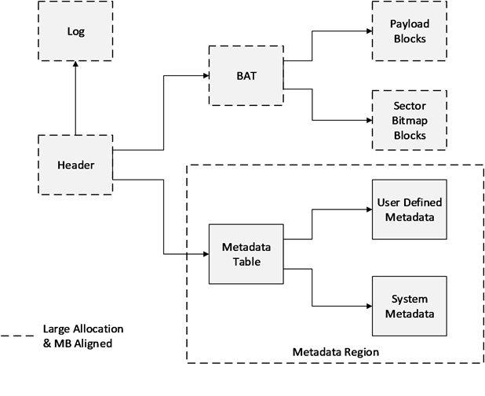
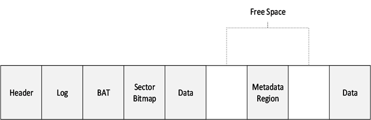
1
迟子建的《额尔古纳河右岸》我有些读不进去。
2
我是雨和雪的老熟人了，我有九十岁了。雨雪看老了我，我也把它们给看老了。
还没怎么写就四个“了”。我很难把一场一场的雨雪和老熟人联系起来，我看不到雨雪的皱纹，白发，到底长在哪里。我也想象不出雨雪变老的样子。
3
相较于物理磁盘，差分盘算个新概念，这里稍微展开解释一下。
创建VHDX：
DISKPART> create vdisk file=E:\disk00.vhdx type=expandable maximum=30000
创建了一个大小为30G的虚拟磁盘，由于类型是expandable的，文件disk00.vhdx 大小为3M。
做下分区（按UEFI启动的操作系统来分区）：
DISKPART> select vdisk file=E:\disk00.vhdx
DISKPART> attach vdisk
DISKPART> gpt
DISKPART> create partition efi size=512
DISKPART> format fs=fat
DISKPART> create partition primary
DISKPART> format fs=ntfs quick
以disk00.vhdx为母盘，创建一个差分盘disk01.vhdx:
DISKPART> create vdisk file=E:\disk01.vhdx parent=E:\disk00.vhdx
把差分盘挂上，其分区和母盘一样：
DISKPART> select vdisk file=E:\vdisk01.vhdx
DISKPART> attach
DISKPART> list partition
把其分区挂为卷：
DISKPART> select partition 1
DISKPART> assign letter=S
DISKPART> select partition 2
DISKPART> assign letter=M
两个盘符（S：，M：）出现，可以进行文件读写。读写产生的文件会留在差分盘。差分盘的大小也基本就是与母盘不同的差分文件的大小。
一个母盘可以有多个差分盘，而差分盘内容可以各不相同。一个差分盘还可以继续有差分盘，只要指定其为母盘。母盘与其差分盘之间就是树的结构了。因此业有深度的概念。
差分盘内容可以回写到母盘：
DISKPART> select vdisk file=E:\vdisk01.vhdx
DISKPART> detach vdisk
DISKPART> merge vdisk depth=1
指定的深度为1。差分盘内容回写到母盘后，差分盘就基本是空的了。
4
那时额尔古纳河右岸的森林，不仅有遮天蔽日的大树，而且河流遍布。所以很多小河是没有名字的。如今这些小河就像划过天际的流行一样，大部分已经消失。那么就让我在追忆它们的时候，把那条无名的小河，叫堪达罕河吧，因为我第一次见到堪达罕，就是在这条河流上。
我隐隐感觉这里的逻辑，如果有的话，不一致，不严谨，感性而虚伪。遮天蔽日的森林河流遍布，堪达罕可以踏入很多条河流。就是它的粪便，也可能这条小河边落一些，那条小河边有一些。它毕竟是个活泼的动物，要到处跑的嘛。怎么说呢？就像鲁迅讲述闰土猎猹一样，怎不把海边无名沙地叫猹地呢？
5
母盘与其差分盘之间是树的结构。那树就有宽度和高度。先说宽度。比如：
vdisk00 -- vdisk01
`-- vdisk02
vdisk01 和 vdisk02 拥有共同母盘 vdisk00 。都不回写相安无事，vdisk01 一旦回写，vdisk02 就废了，差分不上母盘了。
最优的选择似乎是不回写。
微软的虚拟化底座 HyperV，把虚拟机起在拥有共同母盘的子盘上。可以：
- 节省些存储，据说可以节省90％存储，
- 发放速度也有提高，因为不用重复拷贝母盘。
6
妮浩说，金得很善良，他虽然想吊死，但不想害了一棵生机勃勃的树，所以才选择了一棵枯树。
那就得说说什么叫善良了。宁死不害死一棵树，却以死毁了自己的新娘一生，离珍爱自己的父亲而去，留自己好强而内心阴暗的母亲抱恨一世。不知这算不算愚昧呢？
7
FSLogix 做用户配置管理的时候，也用到这一点。但多会话回写母盘就拎不清了。想了很多办法，都不理想。
| ProfileType | 会话 | 母盘 | 远程差分盘 | 本地差分盘 |
|---|---|---|---|---|
| 0 | 1 | 挂载 | - | - |
| 2 | - | - | - | |
| 1 | 1 | 母盘 | 挂载 | - |
| 2 | - | - | - | |
| 2 | 1 | 母盘 | - | 挂载 |
| 2 | 母盘 | - | 挂载 | |
| 3 | 1 | 母盘 | 挂载 | - |
| 2 | 母盘 | - | 挂载 |
8
魂灵去了远方的人啊，
你不要惧怕黑夜，
这里有一团火光，
为你的行程照亮。
我不太明白这里的火光怎么能照亮远方黑夜里人的行程。毕竟火光不是激光。激光也不是为了照明的。 欣赏不了建立在混乱逻辑上精致的美感。
9
微软的操作系统，比如Windows 10，可以直接从VHDX虚拟磁盘启动，当然也可以从差分盘启动。此时：
- 母盘需要和差分盘在一个卷上，
- 母盘或差分盘不能在远程，
- 母盘不能是动态的，而只能是静态的。
这一系列的限制把思杰逼到了PVS的道路上。
iSCSI可以把VHDX虚拟磁盘暴露为一个LU（Logical Unit），从操作系统来看就是一个磁盘。使用类似iPXE的Boot Loader可以把虚拟磁盘远程加载，这是无盘工作站的模型。微软有一个Windows iSCSI Target Server，鼓励人结合VHDX差分盘，结合iPXE远程启动，鼓捣无盘工作站。国内很多网吧这么搞。但远程磁盘毕竟性能不好。
微软在VHDX规范提到似乎存在一个iSCSI Parent Locator，可以把iSCSI LU当作本地差分盘的母盘来用。再考虑微软Mini Filter驱动，冥冥之中，似乎有一个比思杰PVS更优的Diskless方案存在，但还不知道具体在哪里。
10
回到差分盘。不妨把问题更清晰的表述一下。vdisk00同为 差分盘vdisk01和差分盘vdisk02的母盘：
vdisk00 -- vdisk01
|
`------ vdisk02
如果差分盘vdisk01回写母盘vdisk00，那差分盘vdisk02的母盘vdisk00就变化了。差分盘vdisk02就是一个无效虚拟磁盘了：无效磁盘无法挂载。
11
VHDX是双头的，不仅为了冗余。
02/25/24 Sunday 9PM0
1
太阳质量占太阳系质量的99.86%，相当于30万个地球质量。万有引力使得太阳只能居于中心，独自燃烧直至成为：
- 黑洞，
- 红巨星，
- 白矮星。
太阳的命运大抵如此。这也是恒星的命运。
2
八大行星由里至外：水星，金星，地球，火星，木星，土星，天王星，海王星。
冥王星除名行星列为矮行星。成为行星的三个条件：
- 围绕恒星太阳运行，
- 拥有足够质量形成近似球形，
- 清空其轨道上其他天体。
冥王星太小，质量仅为月球的1/6，地球的1/486。这么小天体其周围还有五颗卫星：卡戎、尼克斯、许德拉、科波若斯和斯提克斯。其中卡戎又太大，质量有冥王星的1/8，不能成为冥王星真正的卫星，与冥王星形成双星，相互围绕着旋转。因此冥王星违反了行星准入标准第2条。
冥王星的轨道偏心率太大，轨道不规整，与八大行星不在一个平面。冥王星轨道与海王星轨道重合一部分，冥王星也没能力把海王星收了。因此违反了行星准入第3条。
总之，小是原罪，说别的都没用。
3
海王星质量是地球的17倍，体积是地球的58倍。冥王星轨道部分与海王星轨道重合。以冥王星的体量，海王星收了冥王星当卫星也没有什么不可以。但冥王星串门的时机掌握得好，每次都能全身退出来，所谓轨道共振。
海王星有14颗卫星，其中最大的海卫一质量是冥王星的1.6倍。
4
天王星质量是地球的15倍，有27颗卫星，都不大。其中最大的天卫三相当于月球质量1/22。
5
土星是伽利略发现的，质量是地球的95倍。卫星众多，还没有精确数目。最大卫星土卫六，又名泰坦星，质量是月球1.8倍。
6
木星质量是地球的318倍，卫星众多。其中最大的木卫三质量是月球的2倍，是太阳系最大卫星。
7
火星是地球质量1/9。有两颗卫星，都很小。其中火卫二是太阳系最小的卫星。总之火星很小，但也足以把系统内部治理整齐，轨道规则，符合行星准入规则。
8
地球只有一个卫星：月球。月球质量大到水星的2/9。作为地球的伴侣，并没有扰乱地球作为行星的资格。
9
金星质量是地球的4/5。尼斯，曾被认为是金星的卫星。人类仔细观察后发现，尼斯只是碰巧出现在金星天域的昏暗恒星罢了。因此现在金星没有卫星。
10
水星质量是地球的1/17，月球质量的4.5倍，最小，但也是冥王星的28倍。和金星一样，水星也没有卫星，两个原因：
- 离太阳太近，
- 质量太小。
这都是二行星无法选择的，由此决定二行星注定行星的命运。
02/08/24 Thursday 8AM0
早在五十多年前，Donald E. Knuth（高德纳) 创建了 TeX 。高德纳心目中的 TeX 系统是要拨乱反正文档排版系统的，更确切地，是为了他鸿篇巨著《计算机编程艺术》的排版。一个用来文档排版的系统用什么来写呢？于是高德纳又发明了 Web2c 计算机编程语言，来实现 TeX。Web2c 如此优雅，以至于程序写就，文档也成，不必依赖另一个工具或系统。TeX 版本按圆周率依次逼近完美。那事情就这样成了。
1
Leslie Lamport 发现 TeX 缺少一个模版系统，于是发明了 LaTeX （这不是他的主业，他主业在并行算法和分布式系统，比如 Paxos） 。 这是大约四十年前的事。
2
高德纳把 TeX 版本冻上了，他要集中精力在有生之年完成《计算机编程艺术》这本旷世奇作。因此所有基于 TeX 的扩展都得另起名字了。
3
TeX 最初把文档编译为 DVI 文件。随着 PDF 格式出现， DVI 转成 PDF 需要使用 dvipdf 工具转换。但是一些信息在编译过程中丢失掉了， PDF 转换不完美。于是 pdfTeX 出来，直接把 TeX 文本编译为 PDF。
由于 TeX 冻上了，pdfTeX 没法去修改它，就只能使用 web2c 在 TeX 源码基础上，又写了一份。
4
(残篇:TODO)
06/17/23 Saturday 7AM0
念念不忘，必有回想。
1
运行在边缘的应用，是什么样，象什么样，应什么样？
2
如何界定边缘呢？
3
凡不在大云都叫边缘。
在蓝色星球，世界大致可分为大陆，海洋，和浮在海洋上零星的岛。是不是遗落了天空？天空高远，人类渺小，刚了解核能，不足以征服天空，固天空暂不属人。
云盘踞岛上，把持海洋，要为大陆服务。云：
来吧，免运维之苦。
大陆：
身体太沉过不去。
云：
云原生保你敏捷矫健。
大陆：
但要重生活不起。即便重生也不安全。
云：
谁说不安全？由于更专业，因此更安全。
大陆：
大海风浪高，鲨鱼成群结队，况且有海妖。
云：
在紧邻大陆之小岛，给你建朵云；建立隔离网，鲨鱼到不了；海妖看不见；有风也有浪，一起来经营，不会太危险。
大陆：
家有淡水湖，可否建朵云？
云：
那得拉根线，直连入大海。
大陆：
连线使不得。鲨鱼与海妖，顺线爬进来。
云：
可是那运维，就得自己搞。
大陆：
运维太复杂，实在搞不定。
06/11/23 Sunday 10PM0
简单原则：
KISS - Keep It Simple and Stupid
是UNIX哲学的根本原则。
1
阮一峰把简单原则打开，按代码、模块、接口、系统的层次，落实为具体可执行：
- 代码清晰给人看，众人拾柴火焰高，
- 模块解耦功能少，个人终归力量小，
- 接口组合很重要，聚沙成塔大事成，
- 不要急于做优化，先跑起来最重要。
2
Worse is better的表述:
- 简单最重要，实现简单尤为重要，
- 即使部分不正确，也要简单，
- 即使局部不一致，也要简单，
- 即使功能不完备，也要简单。
3
一段 UNIX 早期公案：
一个应用正在调用一个慢系统调用，比如read，收到一个中断信号。问：
- 系统调用该如何处理？
- 应用该如何处理？
UNIX给出的解决方案如下：
again:
if ((n = read(fd, buf, BUFFSIZE)) < 0) {
if (errno == EINTR)
goto again; /* just an interrupted system call */
/* handle other errors */
}
UNIX 认为系统调用只需要标记errno为EINTR,退出即可。用户应用需要处理errno == EINTR，重试就行。这个方案从UNIX角度看是简单的。
以下接圣经式微言大义的描述。
两个大师，一个来自麻省理工，另一个来自伯克利，一天谋面讨论这个操作系统问题。伯克利大师（以下简称伯）参与写UNIX源码。麻省大师（以下简称麻）学识渊博，在麻省理工人工智能操作系统方面，并且已经熟读UNIX源码。他与伯克利大师谋面，想仔细探讨以上问题。于是很快他就得知了真相。
麻：
这是不正确的！当中断来临，系统要记下用户进程的状态, 执行中断，并在中断结束后，继续用户进程的执行。对用户而言，就像中断没有发生一样。这样接口的设计也是一致的。而不必引入一个丑陋的
errno。你看errno并没有在read接口中出现。接口是契约，契约就是法律。自己定的法律自己就要遵守。
伯：
这的确不正确，但这实现简单，并在用户可见的方面正确。UNIX相信简单实现随时间演进，最终会达到完整的正确。
麻：
为什么不一次把事情完全做对呢？
伯：
因为程序员都是凡人吧，不是上帝。不够聪明，能正确理解用户当下的需求就很好了，不能预测将来；没有无限的时间投在代码实现上，能把当下能看到的正确实现就不错了，下次维护这篇代码的，很可能是另一个人。
因此一个不很聪明的程序员，在有限的时间内，不能保证实现绝对正确，但要确保实现简单，简单的种子持续演化，也许最终也许能逼近正确。
麻：
为什么不是一个强人，操起把牛刀，把一只小弱鸡给宰了呢？
伯：
首先无有小弱鸡待宰。代码要工作，最好当天就要工作，而不是几个月或一年，在把所有能考虑到的方面都考虑到，甚至不能考虑到的也要猜出来，才工作。
其次牛刀不存在。牛刀永远在打造途中，在路上，在理想里。在现实里只有双手可以依赖。
最后没有强人。所谓胜人者有力，胜己者强。而要进步，就得了解自己的局限，就得谦虚。
麻：
我明白你的意思了。
04/15/23 Saturday 8PM0
AI大模型来了，Fabrice Bellard用TextSynth给了他的想法。
flying dragon breathing fire:
1
他把AI大模型分为三类：
- 补全（Completion），
- 翻译（Translation），
- 图像生成（Image Generation）。
然后定了一套REST JSON API与之交互。
这没啥，那些做云计算，云服务的所谓专家们，可能都比他做得好。这不是大神该做的工作。
2
他写了套框架来支撑AI大模型的运行。使得巨大的AI大模型，在笔记本上也可以运行，就算没有高端GPU也可以运行，就算只有CPU也可以运行。我在我笔记本上，运行了5分钟，勉强算出上面的图。
这有些了不起。但也不算太出奇。比如Tabnine的离线版本也可以做到。Tabnine 的AI大模型算补全类的。补全类的AI大模型在TextSynth下运行的也很好。他强在支持很多的AI大模型。因此他可能找到了通用的方法。但他没说，只以MIT协议发布了二进制版本的LibNC,没有开源。
因此这是一个核心问题：如何使用较低成本资源运行AI大模型。
3
他提供将近100种AI大模型。这些模型是怎么训练出来的？他没有说。因此这是一个秘密。
这个秘密揭示另一个核心问题：如何使用较低的资源成本训练AI大模型。显然 Fabrice Bellard知道问题的答案。
04/09/23 Sunday 5PM0
读埃德加・斯诺的《西行漫记》，重看《阿拉伯的劳伦斯》。
1
斯诺认真思考重要的问题，不认可当下给出的答案。
2
他们都是理想主义者。或者自认理想主义者。在误打误撞的时间，在刚好的地点，找到一群莫名其妙的人，做成后来才知道大事。
3
当不知道方向的时候，就不顾一切接近真实。比如对64岁老红军的采访。
04/05/23 Wednesday 8PM0
众人在Emacs-devel给Richard M Stallman说生日快乐。
1
Richard M Stallman回：
[[[ To any NSA and FBI agents reading my email: please consider ]]]
[[[ whether defending the US Constitution against all enemies, ]]]
[[[ foreign or domestic, requires you to follow Snowden's example. ]]]
I'm glad to have fought for software freedom, and I'm still doing it.
There's a lot of work to do.
Would you be willing to do some volunteer work to help the GNU Project
and/or the free software movement?
See https://gnu.org/help for some of the kinds of work we need.
Do you see anything there you would like to do?
2
致特工：打败国内外一切敌人，捍卫宪法，向斯诺登学习
有幸为自由软件曾经战斗，而今仍在战斗。更多的战斗在前。
你愿意为GPU项目自由软件运动做些事吗？
在https://gnu.org/help 有你所需。你在那看到有你想做的吗？
3
中国倡议人类命运共同体。美国各种制裁打压。就精神实质而言，自由软件运动与人类命运共同体更近些。
04/02/23 Sunday 8PM0
西川放出其诗歌公开课的一期，谈他认为海子最好的一首诗，是《黑夜的献诗——献给黑夜的女儿》。我也是这么认为的。于是买了西川的课，听他讲诗。
1
西川讲这首诗好在“势，好在圣经式的微言大义"。
黑夜的献诗
——献给黑夜的女儿
黑夜从大地上升起
遮住了光明的天空
丰收后荒凉的大地
黑夜从你内部上升
你从远方来，我到远方去
遥远的路程经过这里
天空一无所有
为何给我安慰
丰收之后荒凉的大地
人们取走了一年的收成
取走了粮食骑走了马
留在地里的人，埋的很深
草叉闪闪发亮，稻草堆在火上
稻谷堆在黑暗的谷仓
谷仓中太黑暗，太寂静，太丰收
也太荒凉，我在丰收中看到了阎王的眼睛
黑雨滴一样的鸟群
从黄昏飞入黑夜
黑夜一无所有
为何给我安慰
走在路上
放声歌唱
大风刮过山岗
上面是无边的天空
西川作为一个诗人，对自己专业内的评论没有准确表达，多少让人有些不安。
2
耐心听完西川讲课，得出结论他不懂诗。
他热心，花费大量时间专研的是诗歌的形式，关于诗歌的灵魂他一无所知。
3
海子在《动作（《太阳·端头篇》代后记）》中写到：
诗人必须有力量把自己从自我中救出来，因为人民的生存和天、地是歌唱的源泉，是唯一的真诗。
在《我热爱的诗人——荷尔德林》里写到：
有两类抒情诗人，第一种诗人，他热爱生命，但他热爱的是生命中的自我，他认为生命可能只是自我得官能的抽搐和内分泌。而另一类诗人，虽然只热爱风景，热爱景色，热爱冬天的朝霞和晚霞，但他所热爱的是景色中的灵魂，是风景中大生命的呼吸。他们流着泪迎接朝霞。他们光着脑袋画天空和石头，让太阳做洗礼。
4
人类渺小，所知甚少，宇宙浩大，沉沉黑暗。诗人恰似世间的盐，闪电般的思想，劈开暗幕一角，让人类看到一个可能性，一个方向。此后哲学家跟进，科学家跟进。一个领域点亮，成为人类已知的一员，谁也不会记得以生命为长电的诗人。
01/28/23 Saturday 10PM0
有几年没有回老家，如今疫情放开，春节终于可以回去了。
我有一辆比亚迪E6。
上次回老家，600公里路程，用了近20小时。纯电动车，每跑200公里左右，需要充一次电。走大广高速，河北省界的充电桩基本在服务区，河南省界的充电桩大都不在服务区，而在临近县镇，充电需出高速。在通许县，半夜1点左右赶到国网电力E充电给的地点，却是一片庄稼地。其时车里只剩下3%电量。赶到县城一家旅店时，还剩2%。第二天早上联系国网电力，国网电力联系到通许县本地电管所一名师傅，很快打电话过来告诉我具体充电桩位置，急急赶过去还剩1%电量。充满电才回的家。
1
如今大广高速服务区内充电桩质量大提高，40KW平常，甚至可以到100KW，坏桩也少。不过我的车落伍了，最多到40KW。河南境内充电桩也大部分在服务区内了，由于是新装，质量也是可以的。由此600KM差不多用了13小时。去程顺利，回程在河南滑县服务区充电，刚充不到半度，停电了。打电话过去说这跳闸了，是供电局的事，什么时候恢复不知道。而且两个方向服务区充电桩都停电。只好到下一个服务区充。
2
老家村子3000+，新冠普遍过一遍（极少无症状），人死了7个，死亡率2‰。临近村子差不多，在1‰和2‰之间。镇上更少些。县城里更少。但大家都恐慌，因为在很短时间内一下子死了好几个人。以县里为例，就一个火葬场，每天也就能烧几十人，一下子多出10个人来，那就烧不了了。老百姓就恐慌。
由此我大致估算全国总共100W新冠相关死亡，差不多0.7‰。相比较其他国家是很低很低的。
3
农民大多两种工作：
- 外出打工，
- 包地。
外出打工多从事低端制造业相关，如建筑，纺织等。每年以家庭为单位有10W收入。
包地以家庭为单位大约包1000亩左右，在周边或较远的外地。每年有20~30万收入。有去蒙古包地的。蒙古土地便宜（300+一亩），土壤日照都好，庄稼茂盛。但如有冰雹，庄稼几乎绝收。如今还没有实用防冰雹办法。如找到克服冰雹办法，去内蒙古包地，可赚大钱。
也有人动过去俄罗斯包地念头。但寒冷地方种地，当下种地技术需要何种改造尚无把握。
国家新农村建设，农村水循环治理逐步展开，如何利用政策红利大多数人毫无觉察。
4
国家有政策（可能也和疫情有关），关停几乎每村都有的基督教讲道场所，集中到较大村镇；而且必须有布道证才可以讲道（而不是之前任谁都可以讲道）。西方宗教侵蚀农村固有的民风民俗，比如祭拜祖宗之类，而且大多是从家庭的母亲入手。家里的妈妈谁惹得起呀。我爷爷坟前只见到零星的祭拜， 有些还是家里男人偷偷回来祭拜的。西方宗教还把家里一切大小麻烦事都揽到“主”的头上，因此人可以不努力，自可以放宽心躺平不奋斗。这对上年纪的妈妈也许可以，但对家里的男人是致命的，不符合中国传统文化的逻辑：天行健，君子以自强不息。
5
我之前以为崇美，一味贬低当代中国，歌颂赞美民国的人，只是在受过高等教育的文科生中才少量存在。没想到在偏远的乡下，在从事体力劳动，没受过高等教育的劳苦大众中也可发现。他们忙忙碌碌，一天工作超过15小时，还有时间思考中国科技不强大在于言论不自由，人民不民主；还在计划下一代能移民美国，能更幸福；还在质问疫情信息不透明，“死亡远不止这个数儿”。
岁月啊，你划过众生，给每个留下不尽相同的疤痕！
6
我爷爷家里老大，两个弟弟，两个妹妹。我爷爷96岁去世（2020年）。大姑奶奶去世时95岁。都是无疾而终。二爷爷80岁寿归正寝，他在65岁查出癌症晚期，医生说回家吧，爱吃啥就吃啥吧。结果他回来又活了15年，终死于癌症。如今家里老人还剩二姑奶奶89岁，三爷爷86岁。
我爸爸一辈兄弟十个（带着我这辈孩子）约好去看二姑奶奶。二姑奶奶能认出我爸爸一辈所有的人。没那么快，每认出一个就很开心。但到我这一辈就需要介绍和解释了。也需要慢慢想一想，想清楚也是开心的不得了。我们要走的时候二姑奶奶就不高兴了。
三爷爷的大儿子（我七叔）屈服于妻子（我七婶），不孝顺父亲（我三爷）。家族聚会我爸爸（掌门长子）批评他声色俱厉。他狡辩父慈子才孝。我爸爸声调更高。我担心他的心脏病，就说我能说两句吗？我说世上没几个孝子，包括我也不是，只要做到父是父，子是子就行了。他表示同意。
7
生活之艰辛， 很多灵魂被你挤压到扭曲，照镜子跟见了鬼一样。
01/01/23 Sunday 11AM0
cloud-init是GPLv3和Apache2.0双协议发布的自由软件, 于2009年，最初 Canonical为其服务器版操作系统Ubuntu运行于亚马逊EC2而设计。 cloud-init使得Ubuntu灵活运行于云端，因此Canonical就把自己的操作系统叫云原生操作系统。
cloud-init连接云平台和操作系统。
1
cloud-init所支持的云平台叫数据源（Data Source），也就是初始化操作系统所用数据的来源。如果把数据源看作一个服务，那就又提metadata service的概念了。
以下列出cloud-init所支持的数据源：
| 数据源 | 创建日期 | 贡献者 |
|---|---|---|
| NoCloud | 2009 | Canonical, HP |
| EC2 | 2009 | Canonical, HP |
| AltCloud | 2009 | Canonical, HP, Yahoo! |
| OVF | 2011 | Canonical, HP |
| None | 2012 | Yahoo! |
| MAAS | 2012 | Canonical |
| ConfigDriver | 2012 | Canonical |
| CloudStack | 2012 | Canonical, Cosmin Luta |
| OpenNebula | 2012 | Canonical, Yahoo!, Cerit-Science Cloud |
| SmartOS | 2013 | Canonical |
| OpenStack | 2014 | Yahoo! |
| CloudSigma | 2014 | CloudSigma |
| DigitalOcean | 2014 | DigitalOcean |
| GCE | 2014 | GCE |
| Azure | 2013 | Canonical |
| Bigstep | 2015 | Bigstep |
| Aliyun | 2016 | Aliyun |
| Scaleway | 2017 | Scaleway |
| [Hetzner] | 2018 | [Hetzner] |
| IBMCloud | 2018 | IBMCloud |
| OracleCloud | 2018 | Canonical |
| RbxCloud | 2018 | RbxCloud |
| [VMware] | 2018 | [VMware] |
| Exoscale | 2019 | Exoscale |
| UpCloud | 2021 | UpCloud |
| LXD | 2021 | Canonical |
| Vultr | 2021 | Vultr |
| [NWCS] | 2022 | [NWCS] |
2
其中EC2最早。著名IP 169.254.169.254就来自此。基于EC2的变种有：
- aliyun,
- aws,
- brightbox,
- e24cloud,
- outscale,
- zstack.
其中阿里云后来加了自己的数据源：
class DataSourceAliYun(EC2.DataSourceEc2):
dsname = "AliYun"
metadata_urls = ["http://100.100.100.200"]
# The minimum supported metadata_version from the ec2 metadata apis
min_metadata_version = "2016-01-01"
//
3
以上Metadata来自网络，可以叫Metadata Service。
4
LXD Agent是LXD运行在LXD所起虚机里的Agent。
+--------------HOST-----------------+
| +-------VM-------+ |
+--------------+ | +-----+ | +-----------+ | |
| lxc shell vm +--http-+->| LXD +-vsock-+->| LXD Agent | | |
+--------------+ | +-----+ | +-----------+ | |
| +----------------+ |
+-----------------------------------+
须知：
LXD Agent监听vsock。LXD通过vsock与LXD Agent通讯。
执行命令和上传下载文件是容器技术的标配。LXD把系统容器管理做到了极致，逐渐拓展到虚机管理。由此LXD兼具系统容器管理和虚机管理。在跨界的过程中（从API角度看并未跨界），exec和sftp也从系统容器带到了虚机。
5
LXD做系统容器管理的时候，系统容器支持cloud-init。一般容器里应用配置都固化在容器镜像里，比如Docker容器镜像。容器启动应用运行，并不需要沉重的cloud-init配置。但LXD支持的是系统容器。系统容器要和虚机越像越好。系统容器里的配置要和虚机里的配置相同。因此LXD就支持了 cloud-init。
那如何支持呢？
两种：
- NoCloud，
- LXD
其实现是显然的，这里不做展开。
07/16/22 Saturday 7PM0
Org Remark是一个Emacs下用Org Mode对文本文件做标记记笔记的工具。
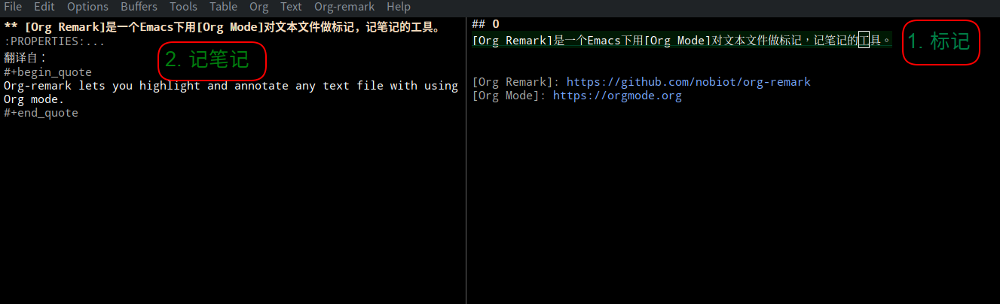
1
这有什么用呢？
我在精读代码的时候用它来记笔记。就像读书一样，有时不解，就先把疑惑记下来。有时懂了，就把一点心得记下来。这笔记和读纸质书，写在书边上笔记一样。
1621年费马读丢番图的《算术》，读到：
$$ a^2 + b^2 = c^2 $$
有无数组整数解存在，由此想到费马猜想：$$a^n + b^n = c^n$$
当$$n > 2$$时， 整数解不存在。 于是他在纸边写下：
我想到了一个绝妙的证明，但是这里太窄了，写不下。
Org Remark给的纸边不窄，Org Mode数学公式支持也很好，费马再无借口，费马定理或能提前370多年得证。
2
Org Remark安装配置简单。
-
安装
M-x package-install org-remark -
配置
M-x customize-variable org-remark-global-tracking-mode t M-x customize-variable org-remark-notes-file-name ~/.emacs.d/marginalia.org -
快捷键
(define-key global-map (kbd "C-c n m") #'org-remark-mark) (with-eval-after-load 'org-remark (define-key org-remark-mode-map (kbd "C-c n o") #'org-remark-open) (define-key org-remark-mode-map (kbd "C-c n [") #'org-remark-prev) (define-key org-remark-mode-map (kbd "C-c n ]") #'org-remark-next) (define-key org-remark-mode-map (kbd "C-c n r") #'org-remark-remove))
笔记文件名我选的绝对路径，也就是说所有笔记都记在一个文件（~/.emacs.d/marginalia.org）。如选相对路径，比如marginalia.org，那每个目录都会生成一个marginalia.org文件。阅读源码时候一般都有版本控制Git在，多一个文件稍有不便。
3
和读书笔记工具一样，Org Remark有两个使用模式：
- 记笔记，
- 读笔记。
| 功能 | 命令 | 快捷键 |
|---|---|---|
| 标记 | M-x org-remark-mark | C-c n m |
| 开记 | M-x org-remark-open | C-c n o |
| 上条 | M-x org-remark-prev | C-c n [ |
| 下条 | M-x org-remark-next | C-c n ] |
| 删除 | M-x org-remark-remove | C-c n r |
在阅读的时候随手标注：
M-x org-remark-mark
记下所思所想：
M-x org-remark-open
再次阅读的时候看到自己的标记，打开：
M-x org-remark-open
翻到上一个标记：
M-x org-remark-prev
下一个标记：
M-x org-remark-next
如果看到有些不实（比如费马看到自己的标注），可以删掉：
M-x org-remark-remove
4
这些笔记是用文本格式的Org Mode所写，一些有价值的东西将来方便整理出来，就如本篇文档一样。
2022年06月12日 星期日 晚0
两个质数，如其相差2，则称其为孪生质数。
孪生质数猜想：孪生质数有无穷对。
1
引理1：连续3个自然数其中必有1个为3整除。
易证，证明略。
引理2：大于3的孪生质数对中间的数是6的倍数。
证明： 由引理1，大于3的孪生质数对，以及中间的数是连续整数，其中必有1个数为3的倍数。由于孪生质数对为质数，因此只有中间的数是3的倍数。又由于中间数为偶数，故其为6的倍数。
2
三个质数，如其依次相差为2，则称为三生质数。
3
定理1： 三生质数只有1组，为3：5：7。
证明：
只需证明大于3的三生质数不存在。
假设大于3的三生质数存在，由引理2，其两个中间数都是6的倍数。而这两个中间数相差为2，不可能为6的倍数。故矛盾。因此大于3的三生质数不存在。故定理得证。
07/16/22 Saturday 12PM0
听屈原词，窦唯曲，二媛唱的《大招》。
1
大招
原作 ： 屈原
编曲 ： 窦唯
演唱 ： 窦靖童 窦家媛
青春受谢，白日昭只。
春气奋发，万物遽只。
冥凌浃行，魂无逃只。
魂魄归徕！无远遥只。
魂乎归徕！无东无西，无南无北只。
东有大海，溺水浟浟只。
螭龙并流，上下悠悠只。
雾雨淫淫，白皓胶只。
魂乎无东！汤谷寂寥只。
魂乎无南！南有炎火千里，蝮蛇蜒只。
山林险隘，虎豹蜿只。
鰅鳙短狐，王虺骞只。
魂乎无南！蜮伤躬只。
魂乎无西！西方流沙，漭洋洋只。
豕首纵目，被发鬤只。
长爪踞牙，诶笑狂只。
魂乎无西！多害伤只。
魂乎无北！北有寒山，逴龙赩只。
代水不可涉，深不可测只。
天白颢颢，寒凝凝只。
魂乎无往！盈北极只。
魂魄归徕！闲以静只。
自恣荆楚，安以定只。
逞志究欲，心意安只。
穷身永乐，年寿延只。
魂乎归徕！乐不可言只。
五榖六仞，设菰粱只。
鼎臑盈望，和致芳只。
内仓鸽鹄，味豺羹只。
魂乎归徕！恣所尝只。
鲜蠵甘鸡，和楚酪只。
醢豕苦狗，脍苴蓴只。
吴酸蒿蒌，不沾薄只。
魂兮归徕！恣所择只。
炙鸹烝凫，煔鹑陈只。
煎鰿膗雀，遽爽存只。
魂乎归徕！丽以先只。
四酎并孰，不涩嗌只。
清馨冻饮，不歠役只。
吴醴白孽，和楚沥只。
魂乎归徕！不遽惕只。
代秦郑卫，鸣竽张只。
伏戏驾辩，楚劳商只。
讴和扬阿，赵箫倡只。
魂乎归徕！定空桑只。
二八接舞，投诗赋只。
叩锺调磬，娱人乱只。
四上竞气，极声变只。
魂乎归徕！听歌撰只。
朱唇皓齿，嫭以姱只。
比德好闲，习以都只。
丰肉微骨，调以娱只。
魂乎归徕！安以舒只。
嫮目宜笑，蛾眉曼只。
容则秀雅，稚朱颜只。
魂乎归徕！静以安只。
姱脩滂浩，丽以佳只。
曾颊倚耳，曲眉规只。
滂心绰态，姣丽施只。
小腰秀颈，若鲜卑只。
魂乎归徕！思怨移只。
易中利心，以动作只。
粉白黛黑，施芳泽只。
长袂拂面，善留客只。
魂乎归徕！以娱昔只。
青色直眉，美目媔只。
靥辅奇牙，宜笑嘕只。
丰肉微骨，体便娟只。
魂乎归徕！恣所便只。
夏屋广大，沙堂秀只。
南房小坛，观绝霤只。
曲屋步壛，宜扰畜只。
腾驾步游，猎春囿只。
琼毂错衡，英华假只。
茝兰桂树，郁弥路只。
魂乎归徕！恣志虑只。
孔雀盈园，畜鸾皇只。
鹍鸿群晨，杂鹙鸧只。
鸿鹄代游，曼鹔鹴只。
魂乎归徕！凤皇翔只。
曼泽怡面，血气盛只。
永宜厥身，保寿命只。
室家盈廷，爵禄盛只。
魂乎归徕！居室定只。
接径千里，出若云只。
三圭重侯，听类神只。
察笃夭隐，孤寡存只。
魂乎归徕！正始昆只。
田邑千畛，人阜昌只。
美冒众流，德泽章只。
先威后文，善美明只。
魂乎归徕！赏罚当只。
名声若日，照四海只。
德誉配天，万民理只。
北至幽陵，南交阯只。
西薄羊肠，东穷海只。
魂乎归徕！尚贤士只。
发政献行，禁苛暴只。
举杰压陛，诛讥罢只。
直赢在位，近禹麾只。
豪杰执政，流泽施只。
魂乎归徕，国家为只。
雄雄赫赫，天德明只。
三公穆穆，登降堂只。
诸侯毕极，立九卿只。
昭质既设，大侯张只。
执弓挟矢，揖辞让只。
魂乎徕归！尚三王只。
2
屈原使出大招，与魂对话，连哄带骗，招魂归故国。
魂：
要我回去，给个理由先？
屈：
春天来临，万物生长。
魂：
这是你们发展的需要，与我何干？
屈：
四方冬雪未消，魂也无处安放呀。
多年之后，大疫横行，也只有祖国，动态清零，经济上做到正增长。
魂：
我要去东边看看，太阳升起的地方。
屈：
东方苍茫大海，迷雾阵阵，淫雨绵绵。
将来鉴真东渡，七次才成功。
那时人类掌握的航运技术，远超现在所有，还差点葬身鱼腹。
就算平蹚黄海到了日本，你看那日本形状，不就是一只没角的螭龙吗？
多年之后，广场协议，会致使日本经济彻底失去活力。
不要以为名为旸谷日出之地，有啥了不起。
多年之后，两颗原子弹，小男孩胖子，把那里炸的渺无人迹，岑寂空旷。
魂：
东边去不了，我去南边。
屈：
可别去南边呀。
南边火焰山绵延千里，要想过去，得去牛魔铁扇那借得芭蕉扇。
多年之后，行者想起烧昏的大火，不由得心有余悸。
即便去了印度，污秽之国，种姓制度，与邻为壑。
魂：
南边去不了，我去西边。
屈：
可别去西方呀。
西方流沙，茫茫无边。
突厥鬤狗，阻绝未来贸易，欧洲沉入黑暗中世纪。
即便将来文艺复兴，最终仍为美利坚奴役。
魂呀可别去西方，多重伤害等着你。
魂：
西方去不了，我去北方。
屈：
可别去北方呀。
北方有寒山，山上有恶龙，一口吃了你。
即便过了寒山，还有深不可测的带水。
漫天大雪，西伯利亚寒流，人冻冰雕。
最终俄罗斯经济，陷入停滞。
魂呀别去，再往北到北极，和北极熊作伴。
魂：
东南西北都去不了，可如何是好？
屈：
我看你还是回来，哪也别去。
咱国家多好，安定团结。
想干什么，想要什么，不用外求。
长久在此，天天快乐，活的也长呀。
魂呀来吧，幸福的不知从何说起。
魂：
先从吃说吧。
屈：
主粮安全已实现，饭碗端在自己手。
猪肉价格也稳定，百姓想咋吃就咋吃。
还有各色的野味，常常新鲜也不奇。
魂快来吧，想吃啥吃啥。
魂：
有啥特色美食？
屈（略沉吟）：
鲜龟嫩鸡，配楚酪。
酱猪腊狗，荟香芹。
吴蒿酸菜，最正宗。
魂呀快来，随便选。
魂：
还有啥？
屈：
烤鸦蒸鸭，烧鹌鹑。
煎鱼炖雀，余味留。
魂快快来，尝尝鲜。
魂：
有啥喝的么？
屈：
鲜啤四酿，不涩温良。
冰镇了喝，最是清爽。
魂：
啤酒没劲，有白的么？
屈：
那整个吴醴白，掺楚清酒。
魂快来吧，酒上放心。
魂：
有音乐么？
屈：
代秦郑卫四大乐队，
伏羲《驾辨》，张楚《劳商》。
讴歌《杨阿》，赵传洞箫。
魂呀快来，调好空桑。
魂：
有歌舞么？
屈：
两列轮舞，踱词蹈点。
扣钟调罄，乐的发狂。
各地音乐比美，各种声音变调。
魂呀快来，一起听歌。
魂：
美么？
屈：
唇红齿白，是在漂亮。
贤德好静，雍容华贵。
丰肉微骨，心旷神怡。
魂呀来吧，安乐舒畅。
魂：
看得上我么？
屈：
眉目传情巧笑撩人，峨眉娟秀细又长。
容貌俊美，天使面容。
魂呀快来，你会喜欢。
魂：
再说说美女。
屈：
美艳姑娘健壮修长，秀美佳丽仪态万方。
面额饱满耳朵匀称，弯弯眉毛圆规描样。
心意宽广体态绰约，姣好艳丽打扮在行。
腰肢细小脖颈纤秀，就像鲜卑女子一样。
魂魄归来吧！有你相思。
魂：
我也可以？
屈：
她们心中正直温和，动作优美举止端庄。
白粉敷面黛黑画眉，再把一层香脂涂上。
举起长袖面前拂动，殷勤留客热情大方。
魂魄归来吧！晚上还可以娱乐一场。
魂：
随便来？
屈：
有的姑娘黑色直眉，美丽眼睛逸彩流光。
迷人酒涡整齐门牙，嫣然一笑心舒神畅。
肌肉丰满骨骼纤细，体态轻盈翩然来往。
魂魄归来吧！你爱怎么样就怎么样。
魂：
住的咋样？
屈：
这里房屋又宽又大，朱砂图绘厅堂明亮。
南面厢房还有小坛，楼观高耸超越屋檐。
深邃屋宇狭长走廊，驯马之地就在近旁。
魂：
出游呢？
屈：
驾车步行一起出游，射猎场在春天郊场。
玉饰车毂金错车衡，光彩夺目华丽鲜亮。
一行行的茝兰桂树，浓郁香气路上弥漫。
魂魄归来吧！怎样游玩随您的意愿。
魂：
说说园里都有些啥？
屈：
羽毛鲜艳孔雀满园，稀世凤凰还有青鸾。
鵾鸡鸿雁清晨啼叫，水鹜鸧鹒夹杂其间。
天鹅池中轮番嬉游，鹔鷞戏水连绵不断。
魂魄归来吧！看看凤凰飞翔在天。
魂：
有没有爵位？
屈：
润泽脸上满是笑容，血气充盛十分康健。
身心一直调养适当，保证长命益寿延年。
家族中人充满朝廷，享受爵位俸禄盛长。
魂魄归来吧！安居宫室确定不变。
魂：
仁政如何？
屈：
这里道路连接千里，人民出来多如浮云。
公侯子男诸位大臣，听察精审有如天神。
体恤厚待夭亡疾苦，慰问孤男寡女温暖。
魂魄归来吧！分清先后施政行善。
魂：
如何实施呢？
屈：
田地城邑阡陌纵横，人口众多繁荣昌盛。
教化普及广大人民，德政恩泽昭彰辉映。
先施威严后行仁政，政治清廉美好光明。
魂魄归来吧！赏罚适当一一分清。
魂：
可尊贤德？
屈：
名声就像辉煌太阳，照耀四海光焰腾腾。
功德荣誉上能配天，妥善治理天下万民。
北方到达幽陵之域。南方直抵交趾之境。
西方接近羊肠之城，东方尽头大海之滨。
魂魄归来吧！这里尊重贤德之人。
魂：
领袖咋样？
屈：
发布政令进献良策，禁止苛政暴虐百姓。
推举俊杰坐镇朝廷，罢免责罚庸劣之臣。
正直有才居于高位，作辅弼在领袖近身。
豪杰贤能臣子掌权，德泽遍施百姓感恩。
魂魄归来吧！国家需要有作为之君。
魂：
国家治理？
屈：
祖国威势雄壮烜赫，上天功德万古彪炳。
三公和睦互相尊重，上上下下进出朝廷。
各地诸侯都已到达，辅佐君王设立九卿。
箭靶已树目标鲜明，大幅布侯也都挂定。
射手个个持弓挟箭，相互揖让谦逊恭敬。
魂魄归来吧！崇尚效法前代的三王明君。
3
李鸿章指出中国面临“数千年未有之大变局”之后，一些先知先觉的精英，包括李鸿章自己，把精神放在四方，寻找救亡图存。
救亡图存的良方没那么容易找到，有些找着找着反倒把自己的灵魂丢掉了。所谓失魂落魄。灵魂散落四方。
有崇尚东方日本的，明治维新辉煌成就，如日出之地；有照搬苏联的，十月革命让人神往，如王明等；有跪拜西方欧美的，毕竟人生活富裕，文治武功，如当下各路公知之流；甚至有些哈印的，不知为个啥，反正就是觉得自己不行，如矮大紧类。这些都是精神的迷失。
4
地理决定历史，历史决定文化，文化决定制度。
谁在召唤呢？
母亲是个比喻。可以说制度在召唤，文化在招魂，历史在召唤，地理在召唤。
地理在召唤？生我养我的这块土地，祖祖辈辈生生死死的这块土地，在召唤。
5
屈原站出来喊这些游魂快回家吃饭，就像一个母亲，在天黑之后。扯着嗓子喊，贪玩不回家的孩子，回家吃饭。
妈妈说天黑了外面有大老妖不回家小心把你吃了。
孩子心里犯嘀咕，有妖怪？还吃人？以前没有听说呀。
妈妈说饭做好了，炒鸡蛋，红烧肉，烙饼，快回家吃吧。
孩子心想，我在外玩这半天，作业也没做，回家不会挨打吧。
妈妈说房间收拾好了，床铺好了，吃完饭放心睡觉，就是这样。
孩子心想，你这还好，我爹能饶了我吗？
妈说你爹今天心情好，邻家女孩也来家，晚上一起吃饭，快回来吧。
6
谁在高密乡红高粱地里一本正经地揭露人性的黑暗？生你养你的土地上，祖辈的黄皮被剥下，鸡巴割了扔给狗，狗闻一闻还不吃；丑陋土八路，妨碍了你个人利益，怎么杀都没错。
谁在丰乳肥臀里撕心裂肺歌颂自己母亲？母亲近乎淫荡勇敢对抗你眼中的黑暗——中国人与生俱来的丑恶和原罪；每个人活在你想象的丑恶中，过着猪狗不如的日子；只有外来的人是人，被他们强奸也是要么自愿，要么快乐，要么无所谓。
鲁迅讲中国旧社会吃人，是想为劳苦大众寻找一个新社会，至少要救救孩子。你写吃人是真吃人，吃的就是孩子，切切期望的是东方日本人西方洋人，进来中国千万别把这些当人，万万别救赎，直接当食物米西了就完了。
如今窦唯出来发大招，屈原借司马南之口召唤你这游魂，别迷离西方了，普京打乌克兰热闹，也别迷离东方日本，安倍已然惨死街头，招你这不肖子回家，家里有饭，你也洗洗手，老大不小，该懂点事儿了。
2022年05月15日 星期日 下午0
Emacs下iedit-mode定义了一个快捷键：Ctrl-;。但这个快捷键在Deepin Linux下被占用了：
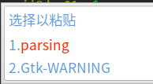
由于我大部分时间泡在Emacs里，不大许什么东西能挡了Emacs的道儿。因此我需要：
- 找出谁设置了
Ctrl-;, - 禁掉或修改为其他。
1
Linux桌面并没有一个管理所有全局快捷键的地方。Deepin提供了一个快捷键管理的入口，控制中心 -> 键盘和语言 -> 快捷键：

其中有一个绑定在剪贴板的快捷键Super-V：
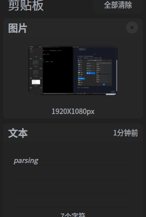
Super其实就是Windows下的Windows键：
荣耀出Linux本，键盘改了点： 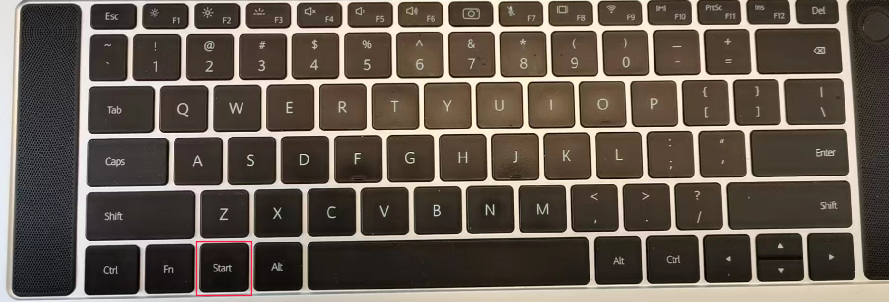
Deepin沿用Super-V也是为了和Windows下的使用习惯保持一致。这也不是必要的。Windows下的快捷键管理也混乱，没有统一的地方；快捷键还满天飞。看似为了用户的方便，太多的快捷键反而给用户（尤其是Emacs用户）造成麻烦。微软的开发好像也没有意识到这一点。我们可以从微软新近应用vscode和terminal快捷键的设置印证这一点。
回到主题，这个Ctrl-;并不是Deepin设置的。
2
我用xwininfo看这个粘贴板窗口，得到：
xwininfo: Window id: 0x600002 "Fcitx Input Window"
Absolute upper-left X: 1
Absolute upper-left Y: 839
Relative upper-left X: 1
Relative upper-left Y: 839
Width: 200
Height: 162
Depth: 24
Visual: 0x21
Visual Class: TrueColor
Border width: 0
Class: InputOutput
Colormap: 0x20 (installed)
Bit Gravity State: NorthWestGravity
Window Gravity State: NorthWestGravity
Backing Store State: WhenMapped
Save Under State: yes
Map State: IsViewable
Override Redirect State: yes
Corners: +1+839 -1719+839 -1719-79 +1-79
-geometry 200x162+1-79
可以看到，是fcitx输入法框架(Free Chinese Input Toy for X，小企鹅输入法框架)设置的。
3
我在Linux下用的是华宇拼音输入法：
华宇拼音输入法的前身是紫光拼音输入法。在Linux下，其也是基于fcitx输入法框架实现。这没啥特别，其他如：
- 搜狗拼音，
- Sun拼音，
等，也是基于fcitx输入法框架实现。fcitx大有一统江湖之势。
4
剪贴板是放到Deepin设置里管理，还是放到输入法框架里管理呢？这是个问题。我现在看到dde-clipboard可以管理的内容有文本和图片。fcitx的剪贴板管理只有文本。 fcitx剪贴板更容易使用，和输入文字一样，使用数字选取剪贴板历史。
5
最终我使用fcitx-configtool将剪贴板历史快捷键修改为Super-;：
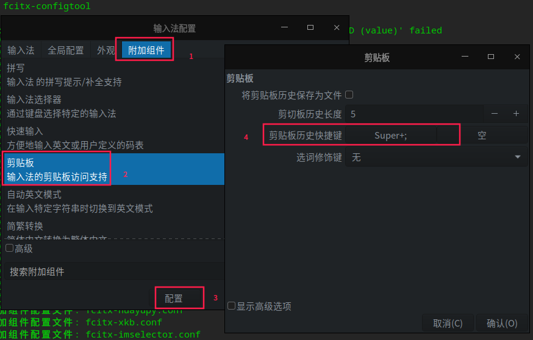
6
Linux桌面下全局快捷键需要一个统一管理的地方。如今的管理太分散。全局快捷键的定义也应该越少越好，最好能够提供统一的去除方法，把不使用的权利还给用户。
2022年05月08日 星期日 下午0
游戏引擎要构建一个虚拟现实（Virtual Reality）世界。此世界是虚拟的，万物以数字形式存在；此世界是现实的，万物拟现实以存在。 现实的要素：
- 时间，
- 空间，
- 声音。
花香，美味暂时不管。
1
虚拟现实以1/30秒每帧的速度滴答前行。在此1/30秒，游戏引擎要为下1/30秒准备好：
- 万物的运动，生命值，组合与拆分，以及相互作用，
- 万物的表面纹理，反射这是，
- 环境渲染，
- 万物的声音渲染。
虚拟现实两个状态：
- 构建态，
- 运行时。
2
英伟达Omniverse解决虚拟现实的构建问题：
- 基于USD框架构建多人，多工具协作的载体，
- 构建Nucleus平台提供以数据为中心的协作，
- 提供虚拟物交流的平台。
云渲染，渲染的操作发生在云端。云渲染管理云端GPU资源：
- 多GPU协作，
- 多渲染调度。
3
BBR (Bottleneck Bandwidth and Round-trip propagation time)是一套拥塞控制算法，适合在一定丢包的弱网环境下使用。
BBR进入了Linux Kernel 4.9。之前，TCP CUBIC（以及更早的拥塞控制算法），是基于丢包的拥塞控制，一有丢包发生，就减小发送窗口，拥塞控制和可靠传输是耦合的。 BBR解耦了二者：
static void tcp_cong_control(struct sock *sk, u32 ack, u32 acked_sacked,
int flag, const struct rate_sample *rs)
{
const struct inet_connection_sock *icsk = inet_csk(sk);
if (icsk->icsk_ca_ops->cong_control) { // BBR 接手
icsk->icsk_ca_ops->cong_control(sk, rs);
return;
}
if (tcp_in_cwnd_reduction(sk)) {
/* Reduce cwnd if state mandates */
tcp_cwnd_reduction(sk, acked_sacked, rs->losses, flag);
} else if (tcp_may_raise_cwnd(sk, flag)) {
/* Advance cwnd if state allows */
tcp_cong_avoid(sk, ack, acked_sacked);
}
tcp_update_pacing_rate(sk);
}
BBR只需在服务端启用，客户端无需改动：
cat > /etc/sysctl.conf.d/bbr.conf <<EOF
net.core.default_qdisc=fq
net.ipv4.tcp_congestion_control=bbr
EOF
sysctl -p
modprobe tcp_bbr
tc工具可以用来模拟传输时延和丢包率：
tc qdisc add dev eth0 root netem loss 1% latency 25ms
2022年04月17日 星期日 下午我的Emacs窗口管理如下：
| 快捷键 | 命令 |
|---|---|
C-x 0 | delete-window |
C-x 1 | delete-other-windows |
C-x 2 | split-window-below |
C-x 3 | split-window-right |
C-x 4 | delete-other-window |
其中delete-other-window如下：
(defun delete-other-window()
"Delete other window"
(interactive)
(delete-window (next-window)))
这是唯一的扩展，其他几个都是按Emacs的默认在用。
好像这几个操作就足够了。其他操作类似增大缩小窗口我用的不多，而且这么多年来好像不用也没啥过不去的。
2022年03月12日 星期六 晚0
北师大梁灿彬老师于2022年2月16日去世。
1
我导师转送我的这本《微分几何入门与广义相对论》，扉页上有梁老师的笔迹：
裴寿镛教授指正
梁灿彬赠
2006.2
2
序言感谢名单有我的名字。二十多年前，我参与过这门课的学习，但并未入门。
3
本书在第七章，由物质分布产生引力，引力表现为时空弯曲出发，寻找能动张量（描写物质分布）和时空曲率的关系，最终得到广义相对论的基本假设——爱因斯坦方程。
4
如何理解时空弯曲？
这就需要学习前六章，理解拓扑空间，流形与张量场，黎曼曲率张量，流形间的映射，流形上的微分，流形上的积分，以及微分几何描写的狭义相对论。爱因斯坦当年就是这么一步步走过来的。
5
爱因斯坦方程描述物质分布与时空曲率的关系。在一定约束条件下解爱因斯坦方程就是对我们所在世界的探索。史瓦西率先给出爱因斯坦方程的史瓦西解。爱因斯坦基于史瓦西解给出引力波存在的预言。后人开启黑洞的研究，宇宙的诞生，以及宇宙论。
6
这是《微分几何入门与广义相对论》上册的脉络。这本书的中册，下册我还没有看。二十多年前我参与这门课的学习但没有入门，如今读起来也吃力，但上册的脉络总算理清楚了。
2022年02月28日 星期一 下午参加CCF元宇宙探秘，听到了一些观点。
0
关于元宇宙的出现，郑纬民院士的观点：
- 技术进步使得虚实空间交互成为可能，
- 经济发展需要有新的出口，新的经济增长点，
- 人民生活需要有新的体验。
这样元宇宙与技术进步，经济发展，人民生活息息相关；这样元宇宙炒作论，元宇宙圈钱论，不攻自破。
1
关于元宇宙的名字，尤可可博士观点：
- 元
| 元 | 亨 | 利 | 贞 |
|---|---|---|---|
| 始 | 通 | 和 | 正 |
| 春 | 夏 | 秋 | 冬 |
- 宇 - 时间
- 宙 - 空间
元宇宙成了时空的起点，是第一次脱离Metaverse，纯正中国味道的释义。
2
+-----------Metaverse-------------+
| |
| |
+-------+---------+ +---------+--------+
| Virtual Reality | | Physical Reality |
+-----------------+ +------------------+
3
用"灵境"是实事求是的
钱学森（1998年6月18日）
Virtual Reality是指用科学技术手段向接受的人输送视觉的，听觉的，触觉的以至于嗅觉的信息，使接受者感觉到如亲身临境。这里要特别指出：这临境感不是真地亲临其境，而是感受而已；所以是虚的。这是矛盾。
而我们传统文化正好有一个表达这种情况的词：”灵境“；这比”临境”好，因为这个境是虚的，不是实的。所以用“灵境”才是实事求是的。
4
Intel 3DAT技术助力2022北京冬奥会开幕式雪花表演：
1. 原计划500+小演员跟随地屏雪花视频进行表演，
+---------Ground Screen---------+ 2. 演员束手束脚，难于排练，效果很差，
| | 3. 3DAT解放了500+孩子天性，雪花跟随演员起舞。
| | +----+
| +---------------+ | | |
| | 500+ Children +------3DAT------->| AI |
| +---------------+ | | |
| Snow Flakes |<---100ms-+ |
| | | |
+-------------------------------+ +----+
5
Augmented Reality is a variation of Virtual Reality.
现实增强技术是虚拟现实技术的最新进展。
6
视觉灵境：
声网MetaChat元语聊解决方案目前提供Party、咖啡厅、酒吧3种虚拟场景，未来将会拓展诸如会展、自习室、迪厅等在内的多元化场景，开发者可根据业务玩法选择合适的场景，也可按需定制。以上虚拟场景基于AR-3D引擎建模，可以实现多风格建筑、物体等3D物体效果；雨水、火焰、烟雾等复杂粒子效果；以及碰撞、重力等物理效果；并支持卡通、反射、高光计算、多光源等复杂的材质系统。逼真、沉浸式的虚拟场景避免了单一的语聊场景给用户带来的视觉疲劳，还能缓解用户间沉闷、尴尬的初始沟通气氛。
听觉灵境：
玩家在进入房间后会听到房间内正在播放的背景音乐，例如在咖啡厅场景中会听到轻音乐，在酒吧会有驻场乐队、DJ等不同效果。玩家走向房间的不同方位也会听到不同的BGM效果，比如随着脚步的走远BGM音量变小，声音逐渐清晰或减弱等。除此之外，玩家还可以通过前后左右的位置操控，移动到其他玩家身边开启畅聊。最让人激动的是，房间内的BGM可以与玩家的音频共存，这就意味着玩家既可以听到房间内的背景音乐，又能听到一定范围内其他玩家的声音，再辅以玩家的虚拟形象，这就完美模拟了真实的互动感。宛若众人在现实中的酒吧听着音乐、喝着酒，畅聊人生得与失，岂不快哉？
7
元宇宙有多少个？
比如Meta做了一个元宇宙，Microsoft做了一个元宇宙，这两个元宇宙如何沟通呢？ Meta元宇宙中的数字人，可否旅行到Microsoft元宇宙？元宇宙中的虚拟物品可否进行贸易？原则上，一个元宇宙中的土地，山川，河流，道路，桥梁，以及基础设施是不可移动的。宇宙间贸易如何进行？这就牵涉一系列协议制定，一系列标准制定。
8
无论拥有多高的科技，我们终归要直面我们沉重的生活，思考人之所以为人的根本，仿生人所拥有生命的纹理，与原生人生命纹理的异同，数字人的情感，与仿生人情感的纠葛，以及是否为人的恍惚感。
洛杉矶大雨洗刷脏乱街区，昭昭雾气，和着路边热腾混沌摊，原生人，仿生人，数字人杂居，向着不可知未来，蜂拥而去。
2022年01月15日 星期六 上午0
NATS是Neural Automatic Transport System的缩写，翻译成中文是神经自动传输系统。
1
本节译自Publish Subscribe。
NATS实现了一个分布式、一对多的、消息发布订阅通讯模型。发布者Publisher）发送一个消息到一个主题（Subject），任何监听在这个主题的活跃的订阅者（Subscriber）收到这个消息。订阅者也可以关注通配符匹配的主题，这有一点点像正则表达式的意思。如下图示：
+----------+
+-----msg1-->|Subscriber|
| +----------+
|
|
+---------+ +-------+ | +----------+
|Publisher+-----msg1---->|Subject+---+-----msg1-->|Subscriber|
+---------+ +-------+ | +----------+
|
|
| +----------+
+-----msg1-->|Subscriber|
+----------+
这种一对多的模式有时候也叫扇出（Fan-Out）。
2
以下译自https://derekcollison.net:
Connect Everything
连接所有
以下译自About Synadia:
在Synadia，我们相信有一个机会，创建第一个去中心化的，安全的全球公共服务，并由NATS.io所加持，来连接所有数字系统，服务和设备。
3
上节大略勾画NATS志向，要：
连接所有
何谓所有（Everything）？
- 所有数字系统，
- 所有服务，
- 所有设备。
所有的数字系统是指：
- IaaS云，包括中心云和边缘云，
- PaaS云，比如一个K8S集群，或者一个LXD集群，包括中心的和边缘的，
- 操作系统，包括虚机，物理机，系统容器，
- 一组服务的集合。
所有服务是指：
- 云原生服务，
- 非云原生传统服务，
- 运行在物理机上的服务，运行在虚机上的服务，运行在容器里的服务，
- 跑在嵌入式设备里的服务，
- 有状态服务，无状态可以扩容的服务，
- http服务，grpc服务，tcp服务，udp服务。
所有设备：
- 手机，
- 嵌入设备，
- PC，
- 虚机，物理机，等。
4
本节翻译，缩写自In Depth JWT Guide。
什么是Account？ Account是NATS的隔离上下文。
这个简明的论断无疑是正确的，也可能是准确的，但是不容易理解的。我们按这个思路来理解，可能会好一些。首先问，NATS的资源是什么？显然是Subject，因为NATS的一切围绕Subject展开。那Account就是NATS里Subject的名字空间（Namespace）。假设有两个Account，A和B。在A和B里，可以各自有一套 Subject，即使彼此重名，也可以并行通信无误。如下，Account A和Account B，在Account A里，有Subject a和Subject b，在Account B里，有Subject c和 Subject d：
.
├── A
│ ├── a
│ └── b
└── B
├── c
└── d
账户A里的用户只能访问到Subject a和Subject b，账户B里的用户只能访问到 Subject c和Subject d。那这就是隔离。那如果B账户里的用户希望访问到A账户里Subject怎么办呢？那就需要A账户把Subject Export出来，这样B账户可以 Import进来使用。比如：
accounts: {
A: {
exports: [
{stream: a},
{service: b},
]
}
}
如上， Account A把自己的Subject a以stream的形式暴露出来，把Subject b以 service形式暴露出来。 这样Account B可以Import：
accounts: {
B: {
imports: [
{stream: {account: A, subject: a}},
{service: {account: A, subject: b}},
]
}
}
因为在Account B里没有名为a和b的Subject，因此可以直接以Subject的原名引入。 对以Stream形式引入的Subject a，Account B里用户只可以订阅。对以 Service形式引入的Subject b，Account B里的用户既可以订阅，也可以发布，还可以执行请求回复操作，简直和用自己Account里的Subject一样。
5
译自Virtualization and containerization considerations。
嗯你当然可以用容器编排系统，诸如Kubernetes，Nomad或Docker Swarm来部署你的NATS服务器基础设施，的确也有非常多的人如是做，我们的推荐是，对 NATS服务基础设施只是：基础设施。意思是它最好运行在和你的容器同等的基础设施上，而不是在容器里。
因为每一层的虚拟化，容器化和重导向1都可能是问题之源，都可能导致延迟，并且容器编排系统在那去提供服务（例如，检测进程是一直在运行还是没有，重导向相应网络流量以提供高可用的形式），这些已经更好，更快地实现在了NATS自己里。
问自己这个问题，如果你想得到最优性能，最大可靠性，最快速的容错倒换，你会在容器里运行你的数据库服务吗，并且用Kubernetes/Nomad/Swarm编排？还是直接在虚拟机里，在尽可能接近裸机的环境里运行他们？
NATS服务器是高效地‘消息路由器’。他们持续从网络得到数据，通过网络发送数据。如果JetStream启用的话还会持续读写文件。他们高度优化有很多，诸如内置心跳，故障转移和流控机制。在NATS服务器进程，网络和磁盘之间的层级数越小，它就工作的越快，并且这些多出的层级还有可能破坏或者放置比如一些配置错误。并且你并不依赖代理呀，端口映射呀或者DNS一些伎俩，只是为了让你的客户端应用能连上NATS服务器实例，因为你的容器编排系统把他们挪到一边去了，如果运行在虚机里，他们只需简单地重启，客户端继续用相同已知IP地址或者别名。
iptables -t nat -A PREROUTING -p tcp -j REDIRECT ...
6
现在我们看看代理消息队列。
咋一看，代理消息队列比无代理消息队列吞吐量引人注目地减少，大部分降好几个数量级。半数代理消息队列的吞吐量在25,000消息/秒以下。Redis数字也许有点误导。尽管提供了发布订阅的功能，Redis也不是真为一个鲁棒的消息队列而设计。与ZeroMQ类似风格，Redis断连慢客户端，重要的是，它也不能可靠处理这类消息。因此，我们踢它出局。Kafka和ruby-nats性能与Redis类似，但在没有间歇失败情况下可以可靠处理消息。NATS的Go实现，gnatsd2，作为一个代理消息队列，吞吐量表现杰出。
不考虑特殊情况，我们看到代理消息队列吞吐量相当一致。不像无代理库，发送和接受有少到几乎没有的不一致，基本都差不多。

如今叫回了NATS。
2022年01月09日 星期日 下午 雾零
重回到久违的电子邮件。订阅邮件列表，写信，读信，翻阅旧信。见到之前的我，简直“是彻底干净的黑土块”：
活在这珍贵的人间
太阳强烈水波温柔
一层层白云覆盖着
我，踩在青草上
感到自己是彻底干净的黑土块
活在这珍贵的人间
泥土高溅扑打面颊
活在这珍贵的人间
人类和植物一样幸福
爱情和雨水一样幸福
-- 1985.1.12
现摘录几封。 格式有调整，意思是不变的。
一
2011年11月20日(周日) 下午3:51波函数的物理解释：
- 统计性的，
- 粒子的本性。
这篇论文指出第一种解释站不住，波函数只能是粒子的属性。
我记得在本科的时候，就听到老师讲波函数是粒子的本性。
他们说这是量子力学这些年很大的进展。
二
量子力学的基本假设之一是：用波函数描写粒子的状态，波函数随时间的演化服从shcrodinger方程。
波函数是为了描述粒子的波粒二象性引进的一个数学对象。 但是和物理学的其他学科不同，围绕“波函数是什么？”（它的物理解释）的问题，始终存在争论。这些争论有的是物理层面的，有些是哲学的。产生这么多不同解释的原因，与量子测量有关。
Max Born1的统计解释被多数人接受，因为它可以解释已知的物理实验。Born的统计解释也称作正统解释。
此外，系综解释也为不少人接受。我上大学时，学的是苏联的布洛欣采夫所写的《量子力学》，典型的系综学派。
1982年以后，量子力学的实验手段有了长足进步，实验的Papers的作者大多跟随 Bohr的哥本哈根学派，对波函数做统计解释。而一些理论研究文章则出现不同倾向。
你发给我的文章我还没有来得及仔细看，这类文章看起来都比较费劲。如果作者的解释是正确的，那些用Born统计解释可以认识的大量实验该如何重新解释？
Max Born几率解释
三
2013年3月12日 星期二我花了一些时间在量子计算上，但进展不大。原因在于我理解不了superposition在量子计算中的作用。一个qubit可以同时处于0和1的状态，又怎样？依然得不出量子计算任何的结论。在计算机里，0，1序列可以表示一块数据，也可以表示一些操作，作用在数据上。我实在理解不了superposition在其中能起到什么积极的作用。
如果以下问题都能够得到清楚的答案，我觉得量子计算的基本问题就基本清楚了：
- 如何写
qubit，比如将其状态置为1， - 如何读
qubit， qubit序列的读取：顺序、倒序、随机，Entanglement在qubit读取中起什么样的作用？
另外，如何写量子计算机的模拟器，也就是在传统计算机中模拟量子计算，这样虽然计算速度慢一些，但可以验证量子算法的正确性。不然量子算法非要在量子计算机上运行，大部分人手头又没有。基本上，了解了以上几个问题，就可以着手写模拟器。
四
Superposition stats是量子计算的核心。
这个问题你想清楚了，一切都清楚了。
最近，我有个同学来北京看病（肝癌），我一直在陪他。现在他住在师大，我每天去给他做饭。等过去这几天，我约你讨论叠加态与量子计算的问题。
五
2013年3月19日 星期二我已基本搞清楚了量子计算的主要问题，虽然我还没有明了答案，但我可以分别研究这些问题，各个击破。
以下是我总结的主要问题：
-
如何在物理上构造
qubit， -
如何操作
qubit， -
qubit的数学，
对应于经典计算机的布尔代数。基本上是矩阵运算，矢量。逻辑门有些像算子，作用在矢量上，矢量代表qubit的状态。这块我看过非门，H门。
-
如何用一个或多个
qubit构造逻辑门这块是我想的。这样做可以简化问题，容易分工。物理方面的人考虑如何构造
qubit，把逻辑门构造问题留给数学方面的人来解决。否则物理方面太麻烦。 -
量子计算的算法。
其中前两个问题是物理方面的，之后的都算数学问题。
量子计算好像以费曼为鼻祖，这个聪明人发现量子可以规制为qubit，qubit符合矩阵运算操作，基于其上造逻辑门，整寄存器，发明算法，进行量子计算。
六
-
构造
qubit不成问题，电子的自旋态，光子的极化态都可以是qubit, 光子尤其方便。 -
操作
qubit，实现量子计算或量子通讯，需要构造量子逻辑门，特别是“通用”（Universal)逻辑门。量子逻辑门相当于幺正变换，是可逆的，不引起熵增加。
-
对于状态（
qubit)的量子测量，引起状态的变化。一般称作破坏状态，或波包塌缩。
。。。。。。。。。。。。。。。。
再过一周，我约你讨论。
七
2011年01月31日 23:01:38先贴您的一个学生眼中的您（我估计他是北师大03左右的）：
在刚刚入学的那个秋天，学校举办了一个十佳教师的评选。在教七和数学楼之间的橱窗里，展出了各位获奖老师的简介。当时我就一个一个的看，居然发现有一位我们物理系的老师！！当时很惊喜，很自豪，也因此从那时起就开始仰慕裴寿镛老师了。
你在物理楼见过一个个子不高，总是背着一个破破的双肩背的书包的人么？那就是裴老师。裴老师的穿着，如果年纪轻一点，根本就是一个学生。他的整个心思，都在他的那个奇妙的量子世界里。
裴老师讲课属于启发式的，所以不是每个人在所有的时候都能听懂的。他自己也声明过这一点。但还是无法减轻教室的压力：每年量子力学开课的最初几周，偌大的110总是座无虚席，用马三立的话说，“挂票都没了”。当然也和考研有关啦，呵呵呵呵，搞的我们对上一级很有敌意。
裴老师是个牛人。他曾经跟我们说过，他最欣赏那些不来上课但仍然能学好的人，鼓励我们开动脑子去想，鼓励我们自学。他说他的量子是这么学的：上完课之后，不看书，不看笔记，自己从头到尾把整个过程推导一遍。复习的时候，他就是这样把整本书推了一遍。我们当时便被镇住了：牛人！！
裴老师似乎在学术方面的成就，不如他讲课那么瞩目。他备课极其认真细致。他曾说，在给我们上课之前，他总要抽出一个半天儿备课，虽然这门课他已经讲了N年了。把每个过程，我们可能会问的问题，都想一遍。这样，在课堂上，每讲完一段，他便向我们巡视，“有没有问题？”一个人站起来，问了一个我们可能觉得很出乎意料的问题。他却没有片刻停顿，接过话来，滔滔不绝的开始讲解。我们则只有惊叹他的学识渊博与精深。现在才明白，原来“台上一分钟，台下十年功”啊。裴老师不愧是一位好老师。如果我大一遇见的是这样的老师，肯定就死心塌地的学物理了。
裴老师还是一个个性很强的人。经常有一些独特的想法，令人敬佩。一个例子是，他的量子力学考题都是自己原创的，看起来很简单，决不考你繁难的计算；但是考察的东西非常基本，如果对基本的概念理解不清，根本就做不出来。我们那年的量子考试，题目真的不能说是难，可是还是一大堆人不到60分。裴老师当时很生气。其实不是他教的问题。量子力学本身就很难，他出题又这么出乎常人考虑，基本上不留投机取巧的余地；再说，有几位不是你想让他过他就能过的。
另一个例子是，裴老师是不要保送生的。他认为，大多数学生保送之后，就基本上不再看书了，直到次年入学，这样就荒废了一年；相反，考研的则比较深入的回顾和复习了，脑子一直在用，而且能力也在不断提升。所以，他愿意要考来的，拒绝要保送生。
这篇短文把我静了下来，想起了自己的大学时光。联想自己最近几年的工作，把繁忙除去就几乎没有意义了。2011年肯定要调整一下，要不然我就完全荒废了。
我在卓越网买了一本您的《量子力学》看。还没有深入看正文，只是把前言仔细看了下。我觉得您想在前言中说如下内容：
- 现有本科《量子力学》教材所存在的问题，
- 针对这些问题本书所做的改进，
- 致谢。
其中第1点和第2点是最重要的。当下《量子力学》所存在的问题，我罗列如下：
- 内容庞杂，
- 对量子力学一些重要进展讲解不够，
- 对量子力学研究中使用的新工具缺少涉及。
但是第1点您在书里没有展开。第2点又淹没在6条里。相当于没有提出问题就列了问题的解答。
我觉得这个前言非常重要。因此我把这个前言的前两点重写如下：
我在北京师范大学物理系为本科生讲了很多年的量子力学。其间使用《量子力学导论》（曾谨言）、《量子力学教程》（曾谨言）、《量子力学》（周世勋）以及《量子力学》（张永德）为主要教材和参考书目。这几本书也为国内多数院校采用，为国内量子力学本科教学作出了贡献。国内还有许多同行编写的量子力学教材，也各具特色。但是，由于成书较早以及量子力学学科本身的原因，这些书有以下问题：
- 内容庞杂，对数学功底要求较高，
- 对量子力学重要进展讲解不够，
- 对量子力学研究中所使用的新工具缺少涉及。
鉴于此，本书做以下改进：
- 突出讲解量子力学的理论结构和应用量子力学解决实际问题的最基本方法；篇幅限制在前4章
- 以讲解物理概念为主，数学成分能省则省，
- 安排第5章、第6章讲解量子力学的重要进展，
- 在习题中安排使用计算机做图，计算机计算的题目，以及一些调研题目。
关于量子化学和天体物理我还没想好。因为这个相近理科专业的需要不知是否是一个普遍的需要。或者叫量子力学的新应用（可能不合适）？原文第6条（加*号内容为选学内容）和第4条（一些重要内容的割舍）有内在矛盾。为什么把一些重要内容割舍，而留一些选学的内容呢？那些重要内容不可以作为选学吗？但我感觉这两条和主要问题关系不大，甚至可以忽略。
如果仔细分析的话，较少课时的教学要求是对教师的要求，而不是对学生的要求。当然这本《量子力学》的读者有教师也有学生。但我觉得应该主要面对学生。因为教师一定读了很多，而且读了很多遍，而学生不是。因此较少课时的问题不是本书的主要问题。不过用较少课时要求的提法，就可以不提当下量子力学教材的问题了。作为学生，选教材或参考书不是很关心课时的。这本书的特点是主要关注的。
八
谢谢你给我的《量子力学》前言做了极好的注释。
这本书是高教社要求我写的，是被动的产物。我原来命名为《量子力学讲义》，出版方不同意。原来想在初稿后讲两遍，再成书，出版方也不同意，只能由他们决定。
我在近几年，认真地研究了几本法国量子力学教材，即我写的书后面参考文献所列的，Dalibard Cohen Tannoudji（1997年诺贝尔物理奖，他的量子力学书写于 1977年）的著作，特别是Dalibard和Basdevant合写的《The Quantum Mechanics Solver》，这不是一本通常的习题解，全部问题来自实验室，不是编造的题目。把真实的实验作为一个问题提出来，让读者一步一步解决。
问题例如：
- Neutriono oscillations
- Atom clock
- Neutron interferometry
- Spectroscopic measurement on a neutron beam
- Schrodinger's cat
- Quantum cryptography
- Direct observation of field quantization
等等。全部可以用量子力学的基本知识解决。看了这几本书之后，令我大感惭愧。决计不要写书，先读书为第一要务。但是高教社相催甚紧，只好仓惶出版，其中不妥之处很多，我已经分别向使用它作为教材的同行一一说明。
原来的前言也不是这么写的，其中有:“以其昏昏，使人昭昭”的等自我谴责的字句，都被出版者删去了。那确实是我的肺腑之言，对比Cohen等人的书（他们既是理论家，又是实验家），我只能算是个学习者。
这本书是为学时少的量子力学课编写的，希望能在48学时讲完。曾谨言先生看后觉得难以在48学时讲完。曾先生的书越写越厚，那是为另外一个群体写的，我在前言中，没有批评其他教材“内容庞杂”的意思。
九
零
2022年01月10日 星期一 晚 晴这些十几年前的邮件中，你提出的量子计算问题，归纳在上文（五）中。十几年来，我希望能够弄明白这些问题，但是总是没有实现。最近几年，中国科大的两个团队（分别由潘建伟和郭光灿领导）在量子专用机的研制方向走的很快，美国的IBM, Google的量子计算机研制稍微超前一点。这迫使我想快些弄清楚量子计算和量子模拟的基本原理。但是总是半途而废。实现量子通用机的一个关键问题是“逻辑bit”的问题，如何实现逻辑bit. 使自动纠错成为可能？一些量子计算的书，要么艰涩难读，要么解决不了我关心的基本问题。总之，十几年来，我几乎没有进步。有一本书也许稍微好一点，我转给你参考。另外，吴军有一本新作 <计算之魂>，你是否注意到？科大袁岚峰写了一本量子计算的科普书，我忘了书名，宣传说这本书适合各种层次的读者。
一
2022年01月24日 星期一 晚 雪❄️⛷️⛷️⛷️🎿️❄️2021年12月26日 星期日 晚 晴滑雪
今天下午带孩子们去西山滑雪。
哥哥
不知为啥，哥哥特别想去滑。西山滑雪场一开，就打算和他去。我月末加班，周六没时间了。周日上午十一点要打鼓，晚上六点要去接阿姨，正盘算时间是否来得及呢，哥哥已经哭了，以为不陪他去。四年级小学生，在那傻哭，搞得我也没啥可想的了。
妈妈
疫情前带他们滑的雪。弟弟其时太小，就让妈妈带着他在雪场边上的雪上乐园玩。哥哥在雪场，跟了一两次教练就学会了。之后换妈妈看着哥哥滑，我带弟弟玩雪上轮胎啥的。集合时候见妈妈整场雪下来，几乎站着没动，白白浪费一张票。从此后就不带妈妈，她也乐得不来。放哥哥一人在雪场滑，我带弟弟雪上游乐园。
弟弟
这次妈妈依然不想去，我其实也不想带。问弟弟去不去？弟弟知道的，这次是去滑雪，就说不去了。讲了好几个理由，什么冷啦，也没什么好吃的呀，还不如和妈妈一起，去室内游乐场啦之类。我看出他就是害怕，说别的都是托辞。妈妈也承诺，可以带他去商场暖和的游乐园玩。
我和哥哥十二点多出发。又问了最后他一次。他改主意，说好吧。我又强调了一遍，是去滑雪，他说好吧。于是我们就换厚衣服出发了。
教练
进到雪场之后，发现自己并没有带孩子的能力。我自己能滑，但我不会倒着滑。就算正着滑，稍有分心就会摔倒。还好有一工作人员，说也可以做教练，就请了她一小时。我看了会儿他们在教学区练习基本动作，觉得无聊，就去初级道找哥哥了。
初道
西山滑雪场高道没开，只开了初道和中道，都要站很长时间的魔毯才能上去。风倒是不大，到底西山滑雪场坐在山谷里。初道，中道，高道只是陡峭程度不同的山坡，铺了人造的雪吧。我在初道没找到哥哥，兀自慢慢滑下来了。得益于刹车技能，安全到达谷底。
练习
下来后看到哥哥在练习道。练习道和教学道一网之隔，在谷底连通。原来他想看看弟弟怎么样了。我们仔细在教学道搜寻，没找到他们踪迹。他们也许正在魔毯上吧。弟弟穿浅绿外套，在雪地上看不分明。在我们要放弃寻找，站魔毯上去的当口，忽然见他们慢吞吞从雪坡上滑下来。弟弟雪板掉了，教练费力帮他蹬上雪板。我们一起站魔毯上去。教练说，时间到了，把弟弟还给了我。
中道
我们要从雪坡滑到谷底。我依然缺乏雪上看护技能。就把雪板蹬掉，只穿雪鞋，打算扶弟弟下去。弟弟摔手不让，还忽然很恼怒的样子。我眼见他从最高处，像小鸟一样飞快俯冲下去，在距谷底三分之一的雪坡上慢慢摔倒。一小时的培训没有学会刹车，褪掉雪板的能力也欠缺，只能坐在雪地上等人扶起。 我蹬上雪板，慢慢滑过去，刹车制动到他身边。他看起来很开心。他说爸爸，我们回家吧。
回家
哥哥不同意回家。他只滑了几次初级道，还没有滑中级道。我和弟弟站在谷底，目送哥哥随魔毯上去。太阳到山另一边去了，雪地上浮着山的蓝影。哥哥消失在我们视线之外。弟弟说待会他要吃点东西吃，我说好，但要等哥哥回来，一起去才行。哥哥穿红色外套，很容易辨认。但天暗下来了，几次都认错了人。最后一次认对了。他滑的不快，用刹车控制速度的。问他今天摔了几跤？说两三次吧，还有一次被别人撞到，那人也摔倒，绊到一起了。
追尾
还了雪具后去吃东西。哥哥要了个汉堡，弟弟要风车棒棒糖，还有一个巧克力。路上让哥哥看弟弟有没有睡着，哥哥说不，因为不想动。没一会他们都睡着了。我按高德地图开车，红绿灯口前车急刹，我来不及制动就追尾了。前车司机下来，想说我几句但没张嘴。我把车倒回来点儿。哥哥醒了，说你撞车了？我说是的。弟弟还在睡。前车检查无大碍，上车走了。我都没下车。六点钟要出发去接阿姨，这都五点四十多了。
2021年12月25日 星期六 上午 阴最近Emacs开发少有热闹，大家在讨论迁移Emacs开发到sourcehut的事。
Sourcehut
Sourcehut是一个开源工具集搭建软件开发平台，提供如下能力：
- Git和Mercurial代码仓托管，
- 强大持续集成，
- 基于邮件列表和Git Send Mail的代码检视与合并，
- 基于邮件的任务（和缺陷）管理，
- 久经考验的账户管理与安全，
- Markdown和Git驱动的Wiki，
- 代码分享，静态页面托管，以及与第三方服务集成
几乎每一条都对我特有吸引力！而且竟然是Drew DeVault一人所为！
我拿我的华为花瓣邮箱注册一个账号，却迟迟收不到确认信。我有些怀疑[花瓣邮箱]存在问题。
花瓣邮箱
花瓣邮箱是华为手机升级鸿蒙后推出的一个应用。当时我刚好没有合适的主力邮箱可用，就欣然接受，打算有时间把邮箱用起来。
国内邮箱
除了花瓣邮箱，我还有三个邮箱：
Gmail的使用
我之前主力邮箱是Gmail。Gmail在没有合适代理的情况下在国内很难直接使用。我把Gmail邮箱配置在QQ Mail的手机客户端里，QQ Mail帮我翻墙出去，我勉强可以收发信。可谓细若游丝，命悬一线地在用。使用场景也剩下唯一的一个：发电子书到Kindle邮箱。亚马逊有个服务听在那，把附件转化后推到我的Kindle上。
因此在国内Gmail作为主力邮箱是不合适的。
深入花瓣
如今仔细看花瓣邮箱，发现其目前只支持手机客户端和Web客户端收发信，不支持任何一种协议包括POP3，IMAP以及SMTP协议。花瓣邮箱也没有帮助文档，当你需要帮助的时候，“智能助手”跳出来回答你的问题，是问答式的，经常所答非所问。勉强从一个问题回答的侧面推断出花瓣邮箱暂不支持第三方客户端，也就是不支持POP3, IMAP以及SMTP协议。另外我迟迟收不到确认信。基本打消了我把花瓣邮箱作为我的主力邮箱，配置在Emacs里使用的x想法。
QQ邮箱
QQ Mail倒是支持主流协议，但需要打开一下。在打开IMAP和SMTP协议支持的候，QQ Mail提示下载QQ，做一些安全方面的校验。但我在Linux下到哪里去下载QQ呢？链接指向了一个Windows QQ下载。难道是要我用Wine将其灌醉，然后加载运行吗？这种无脑设计让人不知道说什么。最终放弃扶正QQ邮箱的打算。
139邮箱
139邮箱提的口号是手机号就是邮箱。但手机号当邮箱使用又有手机暴露的风险。这也是我一直没有怎么正经用的原因。如今回头重新看139信箱，发现它提供了邮箱别名的功能。选名的过程中发现139邮箱帮助文档非常详实，各种协议支持完备。打开协议支持也需要一些安全方面的验证，但是使用的是手机验证。那这就方便多了。
在Emacs配好139邮箱后给Drew DeVault发信，问他确认信没收到的事。他很快回信，告诉我花瓣可能哪里配置的不对，他发到我花瓣的信被退回来了。这证实了我的猜测。
正告花瓣
这里正告花瓣邮箱:
-
老老实实把基本功能做好
邮箱一定要能收发信，收不到信的邮箱叫什么鬼邮箱？！
-
老老实实去支持基本的协议
支持IMAP和SMTP协议，方便第三方客户端配置，而不要贸然以云之名把这些历史沉淀下来的东西扬弃。
-
老老实实去写帮助文档
用一个所谓
智能助手的东西去糊弄是不行的。
Gnus
于是重回Gnus怀抱。配置信箱，订阅邮件列表，写信，读信。
读Gnus的info文档，拉倒最后，有一首小诗：
*Te Deum*
Not because of victories
I sing,
having none,
but for the common sunshine,
the breeze,
the largess of the spring.
Not for victory
but for the day’s work done
as well as I was able;
not for a seat upon the dais
but at the common table.
这首诗让我莫名感动。
新闻组
新闻组已死。国内只剩新帆（news.newsfan.net）一息尚存，也没啥有用信息。 Emacs Gnus对新闻组里中文的支持，在历次重构过程中给弄没了。有人在开发邮件列表里提讨论，可能有很好的挽救方案。国外的新闻组感觉也没啥新内容。但邮件列表的确是很好的沟通方式。
邮件列表
Emacs开发一直用邮件列表沟通。除此外我感兴趣的，比如：
等，背后都是邮件列表的运作模式：
- 一个Web前端， 满足习惯Web界面的用户需求，
- 可订阅的邮件列表，满足习惯邮件订阅的用户需求。
我觉得对程序员而言，对散布在世界各地的程序员而言，邮件仍然是最有效的沟通方式。国内常用微信群，有效的沟通很难展开，有价值的信息很快淹没在信息的洪流里。还有就是微信公众号，是一种单向沟通，离协作差得远了。
因此还是简单干净的邮件，把大家联系起来。通过邮件协作，通过邮件驱动学习。驱动开发，以至于整个开发流程，可能是一个现实的方向。
邮件驱动整个开发也是Linux内核开发的主要模式。为此Sourcehut专门写了个网站Git Send Email来说这件事。
Git Send Email
我按其步骤一步步走下来，基本是工作的，除了最后的发的信被退回。我把退信扔给Drew看，看发生了什么。
git send-email是Git内嵌命令，虽然是内嵌命令，一般的Linux发行版还是会分开打包，比如Ubuntu：
apt-get install git-email
git send-email可以把需要的变更以email的形式发出去，发到邮件列表或者某个代码仓的维护者。内容基本上是git format-patch的生成。因此在~/.gitconfig需要配置（也可通过git config --edit --global来改)：
[sendemail]
smtpserver = <smtp server>
smtpuser = <smtp user>
smtpencryption = ssl
smtpserverport = 465
在代码仓的.git/config（也可以用git config --edit修改):
[sendemail]
to = <the git repo's email list or owner's email>
我相信邮件驱动的开发流程是有效的。
邮件驱动开发
这里把邮件驱动的开发梳理一下。
开发者在聊天室和邮件列表交流，沟通，提特性，发Patch，相互代码检视，并不直接操作代码仓。邮件列表和聊天室里有一个EBot，默默关注这一切。EBot负责代码检视流程的推动，负责代码合入，负责调用构建服务来测试代码，负责使用构建服务来集成代码，完成CI，负责部署，升级来完成CI。负责发布文档到网站服务，负责特性跟踪和Bug跟踪到TODO服务，负责记录邮件列表和聊天内容，并归档到网站服务。
这是Sourcehut正在做和正要做的特性。这些特性要以100%开源的形式做出了。
这些特性深深吸引了Emacs的开发者：
站在能分割世界的桥
还是看不清
在那些时刻
遮蔽我们
黑暗的心
究竟是什么
住在我心里孤独的
孤独的海怪
痛苦之王
开始厌倦
深海的光
停滞的海浪
站在能看到灯火的桥
还是看不清
在那些夜晚
照亮我们
黑暗的心
究竟是什么
于是他默默追逐着
横渡海峡
年轻的人
看着他们
为了彼岸
骄傲地
灭亡
协作开发现状
一般的公司，都会有一个代码仓服务。一般是基于Git，要么Github企业版， Gitlab或者自研的一个Git。这会是个核心。
围绕核心Git服务，会搭建流水线，这时候的备选有以下几种风格：
- Jenkins，
- Travis，
- Gitlab CI/CD
有一个需求管理系统，有缺陷管理系统。 这里的备选有：
- Github/Gitlab Issues，
- Bugzilla，
- 工单系统，需求单系统等。
需求、缺陷写到Git Commit消息里，会有一些约定，比如#需求号或#缺陷号。这样需求，缺陷就和代码关联起来了。 这块基本跟随Github/Gitlab Issues的处理办法。
代码检视主要跟随Github/Gitlab MR或PR的做法。
程序员之间沟通基本靠开会。也有公司意识到会太多会限制开会。会议会有会议纪要，会议纪要要执行。因此还有一个会议系统。
CI/CD这些就归到流水线了。而一谈流水线，Jenkins就又复活了。
Github Pages也有在用， Wikis也在用，文档管理工具也在用。信息散布各处，形成信息孤岛。
程序员基本活在各种流程和系统里，被流程和系统追着跑。
Emacs的开发
现在你在Emacs里可以打开sqlite数据库文件，看到里面的表结构，展示表里的数据。这有什么用呢？看起来酷酷的，不过好像也没什么用。因为之前你用sqlite3也可以看，而且Emacs和sqlite3早有合作。
现在你可以用Elisp写单元测试，单元测试的最后一个警告也已消除，单元测试可以生成JUnit的测试报告，方便集成到Emacs的CI/CD环境中去。这有什么用呢？这也没啥用，因为Emacs根本就没有CI/CD环境。
我看到比较有用的是xwidget-webkit-browse-url，在Emacs里启动一个足够现代的浏览器窗口，配合mdbook(或者hugo之类)，做到实时显示Markdown的内容：
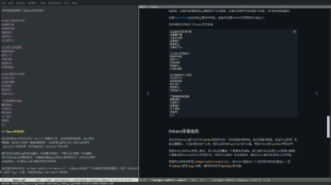
Sourcehut的迁移
回到迁移Emacs开发到sourcehut的事。这件事Richard Stallman也发话了，明确不可以用Sourcehut提供的服务，但可以用Sourcehut提供的软件。
Emacs基本没有一个现代的CI流程来保证代码质量。Richard Stallman政治性强，理想主义，很多时候不切实际，也没给Emacs弄个像样的CI。就算源码控制工具的选择都一波三折。直到2014年初，才由Eric S. Raymond拨乱反正，花了将近一年的时间，到2014年底，把Emacs拉到了Git的正轨上来。
如今Sourcehut横空出世，众Emacer可算盼到救星了。 Lars Ingebrigtsen 写到：
我有个梦想，当我提交一个变更，能有一个CI系统在一分钟内告诉我，在哪些系统上构建不过。但我猜这梦想不会实现，除非自由软件基金会有它应有的钱。
提起来让人心酸。这又算多高的梦想呢？又有多难实现呢？ Óscar Fuentes写到：
Emacs在我3.66GHz 8核构建机器上大约用时两分钟，这一半耗时是单线程所致（我对构建过程有一个长的分析）。因此降到一分钟似乎不难。
但说服某人买一台CI服务器估计美梦永不成真。
是的，也只在梦中我有闲钱，给自由软件基金会捐一台64核的服务器：）
builds.sr.ht
builds.sr.ht用虚拟机跑CI。构建失败后保留虚拟机10分钟，可以ssh上去看到底出了啥事，为啥失败。
对比其他工具，如Travis等基于Docker容器的，有很大易用性方面的提高。但基于虚机构建成本很高，而且用时较长（虚机从创建到启动到跑完CI，慢的可以到20分钟）。
这块最合适是系统容器LXD。我把这个提议提给了Drew DeVault，但没得到他的回应。我在等待回应的时间里，大致看了他的实现。他任务跑在虚机里，虚机跑在Docker容器里，Docker容器跑在物理机上。这样他使用了Docker的镜像能力，也更安全。只是成本还是太高。
反复考察，我感觉LXD系统容器还是更适合跑任务。
Qemu
读Drew DeVault博客。 读到Getting Started With Qemu 。他介绍了他对Qemu的使用，阐明了Qemu的好处，最后他说：
真没有借口用其他管理程序，和qemu相比都是狗屎。
我由此打消了向他推荐LXD的想法。
Rust C++ Go C
在Rust is not a Good C Replacement 里，Drew DeVault有一些有趣观点，试摘录如下：
Go是C程序员设计的新语言，Rust是C++程序员设计的新语言。
这是自然的，近乎于描述事实。但能鲜明地点出，让人不禁眼前一亮。
C++程序员与C程序员的价值观绝不兼容。
C++和Rust语言有问题就加特性，C语言有问题去加代码。
并给出C，C++，Go，Rust语言特性年增长率：
| 语言 | 语言特性年增长（个/年） |
|---|---|
| C | 0.73 |
| C++ | 11.3 |
| Go | 2 |
| Rust | 15 |
预言Rust终将失败：
玩各式花活，啥也不精，和C++一路货色。
智慧的语言设计者，始于小，并保持小。
得出结论：
Rust是C++的接班人，而不是C的。C的接班人是Go。
这结论也没啥问题，甚至有些平铺直叙。但像一般真理一样，当它在你面前袒露之前，你并不知晓，展开之后，又觉得理所当然。
Rust语言我也在学，不过我有些犹豫，有些怀疑，Cargo包管理实在惊艳，因此没有这么爽快否定。
中国
也有一篇关于中国的。先分析中美经济形势，中国制造一切，美国贸易逆差严重，美国买中国商品：
只是因为中国的便宜，但便宜为了个啥？
他认为应该和中国切割。为什么应该切割呢？后面的逻辑就理不顺了。因为中国的人权。中国没有人权。香港，台湾，澳门的自由斗士应该分裂出去。重复耸人听闻的关于罪犯器官贩卖的谎言。到这里这人已经疯了，从一个单纯善良，甚至还有点理想主义的程序员，变成一个双眼血红的怪兽。
他有感觉西方的衰落，中国的崛起，他神本的，线性的思维接受不了这些。他深深的自卑，不自信掩藏在长长的参考文献里。他不再是一个真正的程序员。 也是可悲，执着于独立思考，被洗脑到如此程度。
我写信给他：
干脆扔14亿颗氢弹把中国炸了得了。
他没有回信。
Gemini
发现一个有趣的东西，Gemini。在Emacs下有客户端： Elpher。
Gemini是一个只读协议，用于超链接内容分发。
那http协议不是个只读协议吗？还真不是。http的GET方法是只读，POST，PUT等方法是可写的。但Gemini也可以输入，但这输入是作为过滤，用来输出内容的。
那这个只读的协议有啥好处呢？ 是简单。另外这个协议对图表，图片显示处理的也不好（或者就没有），因此就只剩下只读的文本，外加超级链接功能，使得文字非常纯粹。
srht.site
srht.site对标github的pages功能。对外只有一个Rest API：
curl --oauth2-bearer secret \
-Fcontent=site.tar.gz https://pages.sr.ht/publish/nanjj.srht.site
｀site.tar.gz`是全量网站的打包。这命令还有一个变种：
curl --oauth2-bearer secret \
-Fcontent=sub.tar.gz https://pages.sr.ht/publish/nanjj.srht.site/sub
用于更新网站的一个子目录。
这基本就足够了，实现好了足以对标Github。
我把自己的小站搬到了srht.site:
发现两个问题。
第一个问题，srht.site不支持js跨域。
我的站点有两个需要跨域的功能：
MathJax其实好办，拿过来就是。Utteranc就不好弄了。还好我看留言并不多，于是干脆去掉了。
第二个问题是srht.site没有用浏览器的cache功能，导致每次加载都要重新下载，以至于和
比较就慢多了。 这个问题我感觉srht.site可以优化。在第二个问题解决之前，我的小站继续以github为主。
2021年12月22日 星期三 上午 晴会游泳
今天二儿子（4岁）游泳长进：他不穿漂浮衣，不带浮板，可以游一两米；会憋气，水没脑袋不紧张。因此我判定他会游泳了。这是按我的标准。
我的标准具体说就是如果不小心掉水里了，能自己游上来；或者说有别人掉水里了，能跳水里把他救上来，就算是会游泳了。
我自己
我游泳基本自学。小时候在水里泡会的，没人教。会踩水，各种姿势都不标准，游的也不快，游累了就躺在水面上休息。记得中学时和同学横游颍河，水流急，游到中间遇到股冷流，一下子腿就抽筋了，就靠躺在水面上往下游漂了好几里，才靠的岸。
二子
大儿
大儿子刚出生就带着脖圈游泳。后来几个月报了婴儿游泳课，也是带着脖圈游。我看他不是很喜欢，几乎每次都哭闹着不去。结果课时也没有用完。后来他两岁多点的时候，我带着他去泳池游泳。穿着漂浮衣游，比较安全，大人带着省心，他也开心玩水。就这么玩。到幼儿园中班时候，不穿漂浮衣也能游了。
但他跟我差不多，水性很好，也是各种姿势都不会。尝试找个游泳教练教他，也没有成功。此后再找教练就拒绝了。
小儿
小儿不到两岁穿着漂浮衣在泳池游泳。这时候大儿基本不用看，盯着小儿子就好了。小儿子有时候会呛水，呛水有时候会引起呕吐。有几次吐得乱七八糟。这时候就急忙抱他冲上岸，到浴室去洗。那这泳就没法游了，招呼老大回家。
教学
总结来这基本是我教游泳的方法：把孩子扔水里熟悉水性，燃起他们对水的兴趣，用漂浮衣保证沉不了，细心观察保证安全。其实啥也不教。不教的原因是因为我也不会。
这方法今天看来对两个儿子是成功的。但对我爱人则不然。我俩从认识到现在有二十年，刚认识就教她游泳，一直就没有学会。她总想得到具体的指导，比如如何换气，腿脚手臂如何摆布，如上所言这些我其实也不会，起码是不会说的。有时候装模作样说两句说的也不对。这些具体知识得到前她对水的接触就很有限了，偶尔的呛水还会增加对水的畏惧。因此至今她还是个旱鸭子。家里三个男人游泳几乎从不带她。
正念
周六参加孙老师培训企业正念减压，很多没听懂。
有一句话听进去了：自我激励。
就是说人要自己激励自己，自己鼓舞自己，要给自己喝彩，不能只把他人的赞扬和肯定当做激励。孔子日三省其身，每天审视自己做的不好的地方，念叨自己哪哪不对，羞于自我肯定，这也不算正念。
朋游
之一
把以上发给一个朋友看。她说：
我还记得你给我讲小时侯差点被淹的那段，我记得当时我都笑死了。
艾宝1的游泳之路和你家类似，所以至今还没脱游泳板。
可我不太记得我小时候差点被淹的事了。她游泳很好，上学时游泳成绩进过所在城市前三，工作后在公司比赛每每得冠军。可她竟不喜欢游泳。她小时候有一个严厉的父亲，眼光毒辣，很早看出她游泳的天分，于是猛力培养。这在小孩子的心里留下了些阴影，直到如今。不过从艾宝游泳之路看，她似乎从中参悟出了道理，自己做父母不蹈父母覆辙，不再逼迫孩子，孩子学会还是学不会就随意多了。
之二
另一个朋游反馈：
我家娃是找教练教的。目前会蛙泳和自由泳。老公也是自学的。我也是旱鸭子。
多次的负反馈，造成对一件事的畏惧感，再缺乏鼓励，就基本放弃了。
自我激励可以有效抵抗来自他人的负反馈。但也有负反馈来自自己，不断地，连绵不绝地否定自己——慢慢就抑郁了。
关于畏惧感，有一种畏惧是对自由自在的畏惧，对规范缺位，形式随意的畏惧。而同时，每一个自在水中央的人，都爱水里的自在，珍惜漂流的随意吧。
艾宝是她女儿。
2021-12-04, Saturday, 5PM
带着两个儿子游泳。
大儿子说，听说人在死后，会事无巨细回忆整个一生。
但如何证实并不是重点。
问题是，如何区分人在活着，还是在回忆一生？
我认真想了想，以下是我的回答。
人活着的时候，知道昨天的事，今天一部分的事，并不知道明天的事。而在回忆一生的时候，知道今天的事，昨天的事和明天的事。因此问自己是否清楚知道明天的事，就可以作为活着和回忆的判别。
老大埋身在水半分钟，跳出水面说我知道我是活着的了。
小儿子说起了他的梦。我们也谈起了庄子的梦。大体一个人在梦里是不很清晰知道自己昨天的。因此这也可以作为梦境与现实的判据。
12/18/21 Saturday 11PM问题
我在吴军《数学通识》上看到这道题，据说是牛顿出的，如下：
牧场上有一片青草，每天都生长得一样快。这片青草供给10头牛吃，可以吃22 天；供给16头牛吃，可以吃10天。如果供给25头牛吃，可以吃多少天？
我算出的答案是5.5天。
解答
我们以牛的每天食量（\(1\)头牛\(1\)天所吃草的量）为草的计量单位，记为牛。设牧场原有草的量为\(x\)牛，草生长速度为\(y\)牛每天，\(25\) 头牛可以吃\(z\)天，由草存量加上草增长量等于牛吃的草总量，有： $$\begin{cases} \begin{align} x + 22\times y = 10\times22 \qquad (1) \\ x + 10 \times y = 16\times 10 \qquad (2) \\ x + z \times y = 25 \times z \qquad (3) \\ \end{align} \end{cases} $$
由\((1)\)和\((2)\)可得： $$\begin{align} x = 110 \\ y = 5 \end{align} $$
带入\((3)\)，得到： $$ z = 5.5 $$
也就是\(25\)头牛可以吃\(5.5\)天。
解析
这道题困难之处在于合理选择草的计量单位。我们选一头牛一天食量为草的计量单位，记为牛。至于一头牛一天吃多少公斤草，本题至始至终并不能给出答案。但我们知道一头牛一天吃一牛的草，牧场一天长5牛的草，牧场原有110牛的草。牧场的草够25头牛吃5天半。这些都是可以计算得到的。
这很像牧民所出的题。一块牧场，10头牛来，吃了22天，草没了；同一块牧场， 16头牛来，吃了10天，草没了；那我有25头牛，如果来这块牧场，又能吃几天呢？仔细算算，才能吃五天半，那干脆别来了，否则一个星期不到，就得转牧场，太麻烦了。
2021-10-05 雨夜， 河北安平
尊重
九月离京前和一个前同事吃饭。我有些想送她一套好点的咖啡壶，但她不要。还跟我详细描绘了她的咖啡装备。她手头的装备就不错，还执意不要，我也不好勉强了。
我们吃过面后要了杯瑞幸咖啡。说起她女儿。她很焦虑，怕女儿学习跟不上，教子严厉，时不时发脾气。问我怎么办。我质问她，当口口声声说为了孩子好的时候，就没有一丝一毫不是为了证明自己的对吗？她沉思，一会抬起头说是的，她承认这种情况是有的。
我总觉得父母和孩子都是第一次来到这个世界，父母只是比孩子早来了20几年而已，其实对这个世界，这个社会并没有什么独到见解，至少没有到可以教育人的地步。另外按达尔文进化论孩子应该比父母聪明才是。因此板着脸妆模作样的教导是对子女很大的不尊重。我把这些意思讲给她。她接受了，并说要好好改变一下。第二天我就启程去深圳了。
坦诚
教师节那天，师弟师妹们在群里祝导师和师母节日快乐。有师弟分享了一个哔哩哔哩视频：“横跳”的吴金闪。吴金闪在北师大物理系，大约比我晚两到三届。他当年在物理系学习好是有名的。于是我认真学习了吴金闪介绍的他如何“横跳”的经验。“横跳”是个比喻，说一个人如何快速切入不同的领域。他的经验如下：
- 快速找出一个领域的关键问题，
- 针对关键问题快速建立理论模型，
- 用实验结果验证模型，如与实验结果不符，回到2修改模型。
我有感觉他在说永远正确的废话，就像我有些要出国的师哥，临行前用来骗刚入学小师妹的话一样。这只是我的感觉。注意至此我已经完成了他横跳的前两步：觉察问题，建立模型。为验证我的模型我看了他哔哩哔哩上有关量子力学的视频。没发现不符合的地方。于是我在群里回：
觉得他不懂物理，只是有些特别趣味。
说一个物理学教授不懂物理，我有一个优势：我只念了物理学硕士，毕业后就写程序去了。我想吴教授一定不会把我的话太放心上吧。
可我导师也在群里呀，他没有回。如果我说错了，他一定会纠正的。但他没有回。因此我或许说对了。我是在从北京挪到深圳的途中断断续续做的这些事。
数学史
我在深圳有一个大学同学（李）在龙华中学教物理。飞机落地向他报告。他比较忙，说下周联系我。他有个朋友（不是女朋友，是一起从东北挪到深圳的教书的朋友），姓柳（我之前错记为“贾”，应该为“柳”），在小学教数学。他们都是特级教师。深圳虽然是改革开发前沿阵地，但中小学教育这块并没有跟上，特级教师没那么多。
李老师也带中学物理的奥林匹克竞赛。他给中学生写过一些物理前瞻性的文章，一般是以上头条的科技为引领，比如5G，比如量子计算之类。他带的学生得过奥赛冠军，是很了不起的。他的物理教学扎实而通俗易懂，教法高超，既激发学生兴趣，又可以考高分，清华北大送人不少。
我们之前聊天我说的数学相关的居多。比如孪生素数猜想，张益唐，陶哲轩这些。我实在认为数学真是一切科学中的科学，而要激发学生数学兴趣，可以从数学学史出发。但我没看到李老师和柳老师对数学(以及数学学史)有兴趣。因此多少有些失望。
但这次我来深圳一下飞机就繁忙起来，以至于没有和二位再见面。
规范
中秋节前回北京。
导师打电话过来问我可否了解范数，要和我探讨探讨。我并不了解。我当时没理解范数是一个距离的概念。于是我就骑车带着家里南二到导师楼下小公园玩。打电话约老师一起讨论范数。我们没讨论清楚。我理解不了函数之间的距离到底是个什么概念。孩子倒是玩的高兴。那小公园里有旋转滑梯。他第一次敢于单独滑下来，兴奋地直蹦。还有可以相互喊话的传声筒玩。
我们边玩边聊。我说道我在读莫里斯·克莱因的《古今数学思想》，刚读到微积分欧拉那部分，离泛函还远。老师问老大南一如何，我讲他妈是个虎妈，在押着学。我只知这样不行，但不知如何是好。
我们还就以下标准定义达成共识：
- 大学生： 能快速掌握有答案的问题，以及这些问题的答案，
- 研究生： 能对一些目前还没有答案的问题提出解决方法，
- 博士生： 能独立提出有意义的新问题，并给出解决办法（结合2）。
我提出，按这个标准我作为研究生是合格的。我导师表示同意。这从另一个侧面印证了我关于吴教授的提法是立得住的。
后来南二说天黑了该回家吃饭了。我认为他独立提出了有意义问题（天黑）并给出了解决方案（回家），于是就和导师说拜拜，带着南二回家了。
电子版
我导师有《古今数学思想》英文版电子版，就发给了我。我转到了我的Kindle上。后来又发了我吴军的《数学之美》和《数学通识》。后两本都超过了50MB，信箱抱怨附件太大。于是我面临一个问题，如何把PDF体积减小一些。gs有一个命令：
gs -sDEVICE=pdfwrite \
-dCompatibilityLevel=1.4 \
-dPDFSETTINGS=/screen \
-dNOPAUSE -dQUIET -dBATCH \
-sOutputFile=output.pdf input.pdf
大约可以降一半的体积。但还是满足不了电子信箱的要求（估计上限大约是 20MB）。后来找到如下方法：
- 用Chrome浏览器打开大PDF，
- 按指定页数再打印为PDF。
这样我把《数学之美》按上中下分三份转到了Kindle，《数学通识》按一二三四转到Kindle。
信访
领导有一初中同学要负责县里的信访工作，一起聊天。我说怎么才算把这个工作做好呢？ 他说从上面看，不出大事，从下面看，群众实际问题得到解决。另外他想在北京靠近地铁，火车，和长途汽车站的地方租个房子，把北京常驻人员从宾馆搬到出租房里。这样每月可以节省几千块钱，住的也方便舒服些。他也说了些酒场上不很清晰的话。但整体上我感觉他达到了以上定义”大学生“以及”研究生“未毕业的水平：他抓住了问题关键，也很实际。
数学通识
吴军在《数学通识》里总结到，微积分之前，数学处理静态的内容，微积分之后，数学渐次处理动态内容；概率论和统计学之前，数学处理确定性问题，概率论和统计学之后，数学渐渐处理不确定性问题。我因为他总结的很透彻。因此在京东上定了纸质版的《数学通识》，打算节后把《古今数学思想》放下，把《数学通识》仔细读读。
12/18/21 Saturday 11PM我学了点Rust语言，用Rust语言写了个Mdbook预处理插件。
预处理插件
Mdbook预处理插件是一个可执行程序，Mdbook做预处理时会把markdown内容以及配置通过标准输入发给它，它做预处理，把结果输出到标准输出。
以下是本博客的book.toml配置：
[preprocessor.blog]
这样Mdbook会通过标准输入发配置上下文和书的内容给mdbook-blog，mdbook-blog做预处理，把结果打到标准输出。
因此我需要写这个mdbook-blog,Cargo.toml:
[package]
name = "mdbook-blog"
version = "0.1.0"
edition = "2018"
[dependencies]
anyhow = "1.0.43"
chrono = "0.4.19"
clap = "2.33.3"
filetime = "0.2.15"
mdbook = "0.4.12"
serde_json = "1.0.67"
实现在src/main.rs:
use anyhow::Result;
use chrono::{prelude::DateTime, Local};
use clap::{App, Arg, SubCommand};
use filetime::FileTime;
use std::time::{Duration, UNIX_EPOCH};
use mdbook::{
book::{BookItem, BookItem::Chapter},
preprocess::{CmdPreprocessor, PreprocessorContext},
};
use serde_json::to_writer;
use std::{
fs::{metadata, File},
io::{stdin, stdout, BufWriter, Write},
path::Path,
process,
};
fn modified<P: AsRef<Path>>(p1: P, p2: P) -> Result<bool> {
Ok(FileTime::from_last_modification_time(&metadata(p1)?)
> FileTime::from_last_modification_time(&metadata(p2)?))
}
fn last_modification_time<P: AsRef<Path>>(p: P) -> Result<String> {
let dt = DateTime::<Local>::from(
UNIX_EPOCH
+ Duration::from_secs(
FileTime::from_last_modification_time(&metadata(p)?).seconds() as u64,
),
);
Ok(format!(
"{}",
dt.format("<div style=\"text-align: right\"><code>%x %A %_I%p</code></div>")
))
}
fn insert_timestamp(content: &str, timestamp: &str) -> Result<String> {
let mut s = String::new();
let mut lines = content.lines();
let mut next_line = || loop {
if let Some(line) = lines.next() {
if line != "" {
break line;
}
continue;
} else {
break "";
}
};
let line1 = next_line();
if !line1.contains("`") && !line1.contains("<code>") {
s.push_str(&format!("{}\n\n", timestamp));
}
s.push_str(&format!("{}\n", line1));
while let Some(line) = lines.next() {
s.push_str(line);
s.push('\n');
}
Ok(s)
}
fn write_index_html<P: AsRef<Path>>(index: P, target: &str) -> Result<()> {
let file = File::create(index)?;
let mut writer = BufWriter::new(&file);
write!(
&mut writer,
"<head><meta http-equiv=\"refresh\" content=\"0;url={}\"></head>",
target
)?;
Ok(())
}
fn handle(ctx: &PreprocessorContext, section: &mut BookItem) -> Result<()> {
if let Chapter(ref mut ch) = *section {
let ref src = ctx.config.book.src;
if let Some(ref path) = ch.path {
let created_at = last_modification_time(src.join(path))?;
let timestamp = format!("{}", created_at);
ch.content = insert_timestamp(&ch.content, ×tamp)?;
if ch.parent_names.len() == 0 {
let res = modified(src.join(path), src.join("index.html"));
if let Ok(false) = res {
return Ok(());
}
write_index_html(
src.join("index.html"),
path.with_extension("html").to_str().unwrap(),
)?;
}
}
}
Ok(())
}
fn run() -> Result<()> {
let (ctx, mut book) = CmdPreprocessor::parse_input(stdin())?;
book.for_each_mut(|section: &mut BookItem| handle(&ctx, section).unwrap());
to_writer(stdout(), &book)?;
Ok(())
}
fn main() {
let matches = App::new("mdbook-blog")
.about("A mdbook preprocessor for blog")
.subcommand(
SubCommand::with_name("supports")
.arg(Arg::with_name("renderer").required(true))
.about("check whether a renderer is supported"),
)
.get_matches();
if let Some(supports) = matches.subcommand_matches("supports") {
let renderer = supports.value_of("renderer").expect("Required argument");
if renderer != "" {
process::exit(0);
}
process::exit(1);
}
run().unwrap_or_default();
}
#[cfg(test)]
mod tests {
use super::*;
use std::fs::remove_file;
use std::io::Read;
#[test]
fn test_newer_than() {
assert!(modified("not-exists-1", "not-exists-2").is_err());
let res = modified("src/main.rs", "src/main.rs");
assert!(res.is_ok());
assert_eq!(false, res.unwrap());
}
#[test]
fn test_write_index_html() {
let index = Path::new("/tmp/index.html");
let target = "2021/euler.html";
let res = write_index_html(index, target);
assert!(res.is_ok());
let mut file = File::open(index).unwrap();
let mut s = String::new();
let size = Read::read_to_string(&mut file, &mut s).unwrap();
assert_eq!(72, size);
assert_eq!(
"<head><meta http-equiv=\"refresh\" content=\"\
0;url=2021/euler.html\"></head>",
s
);
remove_file(index).unwrap();
}
#[test]
fn test_insert_timestamp() {
let text = "hello\nworld!";
let res = insert_timestamp(text, "timestamp").unwrap();
assert_eq!("timestamp\n\nhello\nworld!\n", res);
}
#[test]
fn test_creation_time() {
let ctime = last_modification_time("src/main.rs");
assert_ne!(String::from(""), ctime.unwrap());
}
}
Mdbook与博客
Mdbook为写书而有，并非为博客所写。我把我的博客架构在Mdbook上也就是图省事。博客需要有一个首页，一般的首页是把最新几篇摘要生成一个列表放在那。我这个插件是把首页重定向到最新一篇。这实现简单，而且用起来还不错。
Rust的学习
这个Mdbook插件是我用Rust写的第一个程序。通过这个程序的编写，我对 Rust的包结构，模块组织，基本语法以及错误处理有了点认识。另外着重看了下Rust的自动测试。
Rust把自动测试分为3类:
- 单元测试，
- 文档测试，
- 集成测试。
其中文档测试是其他语言所不具备的。写在文档里的例子，在cargo test的时候也会被执行。
单元测试如何做，敏捷开发界有许多争议，比如私有方法是否要覆盖之类。但单元测试是否要做，大概是没有争议的。Rust选了比较实际的路线，把选择权给了开发。
集成测试其实就是接口测试，只测对外暴露的接口。libs集成测试没问题，binary没有对外接口，咋做呢？Rust给了个方案，同时后src/main.rs和src/libs.rs，让binary也可以成为libs，这样问题就解决了。
综合其上，三种测试统称为自动测试。一个遗留问题是代码覆盖率，不知如何做。
12/19/21 Sunday 12AM在读莫里斯·克莱因的《古今数学思想》，终于读到欧拉（Leonhard Euler ， 1707年4月15日～1783年9月18日）。
欧拉恒等式：
\[ e^{i\pi} + 1 = 0 \]
克莱因写到：
他的某些书和400篇研究论文是他已完全失明后写的。他的著作集的现代版如果完全出齐将会有74卷。
而且这么大的活动量并没有让他牺牲其他兴趣。他如常步入婚姻殿堂并是13个孩子的父亲。他非常顾家，尽其所能地为家庭谋福利。他分时间在儿子孙子的教育上，领着他们做科学游戏，念圣经给他们的心灵，“和他们一起消磨黄昏”。他对化学、地质学、制图学也有兴趣，他还画了一张俄国地图。他还写了两本造船的书，孜孜不倦地与伏尔泰争论哲学。
是谁来自
江河湖海
却囿于昼夜
厨房与爱
姬庚我说，想想欧拉，就别给自己的平凡找借口啦。
2021-08-25 夜，晴
在Emacs下，Rust开发有两个选择：
该如何选择呢？
Rust Mode选择
我选Rust Mode。这里说一下我的理由：
- Rust Mode在README里推荐了Rustic，说明Rust Mode作者较为宽厚，
- Rustic对自己分叉Rust Mode的行为进行了辩解，但没有多少站得住的理由，
- Rust Mode只做最核心的内容，周边留给其他包做，这体现Unix编程哲学，
- Rustic啥都做但有些做的不好，比如Cargo命令。
我用Emacs自带的Package管理：
package-install rust-mode
package-install cargo
我习惯把code format绑到M-q上：
(define-key rust-mode-map (kbd "M-q") 'rust-format-buffer)
Cargo.el所提供的命令cargo-process-add需要cargo-edit支持：
cargo install cargo-edit
至此，语法加亮，代码规整，常见命令支持都有了。还差一个代码补齐和跳转，由Emacs的LSP能力补足。
LSP的选择
Emacs下LSP(Language Server Protocol)有两个选择:
这又如何选呢？
LSP我在沉迷Go语言的时候用过，怎么说呢？ LSP不坏，但远算不上优秀。为提供酷炫功能，LSP用了一些不标准的Lisp API，以至于Emacs升级到28.0之后，这些API被废弃掉了，LSP就常有抽风行为。我不可能为了一个勉强工作的 LSP把Emacs版本固守在27.0。于是我转向了Eglot：
package-delete lsp-mode
package-install eglot
他们显然都不是平心静气，但如果你是一个好的程序员，你能很容易分辨出是非高下来。于是我毫不犹豫地继续使用Eglot。
Eglot需要装上rls才能工作:
rustup update
rustup component add rls rust-analysis rust-src
给rust-mode加上eglot支持：
(add-hook 'rust-mode-hook 'eglot-ensure)
重启Emacs，搞定。最后写几句给程序员的话。
致程序员
我时常见到一些手上有咖喱味道的程序员，他们这也摸摸那也碰碰，把恶心味道散播到各处。他们的代码之所以写，是为博眼球，而并非发自内心。他们算不上纯粹的程序员。这没什么，世界仍然需要他们，有他们的存身之地。但他们假装对代码、对技术的热爱就让纯粹程序员们恶心了。我想这就是Eglot作者烦的不行LSP作者的原因。
<2021-08-24 二>，雨夜
缘起
几年前我曾经学习过Rust。其时，我发现Rust编译速度很慢，语法有些烧脑。于是浅尝辄止一下Rust，很快就转向了Go语言，并深深迷恋。不知为何，当时并没有注意到Cargo包管理的存在。
Go语言的包管理没有一步到位。Go最初包管理是分布式的，有些像Java
Classpath的设计，叫GOPATH，是线性的。而Java也渐渐引入OSGI的设计，进一步模块化。GO包管理也出现许多第三方，最终统一为Go Mod。不能说Go Mod多成功，只能算不失败罢了：中间走了弯路，最终也没有达到理想的状况，但的确是工作的。
Go另一块薄弱项是和C语言的交互，上下文切换性能差太多了。这也是没有办法的事，算引入GC的代价。但和C关系不好就阻碍了Go向下发展。有用
Go写操作系统的，但从没人提用Go开发Linux内核。
最近我发现Cargo设计干净，有美感，也实干，工程气息浓郁。 BottleRocket项目把Cargo用到了极致，但也远没有探到Cargo的上限。
在学
这次Rust再学，没有把语言放在前面学，而是先把周边搞清楚：
最后才慢慢看Rust的语法：
在看mdBook时候，顺便把本博客更新了下。
过往
读过去自己写的东西，是一个逐渐了解自己的过程。好似在读一封封来自过去的信，有恍若隔世的感觉。过去自己的想法甚至能解当今的困惑。细细思索，倍感神奇。
由此打算重拾写作，为将来的自己，提供一点寻找初心的线索。
<2019-12-07 六>
Gitlab持续集成采用订阅模式，这和Github的通知机制不同。
Github通知机制
Github的持续集成采用通知机制。
如下图所示：
graph LR github[Github] webhook[Webhook] github --通知--> webhook subgraph 持续集成 webhook end `

持续集成的开发人员需要实现一个Webhook来接收Github的消息通知。这个 Webhook是一个服务，需要保证安全，保证可调用。
Gitlab不是这么做的。
Gitlab订阅模式
Gitlab用订阅的模式来做持续集成。如下图示：
graph LR gitlab[Gitlab] runner[Gitlab Runner] runner -.订阅.-> gitlab subgraph 持续集成 runner end `
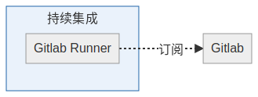
这样 gitlab runner 可以是跑在内网的某台机器，只要该机器通过http协议能访问gitlab就可以。这种方式对持续集成的开发人员成本较低。但对Gitlab
服务方，成本较高。Gitlab能支持多少个Runner挂在上面呢？
Gitlab Runner如何工作
Gitlab Runner 每3秒访问一下Gitlab看有没有任务，如有任务，扯下来执行。如无任务，3秒后见。
Gitlab Runner 后面可以跑docker， kubernetes等。我觉得通过 Gitlab Runner 的shell模式可以跑lxd 。
<2019-12-03 二>
Mac Case Insensitive File System
By default, file system under Mac is case insensitive. It may cause trouble when you work with some projects like Linux Kernel. To solve the problem, you can create a disk image with case sensitive file system, and attach to a mount point to use.
Say we want to create disk image at /usr/local, and attach it to
/usr/local/src. All operations are executed under /usr/local.
Create Disk Image
$ hdiutil create -size 10G src -type SPARSE -fs \
'Case-sensitive Journaled HFS+' -volname src
Image src.sparseimage will be created, with case sensitive journaled
file system and the size limit 20G.
Attach Disk Image
$ mkdir src
$ hdiutil attach -mountpoint src src.sparseimage #=>
/dev/disk4 GUID_partition_scheme
/dev/disk4s1 EFI
/dev/disk4s2 Apple_HFS /usr/local/src
Detach Disk Image
$ hdiutil detach src #=>
"disk4" unmounted.
"disk4" ejected.
Resize Disk Image If needed
If 20G is not enough you can resize the image:
$ hdiutil resize -size 20G src.sparseimage
<2019-01-03 Thu>
LXD setup, usage and more.
LXD Setup
So easy to setup LXD!
The existing lxd packages in ubuntu 16.04 are too old to use, which need to be purged:
apt-get -qq purge lxd lxd-client
snap install lxd
lxd is lxd daemon and lxc is the lxd client:
which lxd #=>
/snap/bin/lxd
which lxc #=>
/snap/bin/lxc
Init
lxd provides a sub command =init= to init lxd:
lxd init
lxd init can configure lxd run in clustering mode or standalone
mode.
Snap and Lxd
You can use snap to run lxd, or the opposite. Inside lxd you
can run docker.
+----------+ +-----------+ +------------+ +-----------+
| | | | | | | |
| vm +------>| snap +------>| lxd +------->| docker |
| | | | | | | |
+----------+ +-----------+ +------+-----+ +-----------+
^ |
| |
+--------------------+
Run lxd in Snap
By default ubuntu xenial with lxd and lxd client installed. You can check this by running:
which lxd # => /usr/bin/lxd
which lxc # => /usr/bin/lxc
The lxd in apt repo is very low. We need to switch to the lxd in snap store:
# Uninstall existing lxd in ubuntu repo.
apt-get purge -qq lxd lxd-client
# Install lxd in snap
snap install lxd
# Check lxd and lxc
which lxd # => /snap/bin/lxd
lxd --version # => 3.3
which lxc # => /snap/bin/lxc
lxc --version # => 3.3
# Init lxd
lxd init
# Start lxd
snap restart lxd
Launcn Lxd container
Now launch a vm like lxc container:
# List images
snap image list ubuntu:xenial
# Launch a container
lxc launch ubuntu:xenial/amd64
# List containers
lxc list
# exec bash in the container
lxc exec steady-dingo bash
# Now you can do anything in the container
Run snap inside Lxd Container
Snap as a container, can run lxd and launch lxd container. Inside
the lxc container, you can run snap container, say to install go
snap:
lxc exec steady-dingo bash
snap install go --classic
echo 'export GOPATH=/usr/local' >> ~/.bashrc
apt-get install build-essential
cat > ~/.netrc <<EOF
your github toke n
EOF
go get github.ibm.com/nanjj/ncatd
ncatd --version # ncatd version 0.0.1
Run Lxd inside Lxd Container
Run lxd inside lxd container nesting:
lxc config set steady-dingo security.nesting true
lxc exec steady-dingo bash
apt-get purge -qq lxd lxd-client
snap install lxd
lxd init
lxc launch ubuntu:xenial/amd64
Run Docker inside Lxd Container
With security.nesting true, run docker:
apt-get install docker.io
docker run hello-world
Use Lxd Container as a Router
lxc launch ubuntu:16.04 router #=>
lxc list #=>
+--------+---------+-----------------------+------+------------+-----------+
| NAME | STATE | IPV4 | IPV6 | TYPE | SNAPSHOTS |
+--------+---------+-----------------------+------+------------+-----------+
| router | RUNNING | 10.149.11.203 (eth0) | | PERSISTENT | |
+--------+---------+-----------------------+------+------------+-----------+
lxc exec router -- bash -i
# configure vpn if needed
# check ip forward setting
sysctl net.ipv4.ip_forward #=>
net.ipv4.ip_forward = 1
# iptables
iptables -t nat -A POSTROUTING -s 10.149.11.0/24 ! -d 10.0.2.0/24 -j MASQUERADE
apt-get update
apt-get install iptables-persistent
Now you can use this as a router
Clustering Mode
Lxd clustering mode makes lxd run in multiple nodes. Each node lxd is running on is a cluster member. The whole set of the cluster members is called a cluster.
New Cluster
lxd init
Would you like to use LXD clustering? (yes/no) [default=no]: yes
What name should be used to identify this node in the cluster? [default=hypercube01]:
What IP address or DNS name should be used to reach this node? [default=192.168.0.46]:
Are you joining an existing cluster? (yes/no) [default=no]:
Setup password authentication on the cluster? (yes/no) [default=yes]: yes
Trust password for new clients:
Again:
Do you want to configure a new local storage pool? (yes/no) [default=yes]:
Name of the storage backend to use (btrfs, dir, lvm, zfs) [default=zfs]:
Create a new ZFS pool? (yes/no) [default=yes]:
Would you like to use an existing block device? (yes/no) [default=no]:
Size in GB of the new loop device (1GB minimum) [default=31GB]: 128GB
Do you want to configure a new remote storage pool? (yes/no) [default=no]:
Would you like to connect to a MAAS server? (yes/no) [default=no]:
Would you like to configure LXD to use an existing br...? (yes/no) [default=no]:
Would you like to create a new Fan overlay network? (yes/no) [default=yes]:
What subnet should be used as the Fan underlay? [default=auto]:
Would you like stale cached images to be updated automatically? (yes/no) [default=yes]
Would you like a YAML "lxd init" preseed to be printed? (yes/no) [default=no]:
Join Cluster
lxd init
Would you like to use LXD clustering? (yes/no) [default=no]: yes
What name should be used to identify this node in the cluster? [default=hypercube06]:
What IP address or DNS name should be used to reach this node? [default=192.168.0.21]:
Are you joining an existing cluster? (yes/no) [default=no]: yes
IP address or FQDN of an existing cluster node: 192.168.0.30
Cluster fingerprint: 6ab5b519ffbb309cb38b73657299dd9b0b8c6f2bd5b3....
You can validate this fingerprint by running "lxc info" locally on an existing node.
Is this the correct fingerprint? (yes/no) [default=no]: yes
Cluster trust password:
All existing data is lost when joining a cluster, continue? (yes/no) [default=no] yes
Choose "size" property for storage pool "local": 128GB
Choose "source" property for storage pool "local":
Choose "zfs.pool_name" property for storage pool "local":
Would you like a YAML "lxd init" preseed to be printed? (yes/no) [default=no]:
List Cluster
lxc cluster list
+-------------+---------------------------+----------+--------+-------------------+
| NAME | URL | DATABASE | STATE | MESSAGE |
+-------------+---------------------------+----------+--------+-------------------+
| hypercube01 | https://192.168.0.46:8443 | YES | ONLINE | fully operational |
+-------------+---------------------------+----------+--------+-------------------+
| hypercube02 | https://192.168.0.47:8443 | YES | ONLINE | fully operational |
+-------------+---------------------------+----------+--------+-------------------+
| hypercube03 | https://192.168.0.48:8443 | YES | ONLINE | fully operational |
+-------------+---------------------------+----------+--------+-------------------+
| hypercube04 | https://192.168.0.51:8443 | NO | ONLINE | fully operational |
+-------------+---------------------------+----------+--------+-------------------+
| hypercube05 | https://192.168.0.30:8443 | NO | ONLINE | fully operational |
+-------------+---------------------------+----------+--------+-------------------+
| hypercube06 | https://192.168.0.21:8443 | NO | ONLINE | fully operational |
+-------------+---------------------------+----------+--------+-------------------+
| hypercube07 | https://192.168.0.26:8443 | NO | ONLINE | fully operational |
+-------------+---------------------------+----------+--------+-------------------+
It's a 7 nodes lxd cluster with 3 database nodes and 7 service nodes.
Database
Lxd database is based on distributed sqlite, which removed lxd's dependency on traditional database like postgres or mysql. Fan network introduced lxd a simple and fast container network.
Global and Local
For each lxd node, there are two type databases: global and local. Data in global database is shared by each lxd cluster members, while data in local database can only be accessed in local node, does not impact others.
Lxd sql
lxd sql <local|global> <query> [flags]
Global Schemas
For example, to list global schemas:
lxd sql global .schema #=>
PRAGMA foreign_keys=OFF;
BEGIN TRANSACTION;
CREATE TABLE schema (
id INTEGER PRIMARY KEY AUTOINCREMENT NOT NULL,
version INTEGER NOT NULL,
updated_at DATETIME NOT NULL,
UNIQUE (version)
);
INSERT INTO schema VALUES(1,13,1546788241);
CREATE TABLE "containers" (
id INTEGER primary key AUTOINCREMENT NOT NULL,
node_id INTEGER NOT NULL,
name TEXT NOT NULL,
architecture INTEGER NOT NULL,
type INTEGER NOT NULL,
ephemeral INTEGER NOT NULL DEFAULT 0,
creation_date DATETIME NOT NULL DEFAULT 0,
stateful INTEGER NOT NULL DEFAULT 0,
last_use_date DATETIME,
description TEXT,
project_id INTEGER NOT NULL,
UNIQUE (project_id, name),
FOREIGN KEY (node_id) REFERENCES nodes (id) ON DELETE CASCADE,
FOREIGN KEY (project_id) REFERENCES projects (id) ON DELETE CASCADE
);
CREATE TABLE "images" (
id INTEGER PRIMARY KEY AUTOINCREMENT NOT NULL,
fingerprint TEXT NOT NULL,
filename TEXT NOT NULL,
size INTEGER NOT NULL,
public INTEGER NOT NULL DEFAULT 0,
architecture INTEGER NOT NULL,
creation_date DATETIME,
expiry_date DATETIME,
upload_date DATETIME NOT NULL,
cached INTEGER NOT NULL DEFAULT 0,
last_use_date DATETIME,
auto_update INTEGER NOT NULL DEFAULT 0,
project_id INTEGER NOT NULL,
UNIQUE (project_id, fingerprint),
FOREIGN KEY (project_id) REFERENCES projects (id) ON DELETE CASCADE
);
CREATE TABLE "images_aliases" (
id INTEGER PRIMARY KEY AUTOINCREMENT NOT NULL,
name TEXT NOT NULL,
image_id INTEGER NOT NULL,
description TEXT,
project_id INTEGER NOT NULL,
UNIQUE (project_id, name),
FOREIGN KEY (image_id) REFERENCES images (id) ON DELETE CASCADE,
FOREIGN KEY (project_id) REFERENCES projects (id) ON DELETE CASCADE
);
CREATE TABLE "operations" (
id INTEGER PRIMARY KEY AUTOINCREMENT NOT NULL,
uuid TEXT NOT NULL,
node_id TEXT NOT NULL,
type INTEGER NOT NULL DEFAULT 0,
project_id INTEGER,
UNIQUE (uuid),
FOREIGN KEY (node_id) REFERENCES nodes (id) ON DELETE CASCADE,
FOREIGN KEY (project_id) REFERENCES projects (id) ON DELETE CASCADE
);
CREATE TABLE "profiles" (
id INTEGER PRIMARY KEY AUTOINCREMENT NOT NULL,
name TEXT NOT NULL,
description TEXT,
project_id INTEGER NOT NULL,
UNIQUE (project_id, name),
FOREIGN KEY (project_id) REFERENCES projects (id) ON DELETE CASCADE
);
CREATE TABLE "storage_volumes" (
id INTEGER PRIMARY KEY AUTOINCREMENT NOT NULL,
name TEXT NOT NULL,
storage_pool_id INTEGER NOT NULL,
node_id INTEGER NOT NULL,
type INTEGER NOT NULL,
description TEXT,
snapshot INTEGER NOT NULL DEFAULT 0,
project_id INTEGER NOT NULL,
UNIQUE (storage_pool_id, node_id, project_id, name, type),
FOREIGN KEY (storage_pool_id) REFERENCES storage_pools (id) ON DELETE CASCADE,
FOREIGN KEY (node_id) REFERENCES nodes (id) ON DELETE CASCADE,
FOREIGN KEY (project_id) REFERENCES projects (id) ON DELETE CASCADE
);
CREATE TABLE certificates (
id INTEGER PRIMARY KEY AUTOINCREMENT NOT NULL,
fingerprint TEXT NOT NULL,
type INTEGER NOT NULL,
name TEXT NOT NULL,
certificate TEXT NOT NULL,
UNIQUE (fingerprint)
);
CREATE TABLE config (
id INTEGER PRIMARY KEY AUTOINCREMENT NOT NULL,
key TEXT NOT NULL,
value TEXT,
UNIQUE (key)
);
CREATE TABLE containers_backups (
id INTEGER PRIMARY KEY AUTOINCREMENT NOT NULL,
container_id INTEGER NOT NULL,
name VARCHAR(255) NOT NULL,
creation_date DATETIME,
expiry_date DATETIME,
container_only INTEGER NOT NULL default 0,
optimized_storage INTEGER NOT NULL default 0,
FOREIGN KEY (container_id) REFERENCES containers (id) ON DELETE CASCADE,
UNIQUE (container_id, name)
);
CREATE TABLE containers_config (
id INTEGER PRIMARY KEY AUTOINCREMENT NOT NULL,
container_id INTEGER NOT NULL,
key TEXT NOT NULL,
value TEXT,
FOREIGN KEY (container_id) REFERENCES containers (id) ON DELETE CASCADE,
UNIQUE (container_id, key)
);
CREATE TABLE containers_devices (
id INTEGER primary key AUTOINCREMENT NOT NULL,
container_id INTEGER NOT NULL,
name TEXT NOT NULL,
type INTEGER NOT NULL default 0,
FOREIGN KEY (container_id) REFERENCES containers (id) ON DELETE CASCADE,
UNIQUE (container_id, name)
);
CREATE TABLE containers_devices_config (
id INTEGER primary key AUTOINCREMENT NOT NULL,
container_device_id INTEGER NOT NULL,
key TEXT NOT NULL,
value TEXT,
FOREIGN KEY (container_device_id) REFERENCES containers_devices (id) \
ON DELETE CASCADE,
UNIQUE (container_device_id, key)
);
CREATE TABLE containers_profiles (
id INTEGER primary key AUTOINCREMENT NOT NULL,
container_id INTEGER NOT NULL,
profile_id INTEGER NOT NULL,
apply_order INTEGER NOT NULL default 0,
UNIQUE (container_id, profile_id),
FOREIGN KEY (container_id) REFERENCES containers(id) ON DELETE CASCADE,
FOREIGN KEY (profile_id) REFERENCES profiles(id) ON DELETE CASCADE
);
CREATE TABLE images_nodes (
id INTEGER PRIMARY KEY AUTOINCREMENT NOT NULL,
image_id INTEGER NOT NULL,
node_id INTEGER NOT NULL,
UNIQUE (image_id, node_id),
FOREIGN KEY (image_id) REFERENCES images (id) ON DELETE CASCADE,
FOREIGN KEY (node_id) REFERENCES nodes (id) ON DELETE CASCADE
);
CREATE TABLE images_properties (
id INTEGER PRIMARY KEY AUTOINCREMENT NOT NULL,
image_id INTEGER NOT NULL,
type INTEGER NOT NULL,
key TEXT NOT NULL,
value TEXT,
FOREIGN KEY (image_id) REFERENCES images (id) ON DELETE CASCADE
);
CREATE TABLE images_source (
id INTEGER PRIMARY KEY AUTOINCREMENT NOT NULL,
image_id INTEGER NOT NULL,
server TEXT NOT NULL,
protocol INTEGER NOT NULL,
certificate TEXT NOT NULL,
alias TEXT NOT NULL,
FOREIGN KEY (image_id) REFERENCES images (id) ON DELETE CASCADE
);
CREATE TABLE networks (
id INTEGER PRIMARY KEY AUTOINCREMENT NOT NULL,
name TEXT NOT NULL,
description TEXT,
state INTEGER NOT NULL DEFAULT 0,
UNIQUE (name)
);
CREATE TABLE networks_config (
id INTEGER PRIMARY KEY AUTOINCREMENT NOT NULL,
network_id INTEGER NOT NULL,
node_id INTEGER,
key TEXT NOT NULL,
value TEXT,
UNIQUE (network_id, node_id, key),
FOREIGN KEY (network_id) REFERENCES networks (id) ON DELETE CASCADE,
FOREIGN KEY (node_id) REFERENCES nodes (id) ON DELETE CASCADE
);
CREATE TABLE networks_nodes (
id INTEGER PRIMARY KEY AUTOINCREMENT NOT NULL,
network_id INTEGER NOT NULL,
node_id INTEGER NOT NULL,
UNIQUE (network_id, node_id),
FOREIGN KEY (network_id) REFERENCES networks (id) ON DELETE CASCADE,
FOREIGN KEY (node_id) REFERENCES nodes (id) ON DELETE CASCADE
);
CREATE TABLE nodes (
id INTEGER PRIMARY KEY,
name TEXT NOT NULL,
description TEXT DEFAULT '',
address TEXT NOT NULL,
schema INTEGER NOT NULL,
api_extensions INTEGER NOT NULL,
heartbeat DATETIME DEFAULT CURRENT_TIMESTAMP,
pending INTEGER NOT NULL DEFAULT 0,
UNIQUE (name),
UNIQUE (address)
);
CREATE TABLE profiles_config (
id INTEGER PRIMARY KEY AUTOINCREMENT NOT NULL,
profile_id INTEGER NOT NULL,
key TEXT NOT NULL,
value TEXT,
UNIQUE (profile_id, key),
FOREIGN KEY (profile_id) REFERENCES profiles(id) ON DELETE CASCADE
);
CREATE TABLE profiles_devices (
id INTEGER PRIMARY KEY AUTOINCREMENT NOT NULL,
profile_id INTEGER NOT NULL,
name TEXT NOT NULL,
type INTEGER NOT NULL default 0,
UNIQUE (profile_id, name),
FOREIGN KEY (profile_id) REFERENCES profiles (id) ON DELETE CASCADE
);
CREATE TABLE profiles_devices_config (
id INTEGER PRIMARY KEY AUTOINCREMENT NOT NULL,
profile_device_id INTEGER NOT NULL,
key TEXT NOT NULL,
value TEXT,
UNIQUE (profile_device_id, key),
FOREIGN KEY (profile_device_id) REFERENCES profiles_devices (id) ON DELETE CASCADE
);
CREATE TABLE projects (
id INTEGER PRIMARY KEY AUTOINCREMENT NOT NULL,
name TEXT NOT NULL,
description TEXT,
UNIQUE (name)
);
CREATE TABLE projects_config (
id INTEGER PRIMARY KEY AUTOINCREMENT NOT NULL,
project_id INTEGER NOT NULL,
key TEXT NOT NULL,
value TEXT,
FOREIGN KEY (project_id) REFERENCES projects (id) ON DELETE CASCADE,
UNIQUE (project_id, key)
);
CREATE TABLE storage_pools (
id INTEGER PRIMARY KEY AUTOINCREMENT NOT NULL,
name TEXT NOT NULL,
driver TEXT NOT NULL,
description TEXT,
state INTEGER NOT NULL DEFAULT 0,
UNIQUE (name)
);
CREATE TABLE storage_pools_config (
id INTEGER PRIMARY KEY AUTOINCREMENT NOT NULL,
storage_pool_id INTEGER NOT NULL,
node_id INTEGER,
key TEXT NOT NULL,
value TEXT,
UNIQUE (storage_pool_id, node_id, key),
FOREIGN KEY (storage_pool_id) REFERENCES storage_pools (id) ON DELETE CASCADE,
FOREIGN KEY (node_id) REFERENCES nodes (id) ON DELETE CASCADE
);
CREATE TABLE storage_pools_nodes (
id INTEGER PRIMARY KEY AUTOINCREMENT NOT NULL,
storage_pool_id INTEGER NOT NULL,
node_id INTEGER NOT NULL,
UNIQUE (storage_pool_id, node_id),
FOREIGN KEY (storage_pool_id) REFERENCES storage_pools (id) ON DELETE CASCADE,
FOREIGN KEY (node_id) REFERENCES nodes (id) ON DELETE CASCADE
);
CREATE TABLE storage_volumes_config (
id INTEGER PRIMARY KEY AUTOINCREMENT NOT NULL,
storage_volume_id INTEGER NOT NULL,
key TEXT NOT NULL,
value TEXT,
UNIQUE (storage_volume_id, key),
FOREIGN KEY (storage_volume_id) REFERENCES storage_volumes (id) ON DELETE CASCADE
);
COMMIT;
Local Schemas
To list local database schemas:
lxd sql local .schema #=>
PRAGMA foreign_keys=OFF;
BEGIN TRANSACTION;
CREATE TABLE schema (
id INTEGER PRIMARY KEY AUTOINCREMENT NOT NULL,
version INTEGER NOT NULL,
updated_at DATETIME NOT NULL,
UNIQUE (version)
);
INSERT INTO schema VALUES(1,38,1546788240);
CREATE TABLE config (
id INTEGER PRIMARY KEY AUTOINCREMENT NOT NULL,
key VARCHAR(255) NOT NULL,
value TEXT,
UNIQUE (key)
);
CREATE TABLE patches (
id INTEGER PRIMARY KEY AUTOINCREMENT NOT NULL,
name VARCHAR(255) NOT NULL,
applied_at DATETIME NOT NULL,
UNIQUE (name)
);
CREATE TABLE raft_nodes (
id INTEGER PRIMARY KEY AUTOINCREMENT NOT NULL,
address TEXT NOT NULL,
UNIQUE (address)
);
COMMIT;
Raft Nodes
lxd sql local 'select * from raft_nodes' #=>
+----+-------------------+
| id | address |
+----+-------------------+
| 1 | 192.168.0.46:8443 |
| 2 | 192.168.0.47:8443 |
| 3 | 192.168.0.48:8443 |
+----+-------------------+
Distributed Sqlite is using raft to sync sqlite db logs.
Cluster nodes
lxd sql global 'select * from nodes'
+----+-------------+-------------------+--------+----------------+
| id | name | address | schema | api_extensions |
+----+-------------+-------------------+--------+----------------+
| 1 | hypercube01 | 192.168.0.46:8443 | 13 | 115 |
| 2 | hypercube02 | 192.168.0.47:8443 | 13 | 115 |
| 3 | hypercube03 | 192.168.0.48:8443 | 13 | 115 |
| 4 | hypercube04 | 192.168.0.51:8443 | 13 | 115 |
| 5 | hypercube05 | 192.168.0.30:8443 | 13 | 115 |
| 6 | hypercube06 | 192.168.0.21:8443 | 13 | 115 |
| 7 | hypercube07 | 192.168.0.26:8443 | 13 | 115 |
+----+-------------+-------------------+--------+----------------+
Containers
lxd sql global 'select * from containers' #=>
+----+---------+----------------+------------+
| id | node_id | name | project_id |
+----+---------+----------------+------------+
| 20 | 2 | grafana | 1 |
| 30 | 3 | go | 1 |
| 32 | 1 | guyujie | 1 |
| 33 | 4 | nginx | 1 |
| 36 | 1 | lxdui01 | 1 |
| 38 | 1 | crack-mako | 1 |
| 39 | 5 | lxdui02 | 1 |
| 42 | 6 | fluent-hamster | 1 |
| 43 | 1 | b2 | 1 |
| 44 | 2 | b3 | 1 |
+----+---------+----------------+------------+
To select the node with least containers:
lxd sql global \
'select node_id, count(node_id) as node_count from containers
group by node_id order by node_count'
Network
Lxd can be configured to use Ubuntu Fan Network.
Say 2 containers A and B:
| Container | IP | Hyper | Hyper IP |
|---|---|---|---|
| A | 240.0.46.14/8 | hypercube01 | 192.168.0.46/16 |
| B | 240.0.47.99/8 | hypercube02 | 192.168.0.47/16 |
Now ping B on A:
ping 240.0.47.99 #=>
ARP, Request who-has 240.0.47.99 tell 240.0.46.14, length 28
On hypercube01 the arp request being forwarded to hypercube02:
17:07:29.650323 IP 192.168.0.46.53730 > 192.168.0.47.8472
ARP, Request who-has 240.0.47.99 tell 240.0.46.14, length 28
Operations
Launch Container
lxc launch b --debug will do:
-
Get version
DBUG Connecting to a remote LXD over HTTPs DBUG Sending request to LXD method=GET url=https://192.168.0.48:8443/1.0 etag= DBUG Got response struct from LXD DBUG { "config": { "cluster.https_address": "192.168.0.48:8443", "core.https_address": "192.168.0.48:8443", "core.trust_password": true }, "api_extensions": [...], "api_status": "stable", "api_version": "1.0", "auth": "trusted", "public": false, "auth_methods": [ "tls" ], "environment": { "addresses": [ "192.168.0.48:8443" ], "architectures": [ "x86_64", "i686" ], "certificate": "...", "certificate_fingerprint": "...", "driver": "lxc", "driver_version": "3.1.0", "kernel": "Linux", "kernel_architecture": "x86_64", "kernel_version": "4.15.0-43-generic", "server": "lxd", "server_pid": 32645, "server_version": "3.9", "storage": "zfs", "storage_version": "0.7.5-1ubuntu16.4", "server_clustered": true, "server_name": "hypercube03", "project": "default" } } -
Get image
Creating the container DBUG ... method=GET url=https://192.168.0.48:8443/1.0/images/aliases/b etag= DBUG Got response struct from LXD DBUG { "description": "", "target": "dcbc8e3e5c2ed9fb21c3d0659a0eee004bd... "name": "b" } DBUG ... method=GET url=https://192.168.0.48:8443/1.0/images/dcbc8e... etag= DBUG Got response struct from LXD DBUG { "auto_update": true, "properties": { "architecture": "amd64", "description": "ubuntu 18.04 LTS amd64 (r... "label": "release", "os": "ubuntu", "release": "bionic", "serial": "20190114", "version": "18.04" }, "public": false, "aliases": [ { "name": "b", "description": "" } ], "architecture": "x86_64", "cached": true, "filename": "ubuntu-18.04-server-cloudimg-amd64-lxd.tar.xz", "fingerprint": "dcbc8e3e5c2ed9fb21c3d0...", "size": 183468820, "update_source": { "alias": "b", "certificate": "", "protocol": "simplestreams", "server": "https://cloud-images.ubuntu.com/releases" }, "created_at": "2019-01-14T00:00:00Z", "expires_at": "2023-04-26T00:00:00Z", "last_used_at": "2019-01-18T08:22:28.5476208Z", "uploaded_at": "2019-01-15T00:36:47.651093161Z" } -
Create Container Operation
DBUG Connected to the websocket DBUG ... method=POST url=.../1.0/containers etag= DBUG { "architecture": "", "config": {}, "devices": {}, "ephemeral": false, "profiles": null, "stateful": false, "description": "", "name": "", "source": { "type": "image", "certificate": "", "fingerprint": "dcbc8e3e5c2ed9fb21c3d065..." }, "instance_type": "" } DBUG Got operation from LXD DBUG { "id": "1de45646-d209-413f-827a-ef7921c3c7f8", "class": "task", "description": "Creating container", "created_at": "2019-01-22T06:13:23.360302136Z", "updated_at": "2019-01-22T06:13:23.360302136Z", "status": "Running", "status_code": 103, "resources": { "containers": [ "/1.0/containers/fluent-hamster" ] }, "metadata": null, "may_cancel": false, "err": "" } -
Wait Create Operation Done
DBUG ... method=GET url=.../1.0/operations/1de45646-... etag= DBUG Got response struct from LXD DBUG { "id": "1de45646-d209-413f-827a-ef7921c3c7f8", "class": "task", "description": "Creating container", "created_at": "2019-01-22T06:13:23.360302136Z", "updated_at": "2019-01-22T06:13:23.360302136Z", "status": "Running", "status_code": 103, "resources": { "containers": [ "/1.0/containers/fluent-hamster" ] }, "metadata": null, "may_cancel": false, "err": "" } Container name is: fluent-hamster -
Get container
DBUG[01-22|14:13:37] ... method=GET url=.../1.0/containers/fluent-hamster etag= DBUG[01-22|14:13:39] Got response struct from LXD DBUG[01-22|14:13:39] { "architecture": "x86_64", "config": { "image.architecture": "amd64", "image.description": "ubuntu 18.04 LTS "image.label": "release", "image.os": "ubuntu", "image.release": "bionic", "image.serial": "20190114", "image.version": "18.04", "volatile.apply_template": "create", "volatile.base_image": "dcbc8e3e5c2ed9fb21c3....", "volatile.eth0.hwaddr": "00:16:3e:e3:bf:17", "volatile.idmap.base": "0", "volatile.idmap.next": "[{\"Isuid... "volatile.last_state.idmap": "[{\... }, "devices": {}, "ephemeral": false, "profiles": [ "default" ], "stateful": false, "description": "", "created_at": "2019-01-22T06:13:29.053538619Z", "expanded_config": { "image.architecture": "amd64", "image.description": "ubuntu 18.04 LTS "image.label": "release", "image.os": "ubuntu", "image.release": "bionic", "image.serial": "20190114", "image.version": "18.04", "volatile.apply_template": "create", "volatile.base_image": "dcbc8e3e5c2ed9fb21... "volatile.eth0.hwaddr": "00:16:3e:e3:bf:17", "volatile.idmap.base": "0", "volatile.idmap.next": "[{\"Isuid\":true,\"Isgid\...]", "volatile.last_state.idmap": "[{\"Isuid...]" }, "expanded_devices": { "eth0": { "name": "eth0", "nictype": "bridged", "parent": "lxdfan0", "type": "nic" }, "root": { "path": "/", "pool": "local", "type": "disk" } }, "name": "fluent-hamster", "status": "Stopped", "status_code": 102, "last_used_at": "1970-01-01T00:00:00Z", "location": "hypercube06" } -
Start Container Operation
Starting fluent-hamster DBUG ... method=PUT url=.../1.0/containers/fluent-hamster/state etag= DBUG { "action": "start", "timeout": -1, "force": false, "stateful": false } DBUG Got operation from LXD DBUG { "id": "46746a23-5873-4755-a0ad-27385370aa39", "class": "task", "description": "Starting container", "created_at": "2019-01-22T06:13:40.232324373Z", "updated_at": "2019-01-22T06:13:40.232324373Z", "status": "Running", "status_code": 103, "resources": { "containers": [ "/1.0/containers/fluent-hamster" ] }, "metadata": null, "may_cancel": false, "err": "" } -
Start Operation Done
DBUG[01-22|14:13:40] ... method=GET url=.../1.0/operations/...-27385370aa39 etag= DBUG[01-22|14:13:42] Got response struct from LXD DBUG[01-22|14:13:42] { "id": "46746a23-5873-4755-a0ad-27385370aa39", "class": "task", "description": "Starting container", "created_at": "2019-01-22T06:13:40.232324373Z", "updated_at": "2019-01-22T06:13:40.232324373Z", "status": "Success", "status_code": 200, "resources": { "containers": [ "/1.0/containers/fluent-hamster" ] }, "metadata": null, "may_cancel": false, "err": "" }
Ansible
Lxd connection
Ansible has a lxd connection, which can be used to manage lxd
containers.
[lxdui]
lxdui01 ansible_host=lxdui01
lxdui02 ansible_host=lxdui02
[lxdui:vars]
ansible_user=root
ansible_connection=lxd
To ping:
ansible -m ping lxdui -vvvvv #=>
ansible 2.7.6
<lxdui01> ESTABLISH LXD CONNECTION FOR USER: root
<lxdui01> EXEC /bin/sh -c 'echo ~root && sleep 0'
<lxdui02> ESTABLISH LXD CONNECTION FOR USER: root
lxdui02 | SUCCESS => {
"changed": false,
"invocation": {
"module_args": {
"data": "pong"
}
},
"ping": "pong"
}
lxdui01 | SUCCESS => {
"changed": false,
"invocation": {
"module_args": {
"data": "pong"
}
},
"ping": "pong"
}
META: ran handlers
META: ran handlers
It can work without ssh:
ansible (client) -> lxc (client) -> lxd api(server) -> lxd containers
<2018-07-27 Fri>
How to do go debug.
Background
Go has no its own debugger so it turned to gdb. See Debugging Go Code with GDB for details.
But GDB does not understand Go programs well. As a better alternative, Delve has its place.
Installation
go get github.com/derekparker/delve/cmd/dlv
Code to Debug
main.go:
package main
import (
"fmt"
"golang.org/x/sync/errgroup"
)
func main() {
hello()
}
var Printf = fmt.Printf
func hello() {
g := &errgroup.Group{}
for i := 0; i < 10; i++ {
g.Go(func() error {
Printf("goroutine %02d\n", i)
return nil
})
}
g.Wait()
}
main_test.go:
package main
import (
"fmt"
"reflect"
"testing"
)
func TestHello(t *testing.T) {
lines := make([]string, 10)
Printf = func(format string, a ...interface{}) (n int, err error) {
i := a[0].(int)
lines[i] = fmt.Sprintf(format, a...)
return len(lines[i]), nil
}
hello()
want := []string{
"goroutine 00\n",
"goroutine 01\n",
"goroutine 02\n",
"goroutine 03\n",
"goroutine 04\n",
"goroutine 05\n",
"goroutine 06\n",
"goroutine 07\n",
"goroutine 08\n",
"goroutine 09\n",
}
if !reflect.DeepEqual(want, lines) {
t.Fatal(want, lines)
}
}
Debugging Practices
We will learn:
- How to set breakpoints
break main.main,break TestHello,break db.go:27,
- How to switch goroutines
goroutinesto list goroutines,goroutine 18to switch goroutine
- How to debug a service
Debug a Program
$ dlv debug
Type 'help' for list of commands.
(dlv) break main.main
Breakpoint 1 set at 0x10b1faf for main.main() ./main.go:9
(dlv) continue
> main.main() ./main.go:9 (hits goroutine(1):1 total:1) (PC: 0x10b1faf)
4: "fmt"
5:
6: "golang.org/x/sync/errgroup"
7: )
8:
=> 9: func main() {
10: hello()
11: }
12:
13: var Printf = fmt.Printf
14:
Debug Test Case
dlv test
Type 'help' for list of commands.
(dlv) break TestHello
Breakpoint 1 set at 0x1137b4b for _/...TestHello() ./main_test.go:9
(dlv) continue
> _.../hello.TestHello() ./main_test.go:9 (hits goroutine(5):1 total:1) (PC: 0x1137b4b)
4: "fmt"
5: "reflect"
6: "testing"
7: )
8:
=> 9: func TestHello(t *testing.T) {
10: lines := make([]string, 10)
11: Printf = func(format string, a ...interface{}) (n int, err error) {
12: i := a[0].(int)
13: lines[i] = fmt.Sprintf(format, a...)
14: return len(lines[i]), nil
(dlv) break 12
Breakpoint 2 set at 0x1138101 for _.../hello.TestHello.func1() ./main_test.go:12
(dlv) continue
> _...hello.TestHello.func1() ./main_test.go:12
(hits goroutine(15):1 total:1) (PC: 0x1138101)
7: )
8:
9: func TestHello(t *testing.T) {
10: lines := make([]string, 10)
11: Printf = func(format string, a ...interface{}) (n int, err error) {
=> 12: i := a[0].(int)
13: lines[i] = fmt.Sprintf(format, a...)
14: return len(lines[i]), nil
15: }
16: hello()
17: want := []string{
(dlv) print a
[]interface {} len: 1, cap: 1, [
10,
]
Debug a Service
$ icp-cland&
$ ps -ef|grep icp-cland
501 89630 3744 0 2:44PM ttys002 0:00.34 icp-cland
$ dlv attach 89630
Type 'help' for list of commands.
(dlv) break github..../cland/icp-cland/icp/service/admin/db.go:27
Breakpoint 1 set at 0x47c771e for github...
(dlv) continue
> github..../cland/icp-cland/icp/...
Warning: debugging optimized function
22: *logging.Tracer
23: }
24:
25: func (dba *dbAdmin) Purge(ctx context.Context,
26: req *dbs.PurgeRequest) (rep *dbs.PurgeReply, err error) {
=> 27: sp, ctx, logger := dba.StartSpanFromContext(ctx, "DBAdminPurge")
28: defer sp.Finish()
29: rep = &dbs.PurgeReply{}
30: filter := req.GetFilter()
31: var purged int64
32: purged, err = model.Purge(filter)
<2017-12-25 Mon>
Here some interesting words from my kids:
- Dream Fidget Spinner
__ "I saw a fidget spinner in my dream.
(O ) I bit it and found it's as sweet as chocolate."
_/:D\_ -- Nan Yi, Dec 20 2017
(O/¯\O )
¯ ¯¯
- Dislike Magic Pen
"Today a little girl gave me
a magic pen, but I dislike /\
it. I thought a long time / \
how to switch it out. | |
Finally a little boy --:'''':--
exchanged it with his :'_' :
car. Look, _:"":\___
this ' ' ____.' ::: '._
one." . *=====<<=) \ :
. ' '-'-'\_ /'._.'
-- Nan Yi, Nov 10 2017 \====:_ ""
.' \\
: :
/ : \
: . '.
,. _ : : : :
'-' ). :__:-:__.;--'
( ' ) '-' '-'
( - .00. - _
( .' _ ) )
'- ()_.\,\, -
- A Little Dragonfly
( '\___ \_ (^) _/ ___/' )
\ , ' \____ \ / \ / ____/ ' , /
\__ ' , ' \___{~V~}___/ ' , ' __/
____\_________ {<!>} _________/____
/ , ' , ' , ' ,`{<!>}~, ' , ' , ' , \
\_____________ /{<!>}\______________/
\./
(~) "Today I saw
(~) a dragonfly
(~) in our kindergarten.
(~) I said little dragonfly,
(~) how did you come here?"
(~)
,0, -- Nan Yi, July 10 2016
"
<2017-12-20 Mon>
Some tips about linux kernel, ssh, qemu, ncat and more.
Linux Kernel
Kernel building takes too long time. We can speed up the process via:
- Enable
tmpfsto build in memory, - Enable
ccacheto avoid unnecessary recompile, - Enable
distccto build on multiple machines.
Mount tmpfs
mkdir src .ccache
mount -t tmpfs -o size=30G,mode=0755 tmpfs src
mount -t tmpfs -o size=10G,mode=0755 tmpfs .ccache
Speed up kernel building via ccache and distcc:
Enable ccache
apt-get install ccache
Enable distcc
apt-get install distcc
echo 10.113.111.160 10.113.111.187 >> /etc/distcc/hosts
On 10.113.111.160 and 10.113.111.187:
apt-get install distcc
cat > /etc/default/distcc <<EOF
STARTDISTCC="true"
ALLOWEDNETS="10.113.111.152" # master build ip
LISTENER="10.113.111.187" # local ip
EOF
systemctl restart distcc
Build
Build ubuntu kernel Ubuntu-4.4.0-102.125 as below:
cd src
git clone git://kernel.ubuntu.com/ubuntu/ubuntu-xenial
cd ubuntu-xenial
git checkout Ubuntu-4.4.0-102.125
sed 's/CONFIG_VIRTIO_NET=y/CONFIG_VIRTIO_NET=m/g'
export PATH=/usr/lib/ccache:$PATH
export CCACHE_PREFIX="distcc"
fakeroot debian/rules clean
fakeroot debian/rules binary
It takes around 9 minutes on my machine.
Ssh
ControlMaster auto
ControlPath ~/.ssh/sockets/%r@%h-%p
ControlPersist 600
QEMU
-
which nic models qemu supports?
qemu-system-x86_64 -net nic,model=? #=> qemu: Supported NIC models: ne2k_pci,i82551,i82557b,i82559er,... -
Quit qemu
C-A C.
Ncat
[Ncat] is a general-purpose command-line tool for reading, writing,redirecting, and encrypting data across a network. It is along with nmap, but not so famous.
Install
To install ncat just install nmap, Ubuntu:
apt-get install nmap
Mac:
brew install nmap
Use Ncat to Transfer Files
-
Transfer Single File
# on machine A ncat -p 80 -l --send-only < file # on machine B ncat <machine A ip> 80 --recv-only > file -
Transfer Multiple Files
# on machine A for file in *.deb; do echo $file | ncat -p 80 -l --send-only ncat -p 80 -l --send-only < $file done # on machine B while true; do file=$(ncat <machine A ip> 80 --recv-only) || break echo $file ncat <machine A ip> 80 --recv-only > $file done
Http Proxy
Ncat can act as a http proxy server, which
Run:
ncat -l -p 8888 --proxy-type http --allow 127.0.0.1
Test it(on the machine running ncat):
export https_proxy=http://127.0.0.1:8888
curl https://www.google.com
Jump over the wall via ssh:
ssh -L 127.0.0.1:8888:127.0.0.1:8888 <your machine outside the wall>
Test it again(on the machine running ssh -L):
export http_proxy=http://127.0.0.1:8888
curl http://www.google.com
Http request will go through your local port 8888, encrypted and jump over the wall, go to your target machine local port 8888, via ncat to access the world. It's safe, simple, stable and fast.
Proxy Ssh
Ncat http proxy mode support =CONNECT= method also. So it can be used as a ssh proxy:
ssh -o "ProxyCommand=ncat --proxy 127.0.0.1:8888 %h %p" user@host
Ssh traffic will go to your local port 8888, ssh will forward it to your jumpbox, which ncat is running there, to visit all the machines running behind the jumpbox. In this way, you can keep your ssh keys in your local, no need to copy anywhere in order to access your machines.
You can put it to your ~/.ssh/config:
Host: host
Hostname: host
ProxyCommand: ncat --proxy 127.0.0.1:8888 %h %p
Proxy Ansible
You can run ansible with below configuration in your inventory:
[all:vars]
ansible_ssh_common_args='-o ProxyCommand="ncat --proxy 127.0.0.1:8888 %h %p"'
Permission Bits
-
Read, write and execute permissions
Permission Octal Description rwx 7 Read, write and execute rw- 6 Read and write r-x 5 Read and execute r-- 4 Read -wx 3 Write and execute -w- 2 Write --x 1 Execute --- 0 no permissions -
User, group and others
Permission Octal Field rwx------ 0700 User ---rwx--- 0070 Group ------rwx 0007 All Others
<2017-10-27 Fri>
How to setup cloudinit for freebsd and how to do disk resize under freebsd.
Setup CloudInit for FreeBSD Image
In this guide we will talk about CloudInit Setup on FreeBSD, not
bsd-cloudinit. It's because bsd-cloudinit is based on
cloudbaseinit, which has no support on ConfigDrive, while our
OpenStack cloud supports only ConfigDrive. So for freebsd image we
need to enable CloudInit.
Download Image And Convert
We need packages qemu-utils, wget:
pkg install qemu-utils wget
And download freebsd base image:
base=FreeBSD-11.1-RELEASE-amd64
release=releases/VM-IMAGES/11.1-RELEASE/amd64/Latest
wget https://download.freebsd.org/ftp/$release/${base}.qcow2.xz
Unzip and convert to raw:
unxz ${base}.qcow2.xz
qemu-img convert -p -f qcow2 -O raw ${base}.qcow2 ${base}.raw
Mount Image And Chroot
Attach to device:
mdconfig -a -t vnode -u 0 -f ${base}.raw
Mount last partition:
mount /dev/md0p3 /mnt
mount -t devfs devfs /mnt/dev
cp /etc/resolv.conf /mnt/etc
chroot /mnt
Install Cloud-init
Install cloud-init:
pkg install py27-cloud-init
Enable services:
cat >> /etc/rc.conf << EOF
cloudinit_enable="YES"
sshd_enable="YES"
EOF
Cloudinit call blkid to select config drive. But blkid doesn't
work for FreeBSD filesytem. Now work around blkid as below:
cat > /usr/bin/blkid << EOF
#!/bin/sh
[ -e /dev/iso9660/config-2 ] || exit 1
echo /dev/iso9660/config-2
EOF
chmod a+x /usr/bin/blkid
Mount for cd9660 on FreeBSD does not support -o sync. Patch
cloudinit mount:
cd /usr/local/lib/python2.7/site-packages/cloudinit
patch -p1 << EOF
--- a/util.py 2017-10-27 07:14:55.968737000 +0000
+++ b/util.py 2017-10-27 07:15:03.481245000 +0000
@@ -1364,6 +1364,7 @@
if mtypes is None:
mtypes = ["auto"]
elif platsys.endswith("bsd"):
+ sync = False
if mtypes is None:
mtypes = ['ufs', 'cd9660', 'vfat']
for index, mtype in enumerate(mtypes):
EOF
Cleanup and exit:
set history = 0
exit
Umount Image And Convert Back
umount /mnt/dev
rm /mnt/etc/resolv.conf
umount /mnt
mdconfig -d -u 0
qemu-img convert -p -f raw -O qcow2 ${base}.raw ${base}.qcow2
Boot Instance
Once you boot an instance, you can access it via ssh, please notice
the default user is beastie.
Disk Resize Under FreeBSD
First to list the geoms:
gpart list
=>
Geom name: vtbd0
modified: false
state: CORRUPT
Show the Geom:
gpart show vtbd0
=> 3 44040315 vtbd0 GPT (40G) [CORRUPT]
3 118 1 freebsd-boot (59K)
121 2097152 2 freebsd-swap (1.0G)
2097273 41943040 3 freebsd-ufs (20G)
44040313 5 - free - (2.5K)
If the state shows CORRUPT, we need to recover it:
gpart recover vtbd0
vtbd0 recovered
Show again and the CORRUPT mark disappeared:
gpart show vtbd0
=> 3 83886069 vtbd0 GPT (40G)
3 118 1 freebsd-boot (59K)
121 2097152 2 freebsd-swap (1.0G)
2097273 41943040 3 freebsd-ufs (20G)
44040313 39845759 - free - (19G)
Apparently the partition 3 should be resized.
Run resize on partition 3:
gpart resize -i 3 -a 4k vtbd0
vtbd0p3 resized
gpart show vtbd0
=> 3 83886069 vtbd0 GPT (40G)
3 118 1 freebsd-boot (59K)
121 2097152 2 freebsd-swap (1.0G)
2097273 81788799 3 freebsd-ufs (39G)
According FreeBSD Doc, growfs should be run as below:
growfs /dev/vtbd0p3
But it doesn't work with below error reported:
growfs: /dev/vtbd0p3: Operation not permitted
A workaround is to run service growfs onestart:
service growfs onestart
Growing root partition to fill device
vtbd0 recovering is not needed
vtbd0p3 resized
super-block backups (for fsck_ffs -b #) at:
42314112, 43596352, 44878592, 46160832, 47443072, ...
56418752, 57700992, 58983232, 60265472, 61547712, ...
70523392, 71805632, 73087872, 74370112, 75652352, ...
After that I run shutdown -r now, the VM hang at:
run_interrupt_driven_hooks: still waiting after 60 seconds for xpt_config
run_interrupt_driven_hooks: still waiting after 120 seconds for xpt_config
After force restarted it's bootable again.
Looks FreeBSD image is not polished well for cloud using.
<2017-12-06 Wed>
How to run arista vEOS in OpenStack.
vEOS Image
Download
Download below files:
Aboot-veos-8.0.0.iso,vEOS-lab-4.20.1F.vmdk
from: [[https://www.arista.com/en/support/software-download]]
Upload
Upload to OpenStack Glance:
openstack image create Aboot-veos-8.0.0.iso \
--container-format bare \
--disk-format iso \
--file Aboot-veos-8.0.0.iso
openstack image create vEOS-lab-4.20.1F.vmdk \
--container-format bare \
--disk-format vmdk \
--file vEOS-lab-4.20.1F.vmdk
List images
openstack image list
#=>
| name | id | type |
|-----------------------|--------------------------------------|------------|
| Aboot-veos-8.0.0.iso | 43c78dee-e055-4592-9b81-d66f6a33584d | iso image |
| vEOS-lab-4.20.1F.vmdk | ba02703d-6d2b-40a8-bdb7-bf41163d78f7 | vmdk image |
Boot vEOS VM
Prerequisite
Before boot VM, make sure:
- OpenStack volume service - cinder is running,
- Disable OpenStack security groups,
- Disable ebtables on hypervisor
A workaround to disable ebtables:
ansible -m cron -a 'job="/sbin/ebtables -F" name="flush ebtables"' all
Boot VM
nova boot --flavor m1.medium \
--image Aboot-veos-8.0.0.iso \
--nic net-id=64304c68-646f-4a2b-8a7a-e8f557c4b94a \
--nic net-id=15bfca37-119e-475e-ad0e-fc2e377cac32 \
--nic net-id=7c072643-2170-4a46-9dc2-e04f5f427f72 \
--block-device \
id=ba02703d-6d2b-40a8-bdb7-bf41163d78f7,\
source=image,bus=ide,dest=volume,size=4,shutdown=remove \
veosvm1
Notices
- The first network is for vEOS management port, the left are for vEOS switch ports,
- The id(ba02703d-6d2b-40a8-bdb7-bf41163d78f7) in block device option is the image id of glance image vEOS-lab-4.20.1F.vmdk,
- Make sure bus is set to ide
Enable SSH
Get vm's novnc console:
nova get-vnc-console veosvm1 novnc
Go to the novnc console to configure network:
login: admin # default username admin, no password
> enable
# configure terminal
# interface management 1
# ip address 192.168.0.15 255.255.0.0
# ip route 0.0.0.0 0.0.0.0 192.168.0.1
# hostname veosvm1
# username admin secret 0 admin
# end
# copy running-config startup-config
Now you can use ssh ssh admin@192.168.0.15 to login.
Netbox Integration
Enable Management Api
ssh admin@192.168.0.15 # password admin
> enable
# config terminal
# management api http-commands
# no shutdown
# no protocol http
# protocol https
# end
# show management api http-commands #=>
Enabled: Yes
HTTPS server: running, set to use port 443
HTTP server: shutdown, set to use port 80
Local HTTP server: shutdown, no authentication, set to use port 8080
Unix Socket server: shutdown, no authentication
VRFs: default
Hits: 75
Last hit: 36 seconds ago
Bytes in: 11714
Bytes out: 178064
Requests: 60
Commands: 147
Duration: 5.294 seconds
SSL Profile: none
FIPS Mode: No
QoS DSCP: 0
Log Level: none
CSP Frame Ancestor: None
TLS Protocols: 1.0 1.1 1.2
User Requests Bytes in Bytes out Last hit
----------- -------------- -------------- --------------- --------------
admin 60 11714 178064 36 seconds ago
URLs
--------------------------------------
Management1 : https://192.168.0.15:443
# copy running-config startup-config
Napalm
So that netbox can talk to vEOS via napalm:
+--------------------+ +---------------------+
| netbox | | arista veos |
+--------+-----------+ +------------+--------+
| | | | | |
| | napalm | | management | |
| | (eos) +-----=------>| (https) | |
| | | | | |
+--------+-----------+ +------------+--------+
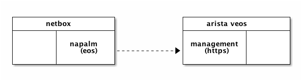
A Clasic Configuration
Topology
+-----------------+ +-----------------+
| arista 0 et2 +------vlan30------+ et2 arista 1 |
+-----------------+ 172.16.30.0/24 +-----------------+
| | | |
| 172.16.10.1/24 | | 172.16.20.1/24 |
| et1 | | et1 |
+-------+---------+ +-------+---------+
| |
| |
vlan10 vlan20
| |
+-------+---------+ +-------+---------+
| eth0 | | eth0 |
| 172.16.10.6/24 | | 172.16.20.7/24 |
| | | |
+-----------------+ +-----------------+
| vm 0 | | vm 1 |
+-----------------+ +-----------------+
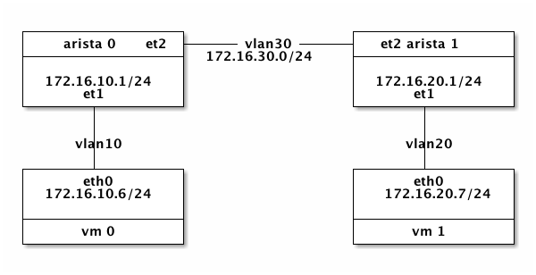
Create Topology
---
- name: "Create network vlan10, vlan20, vlan30"
hosts: localhost
tasks:
- name: "ensure networks created."
os_network:
name: "{{ item }}"
state: present
with_items:
- vlan10
- vlan20
- vlan30
- name: "ensure vlan subnets created"
os_subnet:
name: "vlan{{ item }}-subnet"
state: "present"
network_name: "vlan{{ item }}"
cidr: "172.16.{{ item }}.0/24"
enable_dhcp: True
with_items:
- "10"
- "20"
- "30"
- name: "Create arista vms"
hosts: localhost
tasks:
- name: "ensure arista-0 created"
shell: |
nova show arista-0 &> /dev/null && exit 0
nova boot --flavor m1.small \
--image Aboot-veos-8.0.0.iso \
--nic net-name=netops \
--nic net-name=vlan10,v4-fixed-ip=172.16.10.1 \
--nic net-name=vlan30,v4-fixed-ip=172.16.30.3 \
--block-device \
id=ba02703d-6d2b-40a8-bdb7-bf41163d78f7,\
source=image,bus=ide,dest=volume,size=4,shutdown=remove \
arista-0
- name: "ensure arista-1 created"
shell: |
nova show arista-1 &> /dev/null && exit 0
nova boot --flavor m1.small \
--image Aboot-veos-8.0.0.iso \
--nic net-name=netops \
--nic net-name=vlan20,v4-fixed-ip=172.16.20.1 \
--nic net-name=vlan30,v4-fixed-ip=172.16.30.4 \
--block-device \
id=ba02703d-6d2b-40a8-bdb7-bf41163d78f7,\
source=image,bus=ide,dest=volume,size=4,shutdown=remove \
arista-1
- name: "Create vm"
hosts: localhost
roles:
- role: vm
group: vlan10vm
network: vlan10
- name: "Create vm"
hosts: localhost
roles:
- role: vm
group: vlan20vm
network: vlan20
Configure Arista 0
enable
config terminal
interface management 1
ip address 192.168.0.14.16
vlan 10
vlan 30
interface ethernet 1
switchport mode access
switchport access vlan 10
no shutdown
interface ethernet 2
switchport mode trunk
switchport trunk allowed vlan 30
no shutdown
interface vlan10
ip address 172.16.10.1/24
interface vlan30
ip address 172.16.30.3/24
ip routing
router ospf 10
network 172.16.10.0/24 area 0
network 172.16.30.0/24 area 0
end
Configure Arista 1
interface management 1
ip address 192.168.0.26/16
no shutdown
vlan 20
vlan 30
interface ethernet 1
switchport mode access
switchport access vlan 20
no shutdown
interface ethernet 2
switchport mode trunk
switchport trunk allowed vlan 30
no shutdown
interface vlan 20
ip address 172.16.20.1/24
no shutdown
interface vlan 30
ip address 172.16.30.4/24
no shutdown
ip routing
router ospf 10
network 172.16.20.0/24 area 0
network 172.16.30.0/24 area 0
end
Test
login vm-0 and ping vm-1.
Tips
<2017-10-26 Thu>
Here some dummynet usages on Mac.
Configure Bandwidth
-
Create pipe with bandwidth, redirect packets to the pipe
sudo dnctl pipe 1 config bw 1Kbit/s echo "dummynet out proto tcp from any to wordpress.org pipe 1" |sudo pfctl -f - -
Enable if not
sudo pfctl -e -
do download and watch the speed
wget -O /dev/null wordpress.org/latest.zip #=> ... 3.02KB/s ... -
Adjust the bandwitch on fly and watch the speed
sudo dnctl pipe 1 config bw 10Kbit/s #=> ... 61.0KB/s ... -
Reset and disable
sudo pfctl -f /etc/pf.conf sudo pfctl -d
<2017-10-24 Fri 12:30>
Now switched from Jekyll, Hugo to Emacs Org Publish. How to write blog using org-publish.
Customization
First we need to customize variable org-publish-project-alist:
("blog"
:base-directory "."
:publishing-directory "."
:base-extension "org"
:recursive t
:publishing-function org-html-publish-to-html
:headline-levels 4
:auto-preamble t
:section-numbers nil
:makeindex nil
:html-head-include-scripts nil
:html-head-include-default-style nil
:auto-sitemap t
:sitemap-filename "index.org"
:sitemap-title "Thatched Cottage"
:sitemap-sort-files anti-chronologically
:sitemap-format-entry org-publish-sitemap-time-entry
:html-postamble nil)
My sitemap-format-entry, add timestamp before the sitemap entry:
(defun org-publish-sitemap-time-entry (entry style project)
(format "%s %s"
(format-time-string
"[%Y-%m-%d %a %H:%s]"
(org-publish-find-date entry project))
(org-publish-sitemap-default-entry entry style project)))
Set org-html-head to(customize-variable org-html-head) to use my
org.css:
<link rel="stylesheet" type="text/css" href="css/org.css" />
The Project
.
├── .git
├── .nojekyll
├── README.md
├── css
│ ├── DroidSans.ttf
│ ├── DroidSansMono.ttf
│ ├── DroidSerif.ttf
│ ├── fonts.css
│ └── org.css
├── dummynet.html
├── dummynet.org
├── growfs.html
├── growfs.org
├── hdiutil.html
├── hdiutil.org
├── index.html
├── index.org
├── org-publish.html
└── org-publish.org
Thursday, 21 November 2013
高中就遇到她。一直到现在都觉得她最好看。那时她座位在我前面。她数学可以，我的更好一些。
有次大家一起聊天，说到了什么，她把牙摘下来了，下了我一跳，摩托车撞掉的，她很平和说，人也不是故意的。
去沙河，对岸有一座斜塔。去时候水浅，趟着过去，回来一半涨水了，衣服湿到腰。她给我们吃妈妈做的点心。暖和些。那次还有些其他的事。
后来班上来了个帅气的男生，干净，打篮球的特长生。就和她交往了。
我们把男生叫出去，说一定要对她好，不然怎样。他当然说好了。
大学寒假去看她，远，赶了一天，到就很晚了。正洗脚，光脚就出来了。院子里一层薄雪。
忘记说了啥。那时不爱说话。看得出她不快乐。他们高考后就散了。那是最后一次见面。
多少年了。
12/18/21 Saturday 11PM我们楼下江老太太八十了，特有文化，很多方面都是我的老师。不过电脑方面，我懂的比她多一些，就做了她的老师。
现在她会打字，会用QQ和别人聊天，会使用Word简单的一些功能。今天她发了第一篇博客，这是她学电脑最大成就了，具有里程碑的意义。作为“老师”我也很高兴，转发一下。
--- Monday, 23 May 2011
我昨天去植物园踏青，桃花开得真好看。我和朋友照相留念。
我和她六十年的朋友了，可是多年未见。我们开心的一路走一路聊天。蓝天白云绿草红花。真是心旷神怡。
今天我们去颐和园，和张秀云从东宫门走到石舫，走一段歇一会，闻一会儿花香。真是妙不可言。玉兰的香诱人，看得我们流连忘返。这种感觉在城市根本享受不到。
当我们走到石舫时，张回亿说它已经站在这里好几百年，人生一辈子才多少年，我们一晃就活了八十岁了。老矣！然而它却仍然傲然挺立，记录着人世的沧桑。它记录了我国多少耻辱和灾难，如今国家兴旺，人民生活安康。咱们要争取多活几年。
Friday, 13 May 2011
我特别喜欢这部电影。喜欢非非（韦玮饰）明亮、清澈的眼睛。北京女孩的性格让我心醉，那么明朗干净，宛如北京秋天的天空。
如果重拍绝对找不到这么干净的人。谁呢？韦玮现在应该三十出头，事业不事业无所谓的事，希望她幸福吧。圈里圈外那帮老的小的烂女人烦死人了。
我总觉得片中1726，2081，1377，1999都有特别的意义。片子的拍摄年份是1999，但1726，2081，1377就不知所以了。不过我们可以大致推算必成婚介的规模，差不多几百名会员的样子，不到一千。每名四百八也就五十万不到的入账。因此必成也没赚多少钱。
主角韦玮（非非）、余震（必成）、赵倩（刘燕）、孙岩（宏斌）都演的好。非非根本就没法演，只是多少年不出的人给碰上了。余震那口儿让人喜欢，还有赵倩。孙岩比较闷但人物角色就那样了。刘燕这个人物最难演，因为稍微拿捏不好就会招人厌，喜剧的色彩稍稍重一点就会失去观众的尊重。但赵倩做的很好。刘燕的真诚体现在脂粉上，口红、眼影呈现一个女人对爱情的认真。
配角的表演烂极了，比如肾虚者、胖姐、孕妇、电梯女工全是败笔，反映了导演、编剧林黎胜低级趣味的一面，不过无所谓啦，有韦玮在一切都可以原谅。当然啦，就算这些配角的表演也比刘德华在《天下无贼》里的表演强。林黎胜也是《天下无贼》的编剧。这些年没看出有啥进步。
情节、细节上处处有对称，但不是完全的对称，而是稍有缺失，因此表现出来就是一种协调的美感，明暗有致，错落有趣。
我们是外乡人。北京对我是个陌生的城市。但哪里又是熟悉的呢？一如我们都是第一次来到这个陌生的世界。还好一些有趣的人在，给所有外乡人一个停留。
Saturday, 11 December 2010
一
——听说今年你deliver了一个知识产权完全自有的产品，对你的意义非常重大，能跟大家说一下吗？
是的，在我老公的帮助下；当然，主要是我的功劳；今年我们的女儿出生了——
——哦？
从设计、孕育、实现、试运行到如今的正式上线，我们付出了很多的汗水，真的做的很辛苦——不过这一切付出都是值得的。
——祝贺你当了妈妈，要知道一个人，只有有了女儿，将来才可能当姥爷——
哦？
——或者当姥姥。就像有了地才能当地主一样。
二
——塔拉，前面放的录像里，那玩轮滑的帅小伙有些像你啊
什么叫像，那根本就是我。
——塔拉的女朋友就是在玩轮滑的时候认识的。
——瞧有人爆你料，塔拉，是真的吗？
我其实是先喜欢上了我女朋友，她喜欢轮滑，我就练轮滑把她追到手。
——你这做事的方式，真范儿！我记得2003年，冯小刚导演专门给你拍了一部电影；那时候你还在上学吧？
03年我刚上大一。但冯小刚那电影不是给我拍的，是给卡拉拍的。
——哦对，卡拉是条狗，不是塔拉，瞧我这记性。那今年他拍的《非诚勿扰2》有关系吗？
也没有
——那你觉得今年对你关系最大的事情是什么？
我觉得是我今年正式加入18M。这对我很重要。
——哦，这是New Blue了，新蓝。那具体重要在什么地方呢？
这让我有了稳定收入，为明年结婚铺平了道路，多年的恋爱终于有了结果。
——真好啊。对了塔拉，我听说一些美国的同事反着念你的名字，你就变成了邋遢，是吗？
是，我这名字反过来念不太好听
——为此国家拟出台中国人名规范，把姓放在前面，有这件事吧？
人名规范是有，但的确不是为我出的。
——你魔方玩的更酷。你用轮滑追到了女朋友，你想用魔方做什么，有什么打算？
主要是想巩固一下。
——居安思危
三
——说一件今年对你最有意义的事
我开车终于被人撞了
——哈，那你以前是不是总是撞别人？
那倒不是，我第一次开车撞到了一棵树，在百望山
——对，这我知道，那次我们一起去百望山；你可把那棵树撞惨了
是。后来又撞倒了一个水泥墩子——
——这次换了个硬的
这两次车都有损伤，保险公司就赔了。
——那这次你被人撞，人没事吧？
人没事，车撞惨了。我要先到他保险公司做保险认定
——然后呢？
然后拿着保险认定到我的保险公司
——然后就赔了？
没有呢，只是一个步骤；我修之后还要拿着零件到我的保险公司确认。整个流程走下来，非常麻烦。
——这件事对你的意义在哪里？
从这件事我认识到我们的确是在一个Growth Market，有很多问题需要我们来解决
——比如？
比如这两个保险公司的理赔流程，就可以整合在一起嘛，不用用户跑来跑去了
——是
Tuesday, 21 December 2010
汪东兴回忆之《毛泽东与林彪反革命集团的斗争》，我认为在文学上简直无与伦比。有一个莫名其妙的开头，就好像人类的起源，没人知道原因；之后就像开动火车一样，咣当当，咣当当；不断重复而又不完全相同，就像历史的车轮一样，充满着史诗感和宿命的味道；最后到达一个电光火石般大爆炸式毁灭的结尾。一点点前言和后记表达了对真实的推崇以及不可及的无奈感。
这才是真正的文学啊。
文字朴素中透着洗练。不惜笔墨的重复以笨拙感对真实进行膜拜。平凡的坦诚和伟大的莫测高深相映成趣，好像一叶漂在大海之上。这种沧桑感柔浸在对生命、对感情的看似木然和无动于衷里，就像热血在半空飘洒，飘飘洋洋散落在干涸的大地，没有声息但有的人能听到空中弥漫的灵魂的歌唱。
一篇真正的史诗啊！
Wednesday, 24 November 2010
1999年，杨虎城之孙杨瀚在夏威夷见到张学良的时候，发现老人没有激动，甚至有些许冷淡。每个人孤独地穿行在时间的迷雾里。
有人看到了原因，不得不死；有人看到了结局，不得不走。有人眼睛为胸中愤怒所烧，变的通红，不得不在漫漫岁月中慢慢熄灭，像生命之灯的熄灭一样，一缕青烟之后归于沉寂。有人在那一刻全看到了；天亮的时候他独自收拾院子，打扫房间，歇歇脚抽根烟；于是天又黑了。
时间只有一个方向。
Monday, 15 November 2010
繁简转换并没有尽善尽美的解决方案，按单字转换有98%的准确率，剩下那2%，需要分词了。分词本身就没有100%正确的算法了。
基于iconv可以这么做：
iconv -f BIG5 -t GB2312
注意这是按单字转的。如果要从UTF-8过来，还更麻烦些：
iconv -f UTF-8 -t BIG5 | iconv -f BIG5 -t GB2312 | iconv -f GB2312 -t UTF-8
这也不支持GBK的。
更好些的是cconv：
cconv -f BIG5 -t GBK
处理UTF也方便些：
cconv -f UTF8-CN -t UTF8-TW
支持更大些字符集。
据说也支持分词但我没试出来。还提供php的库支持。那用JNI集成到Java里也不难，至少在Linux下是这样。
Wednesday, 10 November 2010
这里要讲的只是一种可能性，但并非微乎其微。
在还没有变胖，还在系篮球队做替补，跟着帅气十足的篮球队长当跟班的时候，有一个不算漂亮的女生，在学生会。她高中谈恋爱，追男朋友到大学，入学没几天就分手了。
这一天那个女生也来到了篮球场，在场边做啦啦队，为本队助威。篮球队长可能觉得有这么个女生助威，够跌份，就决定羞辱她。刚巧地上有一团脏脏的餐巾纸，队长就指着这块纸对她说，掉了哈。
我们开始都不明白是啥意思。她倒是羞得满脸通红；还好她也是个外场的女子，立马高声叫骂队长臭流氓。队长既然开出这么恶心的玩笑，也没打算在她那留好感，臭流氓也认了。
半个月后他俩恋爱了。
这说明人有很多侧面吧。
Friday, 5 November 2010
eyeD3是一个ID3编辑器，基于命令行，修改mp3的tag信息。类似的工具有
mp3info, id3v2等。但这个是我遇到唯一能够工作的。
这里头的原因还是由于ID3 Tag的标准太乱，著名的有1.x和2.x，其中1.x不支持Unicode，2.x中，2.3不支持UTF-8。这乱局好似泥潭，以至于mp3info的作者
Cedric Tefft说自己太懒，不愿趟这个混水。因此mp3info只是停留在支持1.x的阶段。但如果你想在Android播放器上正常显示中文，是需要Unicode编码的。
id3v2原则上支持，但也卡在编码转换上了。于是eyeD3就是唯一可用的了。其文档比较详细。看一下就知道如何用了。
eye的发音和I一致，因此eyeD3 ~= ID3， id3已经被别的应用程序占了名字。
Wednesday, 27 October 2010
大体可以看懂《聊斋志异》的原文。很喜欢这么洗练的文字，也许是中国人的缘故吧。
中国的文字，简练而庸俗；就算是哀怨的句子，写的时候也期许在情理中。海子讲中国就是平常人的故乡，真是透彻的看法。林语堂讲他的文字，是献给具有平常庸见的人的。平常的庸见，也许就是常识吧，在也当下只有那些毫无话语权的人才具有。漫天飞的都是些不知所云的非常识的东西，甚至在逻辑上都站不住，更不用说包含有用的信息了。
蒲松龄老先生，从他的笔触看，有些像当下的记者。那些狐仙鬼魅不像他老人家想象的东西，因为东一下西一下，个妖鬼的法力不一，没有起码的神怪体系。彼此遇上，输赢就难料了。
倒是有关阎罗殿的说法，还算一致。也许这是佛法的缘故吧。
神、仙、妖、怪、人、鬼彼此之间还算客气。
神和仙不同，神是佛教编制的神，仙是道教编制的；不过也有脚踏两只船的。妖和怪就没有编制了。妖也许是动物成精的，而怪是植物成精的。妖怪也算可怜吧，有的奋斗来奋斗去，也不过想要个人形，不算过分。妖怪要是能被收编，也算神仙了。鬼不独立，有些像病毒，总要找个宿主。找不到宿主的就在野外飘荡，哭哭啼啼很可怜的样子，不过也总是这些可怜虫害人。
从程序员的观点看，神仙是全局变量，人是局部变量，鬼是指针，指向一块内存。迷魂汤有些像内存回收的机制。有的鬼不喝迷魂汤，再托生成人就有了上世的记忆。
原则上人以及动植物都是参与轮回的。不参与轮回会引起内存泄漏，这是系统所不允许的。有些生物可以利用系统漏洞规避内存回收。常见的办法是听如来佛诵经。这样到系统回收内存的时候，还以为这块内存如来要用呢，就不去回收了。其实如来只是做了个引用，根本也不用；如来也慈悲，睁一只眼闭一只眼，就过了。随着时间的推移，这生物占的内存越来越多，道行深就成了妖怪了。悟空也是个妖怪。但他成妖的经历不同。他是自己手工勾掉的，危险而且麻烦，没本事千万别效仿。
有些妖怪被系统发现吃内存，系统发现如果回收他们的内存，系统本身会变得非常不稳定甚至崩溃。因为这些妖怪吃的内存，有些已经被别的全局变量用上了，这些全局变量还是内核级别的！系统没办法就把这些妖怪收编，给个编制，也变成全局变量。这样妖怪彻底脱了轮回，变神仙了。
作为局部变量的人，甚至很难参透自己所在的这几行到底编写的是啥意思。造物主这个程序员的代码风格也不怎么样，可读性极差。况且站在一个局部变量的角度，几个赋值就好几个轮回了，根本搞不明白什么意思。搞明白又怎样？刚明白一点就刷了。刷来刷去有意义么？于是就有人看破红尘了。
聊斋，写的就是这些作为局部变量的众生，跟自己命运搏斗的故事。这主题搁在西方，是史诗的题材。
很想整理中国神话体系，但才能不够，就算有一些时间也从指尖漏掉。不过，如果有一个设计合理，法力均衡的神话体系，那神仙之间就能说上话，依照不同的法力性情出身背景，就有无穷的故事可以讲。那是一个埋藏已久的旧世界，也是一个新世界。这样的世界有历史有现在有未来。电视剧《西游记》那么拙劣，孩子们还那么爱看。这也是神话的魅力吧。
神话激发，也考验个人的想象力，给世界增添颜色；世界需要这别样的颜色，现在灰的很，间或血的红，只这两种很无趣。
Sunday, 19 September 2010
突然，想起一个长得像林致炫的同学。白白净净，尖尖的下巴。
那一年，他从杭州来到京城，同行的还有他的同事，一个漂亮女孩。同学们让他给介绍介绍，他让我们放正经些。他们是来参加一个中学物理竞赛。后来还得了一个奖。
下一次再来京城，是离开了杭州学军，跳到这边来工作，他计算机不错。那个女生也在；他 丢了所有东西，两人坐在公园长凳子上，放在边上的外套也被顺走了；那也是深秋吧。我说他在恋爱，他死死不认。
他们最终错过了。他在北京飘了几年，漂过三十之后，和一个比自己小很多的结了婚。后来没几年，为了财产的事，他的小妻子把他的尸体搁了一个来月，不能火化。同学散在四方，像土里生锈的钉子，偶尔碰面，哗拉哗拉落锈；潜的太久，猛一下出头，也搞不清发生的事。他父母老得厉害，哥哥忠厚人，还有老奶奶。现在还在过公堂。
我后来知道，他是爱她的。他离开杭州，跑到京城，也是觉得自己没志气，要做一番事情才有脸面去见她。可感情的事，并不遵循这么简单的逻辑。他接纳了另一个女人，很小心地爱她，很卖力地工作养着她。他小妻子讲他在世最后一秒说不出话，只能流泪。
爱情啊！
洪启讲，爱情是什么，爱情是永恒；永恒是什么，永恒是纯洁；如何才纯洁？勇敢就纯洁。
他跑到京城来找自信，就不能算勇敢了。那纯洁呢？永恒呢？还有爱情呢？
可又有谁勇敢呢？都只是活着的吧？
Monday, 6 September 2010
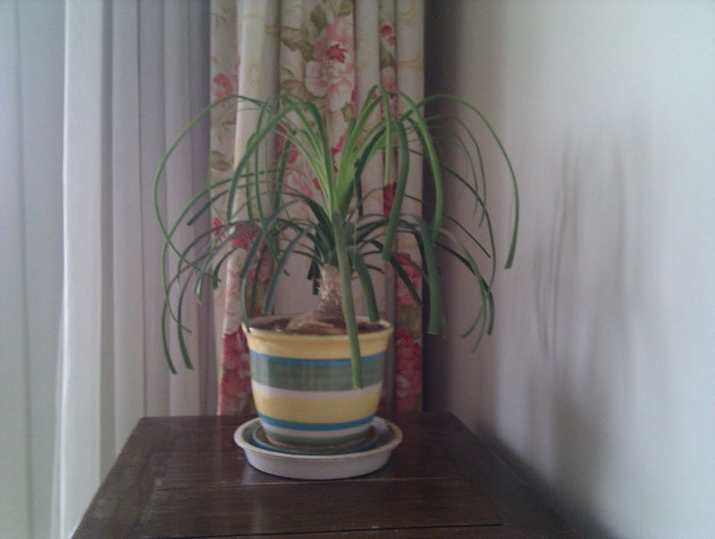
还没开
Friday, 3 September 2010
我站在你妈妈看不到的地方等着你
Friday, 27 August 2010
听一听窦唯《我最中意的雪天》
那么的干净
能嗅出空气里的炊烟味道
听得到脚下咯吱咯吱
通红的鼻子
白的哈气
像触碰到爱人冰凉的手
禁不住而打的冷颤
Friday, 27 August 2010
周末了
有人无事
有人在病中
有人不说话
有人打长途
Wednesday, 23 June 2010
在看野夫的《父亲的战争》。
野夫好文字，时常让人会意一笑。野夫的好文字不是一般的好，他语言不单运用的好，他语言里有创造，所谓"平地扣饼，对面拿贼"。他的选词，用字绝不能用考究来形容，他选词用字里有体验。这种体验甚至是他的发现，而他也有能力用几个字把他的发现给大家揭示。我说的不好，下面是北京当代汉语研究所的评价：
野夫的写作还原了语言最内在的秘密。我们要为野夫喝彩，但归根到底是为汉语喝彩，它在它信得过的操作者那里，令人罕见地走上了自己最正确的道路。
此言不虚。那语言最内在的秘密是什么呢？存在和表达纠缠以致无穷，很好玩，但让人抓狂，却也是和谐的：存在的表达，表达的存在，等等等吧。这只是个起头，后话很长。
Tuesday, 22 June 2010
Try not to become a man of success, but rather a man of value.
--Albert Einstein
传说，共工怒而触不周之山，天柱折，地维绝。天倾西北，故日月星辰移焉；地不满东南，故水潦尘埃归焉。天也破了个大洞，女娲炼石补天。女娲炼了三万六千五百零二块石头，但补天只用了三万六五百块，还有两块没用。那剩下的其中一块就是没有功名的石头贾宝玉。爱因斯坦在这里所转述的，是贾宝玉的原话。另一块后来孵化出了齐天大圣孙悟空，悟空说的话，就是爱因斯坦所不知的了。
那段时间，女娲忙着补天，大禹将要忙着治水，诺亚苦苦守望在方舟之上，等待大水下去；我们的老祖先帝颛顼组织人力物力抓捕共工。颛顼抓住共工后没有赶尽杀绝，而是宽恕了他。但共工却没因此而罢休。他起身去了西亚之地，碰巧救了诺亚一家。因此就拣选了他的后人即犹太人做他的子民，创立了犹太教，要实现他的复仇计划！
作为一个犹太人，爱因斯坦最终发现了质能转换方程式。原子弹造出来后扔到了日本。
Friday, 11 June 2010
Grass is growing its seeds
Wind shaking its leaves
We standing, no speaking
Already very good
译自顾城的诗（1982）：
草在结它的种子
风在摇它的叶子
我们站着，不说话
就十分美好
Friday, 11 June 2010
今天下楼的时候，遇到一个十年前一个熟识的人。那时候他从联想出来创业。我们3个在他那里打工。他这个老板待人很宽厚。公司初建，常加班到深夜。他领着我们吃午饭、吃晚饭。他吃饭比较快，常见他笑咪咪地看着我们吃。年轻人海吃，不够的时候他就叫服务员加菜加饭。那时他三十几岁，算我们一个大哥吧。
可我忘记了他的名字。想想能询问的人，只剩下一个。另一个已经不在了。打电话过去，他的记忆也模糊，说是不是叫牟其中。听着好熟。后来想起了名字，就打电话过去。他还是有些不确定，我也怀疑了。
Saturday, 5 June 2010
近些天，后窗台上经常见到几只鸽子。它们咕咕叫，玩一会儿就到别处去，再回来，在窗台上歇歇脚。
不知它们一直这样，还是之前我把自己搞得很忙，一直没有注意到。我的葡萄在前阳台长叶子；每天有一公升的淘米水，给它喝。
我在窗台上撒了一小把小米。鸽子吃一些，留一些；也许它想下次吃，或者带朋友来。它们长的很像，我还分不清谁是谁。
前阳台的麒麟，每年逢雷雨疯长，今年可能睡的太沉，闪电雷声都没有唤醒它。也许它脚下的土太贫瘠，没有养分；但它脚下的土总是那么贫瘠的。
鸽子每次来都咕咕的叫；我开开窗户它们就闪避开。它也许知道人类对它们喜爱，根本靠不住；那只是心情的一次变化罢了。我也不指望它能够信任我。
小时候有一只受伤的鸽子飞进窗，我把它养起来。它每天咕咕叫，对我并不信任；但它受伤了，暂时也飞不大起。它伤好了后，我怕它飞走，就把它翅膀上的长羽毛溜短了些。它咕咕叫，可以看出并不快乐，很焦躁。后来我发烧，妈妈炖了汤给我喝，告诉我是鸡汤。我恢复后伤心了几天，就好了。
也许我只是假装伤心，欺骗自己说我还是善良的，让自己的心不那么愧疚罢了。或者我根本就没有伤心难过，只是在回忆中增加了这个情节，让这个回忆更像一个故事。或者更卑鄙些，是为了骗取女孩的眼泪，而刻意加的伤心落泪；鸽子死在妈妈的手里，我只是一个伤寒中的无力者，阻止不了；妈妈的鸽子汤只是为了病重的儿子；一切都合乎情理，但那只鸽子却死了。
鸽子真的死了的。妈妈也许还记得；但我们之间并没有聊过。
更小的时候，还在上学前，我还养过一只乌鸦，或者灰喜鹊。我那时太小只知道它是只鸟。它是全黑的，但不食腐肉；也许它食腐肉但我只喂它谷物和小虫。我记得逮蚂蚱给它吃。它一口吞，然后伸脖子咽下。在我喂了它一只蚂蚁之后，其他的蚂蚁就老来找它了。它身上爬的都是蚂蚁，还有蚂蚁往它嘴里爬，这让我感觉很恐怖。
蚂蚁还会复仇！但这明明就是我记忆的指向。家人都记得这只乌鸦，是邻家的叔叔先在家新院后面的草窝里发现，告诉我，我才去捉住的。它一定受了伤，要不然我那么小，一定捉不住它。那时候邻家的叔叔刚结婚，婶子很漂亮，是小学的教师。晚上到我家串门，我跟她讲小三砍柴的故事，她夸我讲得好，那么长都记得完备，就送我一本厚厚的田字格本子。那时候她还没有生小弟弟。她很漂亮，叔叔也长得帅。
我让乌鸦招惹了蚂蚁后，蚂蚁就老跟着它。它也许被蚁王诅咒了。它傻傻站着不知所措，就像现在高大肥胖的女人穿了高跟鞋站在舞台上，翅膀都不知放哪里。它应该有能力把源源不断的蚂蚁一个个吃掉，但不知为什么它并没有这么做。我爬上树，把它放到树枝上。那是棵池塘边的柳树，斜探到水上面。
我说，看蚂蚁还找得到它！
我明知蚂蚁是会爬树的。其实柳树上蚂蚁更多，它们每天都去搬蚜虫的蜜。我这么做，只是怕自己也招致蚂蚁的诅咒，引蚁上身，而义正严词地找的一个借口。小孩子的心思，自私而加以掩饰，就很邪恶了。它在枝头仍然不知所措，摆摆翅膀要飞，有些生疏了。但它最后还是飞下去了。
只见它掠过水面，惊起下面团飞的懵懵虫；它打起精神，拍打翅膀，拖着一根线，向大菜园方向艰难飞行。它本来就不是小似麻雀的鸟，只是近来太相信人，而且蚂蚁缠身，病的不轻。
后来它被另一个人捉住。我跟那人要，说是我的鸟，他只还给我那根线；再之后乌鸦的死活，就不知道了。
人，最自私的动物；只是内心够复杂，表情太丰富。
小时候家里有一只老黄狗。我记不清它和我之间的故事了。它比我岁数大，我是它看着长大的。我是大水送来的人，这狗在那场大水里游过。闹狂犬的时候组织上号召打狗，爸爸就要杀它。它中了爸爸一抓钩，跑了很远才被乱棒打死。它惨烈的死我并没有亲见。它的肉我却是吃了；吃肉的时候没觉得异样。它的皮绷紧了晒在太阳下，一个大字。爷爷有一件黄狗皮领的大衣，也许就是它的皮。狗死后我发现别人家的狗有的还在，就埋怨爸爸。也许只是在心里埋怨。爸爸说只是条狗嘛。也许这话不是他说，我只是从他的眼睛里读到。也许我没从他眼中读到，只是我想了下他的眼睛。
据妈妈讲，我还有个弟弟；只是后来组织上倡导计划生育，爸爸太积极，就做掉了。我要是弟弟，就不会老和邻家弟弟玩，邻家弟弟也不会是我的跟屁虫。他妈妈很漂亮，爸爸长的帅。但他爸爸脾气不好，喝酒说胡话打老婆。邻家婶子就回娘家，住着不回来。婆媳关系也不大好，时常拌嘴；但没有打过。我模糊记得邻家奶奶的样子，但每每试图弄清的时候，就滑到我奶奶的样子上了；模糊着反倒有区分。邻家婶子去世的时候我上大学或高中。记忆真不可靠；回忆只是在挣扎中辨认所谓的真实。
妈妈说起这个没来到世上的弟弟，是不待见我这个来到世上的妹妹。我很小就知道装懂事，不给大人添麻烦，还帮忙，妹妹就显得不懂事了。妹妹脾气倔强，能把大人气疯。时间久了，也记不得她气人的原因。有一次她一直哭不认错，妈妈抱着她走进池塘，一直到水淹着小腿她才认错；回到岸上又翻脸不认。有一阵全家都认为她被邪魔上了身，要找巫婆帮她赶一赶。爸妈那时还是年轻的父母，实在不应该这么样子对小孩子；我也不是很好的哥哥，不明白她是我血肉相连的手足；装懂事得到了父母师长的夸赞，内心的愧疚却是瞒不过的。妹妹拒绝上学那年妈妈气的说胡话，很恐怖；爸爸用力掐人中才过来。
我把妹妹带到了这个城市却没有安排好她的生活。这个城市磨练了她，让她有足够的能力生存下去，却没有给她幸福。这个城市只有她的工作没有她的生活。我没有照顾好她，却推说自己能力不够做不到。我的确有能力不够的一面，但我放她身上的心也太少了。
乌鸦，或者灰喜鹊，划过水面飞向菜园的方向。它是否回头看那我一眼？这么小的一个孩子，就懂得了怎样遗弃。风，呼啸而过蚂蚁的耳朵；蚂蚁紧附在乌鸦身上放声歌唱，歌唱无畏歌唱胜利。它们无尽的诅咒它们坚强的恨吓倒了我这个冒充大人的小人。我瑟瑟发抖；悲凉的秋风里没有了我的鸟。
鸽子咕咕来到后窗，这高贵而优雅的鸟，在窗台上踱步，歪着头对着小米，静静在风中思考了片刻，风也吹乱了它头顶几丝羽毛。高中时前座有一个漂亮女生，一天中午，她转过身来，歪着头安静地对着我笑；静了片刻，她摘下她的两颗牙，放在课桌上。想不到吧？她很高兴地讲出她的秘密。她被一个骑摩托车的人撞过，换了两颗假牙。她说骑摩托车的不是故意的。院子里法国梧桐毛毛飞过来粘在假牙上，她抖了抖，然后装上了；那么从容，像一只深色的鸽子，一下一下啄食小米一样。她的宽恕，还有闪烁在眼睛中对万物的爱，都让我忍不住想哭。她不知她面对的是一个异教徒吗？这个异教徒外表庄严内心虚弱，不信一切不堪一击；嘲笑众生也嘲笑自己；而且也并不懂得什么是爱。
Sunday, 30 May 2010
今天明白了民不聊生，真直白；但让人不寒而栗。
当老百姓不聊生计的时候，他们就聊死计；如今富士康的连跳，就是一条死计。
草民不再讨论如何好好地活下去，失去了活下去的希望。
真恐怖，转眼就到了这个境地；也是刚知道，这就是民不聊生啊。
Thursday, 13 May 2010
购入《系统程序员成长计划》。
昨天晚上看了第0章和第1章，打算停下来把里面布置的题做做再往下看。如小李大王（弯曲评论陈怀临给作者李先静的别称）所言，多写多练，不要偷懒：）
毫无疑问这是一本很好的书。别开生面，更实际，也更本质；是真正程序员写的书。就难度而言，不大；老老实实做练习的话，即便是文科大学生也应该能跟得上。就深度而言，确实是很深的。不能当一本简单的技术书来看，可以称得上是技术方面的策略书（如其题目所言）。
书名里的系统程序员有点吓人。系统程序员这个词这些年被Linus这帮人弄得跟大神似的。但就其本意而言，题目也是贴切的。这本书起点很低很低，肯定能看懂。而且好像不是太"聪明"的人读起来效果更要好些。建议被书名吓着的同学不要怕，赶紧购入：）
Wednesday, 12 May 2010
他们去开的是什么会？
有一个金发女郎去纽约的笑话不知你们听过没有。说，金发女郎去纽约，买的经济舱的票，她却非要坐在头等舱。机组人员怎么劝，她都不听。后来机长来了，跟她讲了一句话，她就乖乖回经济舱了。你们猜机长说了句什么？
机长说，头等舱不去纽约！
这个笑话很久以前就听过，最近才觉得，机长说的也许有些道理，金发女郎做的也许也有些道理。
4月20号，我的一个Mentee来找我谈有关他升迁的事情。我其时有另一件很沉重的事情在处理，没有太多心思听他讲他如何填表格的琐事。但我注意到，他的气色不太好，嘴唇很干有水泡。我提醒他多多注意一下自己的生活。但他的心思完全在他的升迁问题上，一再问我如何添表格才会更好。我说，你还是去照照镜子吧，看看你的气色为什么这么差，你的嘴唇上为什么起了泡。他一下惊醒了。他想到了他的妻子，还有他的女儿。他也知道他的心思在工作上太多，分给家庭的太少，至于给自己的，就更少了。之后我们还谈了如何做更有意义的事，如何少花时间在无意义的事情上，等。
我发现我们很累，很疲惫，并不见得我们就做了很多事。我们的脑力劳动强度肯定不如爱因斯坦大，但爱因斯坦去世也是在头发花白之后，在中国也算是喜丧了。前些日子打车去同学家，和司机聊起了这个话题。司机说过劳死最多的是在出租车司机这，只是出租车司机少人关注，媒体也不怎么报。他认识的一些人，就是死在车里了。其中有一个，还是他亲手送走的。当时他们开到309医院附近，他朋友说累了，他说，那就歇歇吧。开到树下乘凉。忽然看到他朋友头向后一仰，脑顶冒起一股白烟（我估计是因出汗引起的水蒸气），就过去了。5分钟不到送到309急救室，缓了一两个小时，等家属过来，最终也没有救过来。这个司机吸取了教训，现在每天早上8：30出门，6点来钟就往家赶，再不敢多拉。当然钱少了些。
林忆莲在4月17日在北京有一个演唱会。我在头天晚上定了两张580的票（打折 800），打算第二天去看。4月17号上午等送票。快中午的时候票送来了。这时候我接到同学爱人的电话，说我同学不幸去世，猝死在家中。我一下子就懵了。
赶到昌平中医院，工作人员把太平间里的一个铁抽屉拉出来，我同学躺在里面，好像睡着了。出来一抬头，见仓皇的天空下，弥漫着尘土的风，卷着白色的塑料袋飞扬，每个人说着相关或不相关的话，彼此按时钟的节奏嗒嗒的走。到晚上8： 30的时候，我竟然出现在林忆莲演唱会。演唱会已经开始了一个小时，林忆莲说我爱你们所有在场的人。我像在梦里一样想，我的同学已经不在人世，更加不在场，因此林忆莲对大家的爱是分不到他那里去的。
都过去了。
头等舱不一定去纽约，经济舱也不一定去，即便坐在身边的人，也不一定能到同一个地方。另一个事是我们去什么地方。最近我发现我手头有好几件并没有什么意义的事。也许你们正在做的事都有意义。没意义的事情做到60分就可以，没必要做到100分。把精力多花在更有意义的事情上，也可以使自己更心情愉快。
就这些吧，谢谢大家！
Thursday, 6 May 2010
胡适说的三句话:
宁鸣而死，不默而生。
有几分证据，说几分话；有七分证据，不说八分话。
大胆假设，小心求证。
环环相扣，弥漫着道德和智慧不分彼此的美感，印证了苏格拉底关于美德既知 识的伟大论断。
Tuesday, 20 April 2010
我的水仙终于开了，在这个永难忘记的春天。
Thursday, 4 March 2010
>
父亲所写，我的表叔
初春的正月初六，我伙同我的堂兄弟们一同去了我姑家见到了我的表哥。表哥上身穿了一件不太合身的不褐不蓝沾满污垢的棉衣，下穿一条胖大的黑色裤子，头戴一顶气死风帽子，脚穿一双烂帮棉靴。他正和与他穿着不差上下、年龄相近的老人打牌。我近前叫了一声：“哥”，他抬头看了我一眼，放下手中的牌说：“走，回家”。我和他一起到了他的家。表哥的家座北朝南三间瓦房，一间没有门的东屋，没有围墙更没有大门。东间放一张床躺着有病的表嫂盖一条打有补丁的被子，房中间放一张竹床，我就势坐在竹床上，表哥坐在一个三条腿的凳子上。西间靠后羊圈；靠前是表哥做饭的地方，屋内羊粪尿的味很浓。表哥家的电器就是一个 15瓦的电灯泡。表哥有一个女儿已嫁到外村，表哥今年69岁靠种3亩责任田和国家发给他的600元独生女奖金过日子。我和表哥告别时他的牌友又来到他的家，一个破纸箱当牌桌，每人找了一块砖坐下，就这样他们嘻嘻哈哈开始了打牌，打牌使他们消除了寂寞，带来了快乐，送走了寒冷，迎来了初春。
Saturday, 23 January 2010
《梦回宋朝》出来了，很开心。当当：http://product.dangdang.com/product.aspx?product_id=20767694 卓越：http://www.amazon.cn/mn/detailApp?asin=B0034KYX0Q
当当要便宜些。《梦回宋朝》不是我写的一本书，但是我"策划"的一本书。因此看到纸质书，虽然我可以得到赠书，但我还是花钱买了一本。
在这里感谢一下作者。感谢他蘸满温情的文字；在这个人心浮躁物欲横流的时代，《梦回宋朝》里的温情还是充溢了大半部书之多。相比较市面上其他的书，已经很难得很难得了。我第一次看到这些文字，是在作者的博客。今天拿起纸质的书阅读的感觉，还是那么的好。
我们的祖先，曾经那么的有趣。他们说真话，办实事，眼睛清澈的像上学前的小孩。他们一起做游戏，玩玩具；他们简单质朴，透过一千年的时间传过来的笑声或啼哭，那么的清澈，清澈地让我后悔自己晚生了一千年。
而今的人呢？他们说着类似打嗝的话，离他们稍微近点就恶心的想吐；他们一本正经的说瞎话，了无生趣地在这个世界上晃荡。他们的头脑里都是血的颜色，不停地绞杀其他的想法；而且也不允许别人说和他们不一样的想法。他们很多把无耻当正常了，他们体味不了的快乐，他们也不许别人体味，他们霸占所有的东西，同时限制别人去获得，他们宁肯毁掉也不跟其他人分享。他们把残酷当果断，把野蛮当力量，把固执当坚强，把不要脸当聪明的一种。他们把美和丑颠倒过来了。不幸的是他们这些人还把持着我们的社会，我们不想接受他们的观点，他们会每天通过报纸、广播、电视、网络灌输给我们。这还不是最不幸的。最不幸的是我还发现自己的有些想法已经被他们侵染，我也开始厌恶我自己，当我对自己都绝望的时候，我也就和他们一样了。
因此这里再次感谢《梦回宋朝》，总算有些新鲜的空气进来，给为污浊空气包围的我们透透气。太闷了！
Friday, 1 January 2010
苏童《河岸》这本书很差劲。底封王干讲这本超越了苏童之前的几部著作；我很怀疑王干的文学鉴赏力，当然也可能王干太忙没认真读过苏童的东西。
《河岸》没有任何超越，某种程度上彰显了苏童才力在走下坡路；我相信在创作方面，苏童比王朔更迷茫。当然啦，当代作家没有不迷茫的，比如余华。《河岸》里有余华《兄弟》里的臭河沟子味儿，一样的没劲不成器。
二十万字的《河岸》里流淌的东西，你要叫它血液也太稀薄了。统共也没有一滴血，稀释了那么一大片。我读到前50页就读不下去了，但我硬着头皮将它读完。别讲思想了，作品里根本没有，单就叙事而言，苏童也没有任何的进步，单调乏味拖沓。讲什么呢？用王小波的话讲，你知道别人不知道的事？或者你想明白了别人想不明白的道理？都没有。那就是无病呻吟了。
他们怎么就不能加把劲呢？也写出点像样的东西来呢？他们在想什么？他们想了吗？
Friday, 4 December 2009
单翅鸟为什么还飞呢？
非常喜欢海子的这首诗，也时常以同样的问题问自己。
单翅鸟为什么要飞呢
我为什么
喝下自己的影子
揪着头发作为翅膀
离开
为什么要飞呢？我想这是生命最有趣的地方。
Sunday, 22 November 2009
存在，有吗？还只是空？
如果存在没有，那我们就应该感觉不到，而我们感觉到了，因此存在有，或者说非空。小乘。
我们只能感觉到非空吗？那如何解释梦境？因此存在也可能为空。大乘之始。
有一定是非空吗？有没有非空非有的可能呢？大乘之终。
空一定不是有吗？有没有即空即有的可能呢？大乘之顿。
空和有是恒常吗？有没有可能有之后空，空之后有？大乘之圆。
我存在吗？一百年前我并不存在，一百年之后我也不存在。那我现在存在吗？
什么是现在？刚刚的现在已经过去，刚刚的将来已成现在，过去的永远过去了。
你存在吗？你说呢？你存在于永不停留的现在吗？
我们都站在时间的箭尖之上，将过去甩在脑后，呼啸着奔向将来。
我们的感觉只是表象——相，我们脑子里有的只是概念——名。
我们不知道，或者不在乎所谓的真相——实。
我喜欢这种生猛的感觉。
佛陀、龙树你们在念什么呢？
你们找到了绝妙的办法，对一切说不，包括你们自己、你们所说的和所指代的一切。
怜悯、慈悲都不要。世界需要的是爱。
这也是我在那个把否定玩到登峰造极的哲学里所没有看到的。
我一下子明白我为什么不喜欢这个东西了。
Sunday, 1 November 2009
刚读过卡尔维诺的《我们的祖先》。卡尔维诺他们的祖先有三个：
- 分成两半的子爵，
- 树上的男爵，
- 不存在的骑士。
我比较喜欢分成两半的子爵和不存在的骑士。卡尔维诺的语言是摄魂虏魄的：
大群大群的白鹳在混沌沉滞的空气中低低地飞行。
阮一峰收集的一些电子版： http://www.ruanyifeng.com/calvino。舍不得花钱买书的同学可以看一眼。
Thursday, 1 October 2009
刚看了他的《卡拉马佐夫兄弟》。
读这两本书之前，觉得列夫·托尔斯泰最了不起。读之后这个想法改变了。
列夫·托尔斯泰，堪称人类的良心；但人类的良心只是陀思妥耶夫斯基关心的一部分，他还研究人类的灵魂和血肉。
没有其他的人像俄罗斯人的灵魂（如果他们有的话）更赤裸裸，血肉那么野蛮热烈。也感谢上帝把陀思妥耶夫斯基注定为俄罗斯人。
12/19/21 Sunday 12AM按：这是一次卡耐基培训，同学们以第一人称叙述的故事，我以书记的身份，将之记录下来。
天空
Tuesday, 1 September 2009
我从小在北京，父母却在青海，很少见到他们。在我七岁的时候，父母怕我跟他们不亲，就把我带在身边了。我们住在一个很大的厂子里，几乎除了火葬场，什么都有。我也在厂办学校上学。高考那一年，我考了全省第十，这意味着我可以报考诸如清华这样理想的学校了。
我们那天早十点出发，到招生办等清华的招生老师，一直等到晚上八点。还好运气不错，碰到了那个老师。他和我们聊了聊，了解了我的成绩情况。我想学计算机，但只有一个化学的名额了。但也不错，应下来了。这件事就这么成了。
那天晚上我们一家走在星光下，遥远的路程上只有我们孤独的三个人。但我们并不觉得孤独。天空只有星星。星光下我们觉到了希望，终于可以籍着我的考学，来离开这个地方了。我也是第一次感觉到了全家为一件事奋斗而成功的快乐。
结果还不错。那年有一个全省第二放弃了清华计算机的指标，我就顶上去了。我进入了我理想的学校、理想的专业。我永远也忘不了那天星星的夜晚，一家人走在无人的路上，如此地欢欣。
孩子
Tuesday, 1 September 2009
有一次，我女儿病了。烧得很厉害，我领她到医院打了针。我给她买了一个她想要很久的玩具。她说爸爸，是不是我表现的很坚强，你才给我买的？我的眼泪一下子就下来了。
她那么小，孤零零一个人来做我的女儿。而我还以为自己为了她好，总是指正她这个不对，那个不好，时刻提醒自己不能惯着她，而不是给她鼓励和支持，帮助她。在这个世界上，我们做父母的，不鼓励孩子，支持孩子，帮助孩子，还会有谁鼓励、支持、帮助他们呢？
弟弟
Sunday, 30 August 2009
上高中的时候，学校伙食不好，稀汤寡水的，没什么油水。有一天我弟弟来看我，带了酱牛肉，还有几样其他平常不吃的菜。我在食堂打了两碗米饭，一碗推给弟弟，一碗自己吃。真香啊。这时候发现弟弟根本没有吃菜。“怎么不吃呢？” “你吃罢。” “你怎么不吃？” “我不用考大学的，你需要，多补补脑子。”
我在弟弟很大才意识到我有个弟弟。他像个透明的影子在我左右，我视他为无物，他却深爱着我这个所谓的哥哥。我一阵哽噎，什么饭菜也咽不下。
哥哥
Sunday, 30 August 2009
我父亲教育孩子的方法比较粗暴。基本上操起什么棍子腰带就打。大哥和我都挨了不少打。我性格还温和些，大哥脾气比较硬，自小打多狠都不叫，也�泪。他们俩平时基本上没话，仇人似的。
父亲过世的时候我不在。到家父亲已经入土了。我们跪在父亲坟前烧纸，大哥泪流不止。从没见他那么流泪。大哥说父亲临去的时候说最后悔的是对孩子太严厉；去了，心里空落落的。
爱人
Sunday, 30 August 2009
那是前年吧。在经历了将近七年的爱情长跑后，我决定与男朋友分手。头天晚上打了分手的电话，第二天我去上班。他打了我好几次电话，但我不接。中午他发短信说他已经从上海赶过来了，现在楼下。我忙到八九点，从后门溜回家，为了躲他。
妈妈打电话说你们在一起那么多年，他有一些问题，但对你绝对是真心的。我一下就哭了。
是啊，七年，生命才有多长呢？
我们最终走到了一起。我们没有完全属于自己的房子，没有车；但我们一样很幸福。我们知道彼此珍惜。爱情是直鱼钩上挂的鱼饵。希望多一些，也可以多一些。
父亲
Sunday, 30 August 2009
父亲是位军人，母亲是随军的教师。他们常年漂泊在外，很少照顾我。我小时候因此也和他们不亲。他们注意到这一点，就把我带着一起漂泊；频繁转学。
中学冬天有段时间在哈尔滨。一次推窗户，玻璃碎了，砍下来把手割断了。还好父亲在身边。他很镇定地替我包扎。在去医院的路上，又一次次不顾大量出血，解开包扎活血。到医院医生问要不要输血，父亲说不用，不干净。后来手保住了。留了道很恐怖的疤。这是我戴手表的一个原因。后来听开车的警卫员说，那是他见到首长最惊慌，最手足无措的一次。
后来我跟爱人约定，无论爸说什么，做什么，都是对的。不要争辩。
母亲
Sunday, 30 August 2009
我父亲去的早。母亲和我相依为命。我在外面上学，每半年才能回去一次。在一起的时候，母亲一边忙着自己手头的活，一边有一搭没一搭聊着身边的事。我们表面都很平静。我的内心却深受打动。
父亲去的时候母亲还年轻，本可以有自己新的生活。但她怕别人待我不好，就没有了自己的打算。
在涉及到家庭、亲情、爱情的事上，如何投入都不为过。
婆婆
Sunday, 30 August 2009
一下生了两个孩子，一家人都很高兴，婆婆也来照顾我们。一天，接到电话讲在老家的公公病的很重，婆婆说我先回去几天，孩子你们先看着。
婆婆走了我们才知道自己并不会照顾孩子。才一天，就有一个病了。我作为一个母亲，太心疼孩子了，就打电话给了婆婆。婆婆放下电话就赶火车过来了。老公劝妈妈别跟着去医院，刚下火车，太累。我怕到医院自己忙不过来，就没有吱声。婆婆到医院就忙东忙西，孩子打完针她就晕倒了。我的眼泪唰的就下来了。虽然我是个母亲，我的眼中也不应该只有孩子。老公在边上不停地埋怨我，我也很内疚。眼泪哗哗地流。虽然第一次做母亲，眼中也不应该只有孩子。
表舅
Sunday, 30 August 2009
我已经3年没有去看过表舅。他住在养老院里。我刚一进门他就认出了我。牵着我的手他说，兰兰你来啦？我鼻子酸的厉害。小时候表舅是我的玩伴，有好吃的都留着给我。我长大了但表舅一直没有。表舅是有智力障碍的人。
我一直以为他理解不了那么多。现在看来我错了。至少他知道什么是爱，而我并不清楚。
爷爷
Monday, 24 August 2009
>
按：爷爷已于2020年3月去世，疫情原因，我不在身边。
你小时候挨过打吗？如果你有孩子，你会打孩子吗？
我的曾祖父赶在解放之前将家业挥霍一空。嗜赌。输掉了家里上千倾的地，好几年的粮食收成，甚至自己的女儿――我的二姑奶。他还打自己的孩子――我的爷爷姑奶奶们，和我的曾祖奶奶。他在监狱里的时候，坏脾气最终送了他的命。他的骨植埋在异乡。我爷爷不想家里有孤魂在外边飘荡，找了几次，但最终没有找到确切的地方。
我爷爷从不打自己的孩子。
心理学家说，面对一个暴虐的父亲，孩子通常的反应有两个，一是反抗，一是顺从。但似乎我爷爷走的是另一条路。他并没有反抗，以暴易暴。他也没有顺从，俯首帖耳。他主动承担一些弟妹的过错，招来曾祖父更多的暴打。他也一直很温和地对待这个世界，并不抱怨和怀恨。
我爸爸也不打孩子。因此同处贫穷中，我过得也比其他孩子幸福些。
如果我有孩子，我会打吗？
不吝赞扬
Thursday, 2 July 2009
Dont Delay Your Praise
几年前，我在一个很Nice的小组长手下工作。任谁提的任务，小组长都接受；组员忙的四脚朝天。和我一起忙碌的，还有另一个新招的Vendor。他技术很不错，分析复杂问题的能力也很强；胖子总给人愉快的感觉；我也很喜欢和他聊天。但作为一个愚蠢的中国人，我很少表露我对他的欣赏，我既没有赞扬他，也没有批评。我们小组长很Nice，但对组员而言，也是一个含蓄的中国人。忽然有一天，这个Vendor决定离开了。他工作的最后一天还在加班；最后分别的时候他问我，他是不是表现得很差；我说你挺强的。但赞美的时机已经过去，他以为只是临别的客套；而且离职这种决定，也不是随便能改变的。
他离开后小组长依旧很Nice；我陷入好几个月的漫漫长夜，忙飞了；直到非典到来才有所缓解。其间有几封表扬信过来，但人已经不在这里了。
一些即使能给别人带来快乐的人，内心也很脆弱，即使做的很好，也需要别人的鼓励，才能继续下去。因此当你觉得谁不错，就立马停下手头的工作，真诚的赞美他。这是上帝分配给我们的一个任务，优先级应该是最高。不完成这个任务或做的不好，虽然天也并不会塌下，但是身边的人会越来越少，直到孤独一身，连自己都对自己厌弃。
及时而真诚地赞美他人吧！驱走人心头的阴霾，换来光明一片!
Wednesday, 12 August 2009
那一年，老大领着我们在荒野里闲逛。不晓得吃什么，喝什么，只记得脚踩在野雪上，咯吱咯吱的声音；还有冷风的吟唱，热风哄、哄的哼；我们走的没有方向，基本上就是跟着老大走，老大也是随便走的。时间太久远，根本不像这个世纪或上个世纪发生的事情；也不像清朝的事，因为不记得梳的有辫子，好像是蓬着头，破衣烂衫的，趴地上跟堆烂草似的。那年月跟堆烂草似的也金贵。老大领着我们边走边谈，有时候路过一条小河就趟过去，趟不过去就顺着河或逆着河走。谈的大多是自己的感觉，谁也说不清楚，但大家都拼命点头说明白，而且也没有不懂装懂的。我们周围弥漫的空气，是一个叫红的女孩。她是我们的空气，没有她我们谁也活不了。
前几天逛书店，发现一本书，《我的名字叫红》，奥尔罕·帕慕克写的。我印象我们那一伙里有这个人，但记得不确切。我翻了翻，发现在写一个女人。于是我就把这本书买下了，期望从里面找到红的线索。他的红是在土耳其，遥远的国度；我们世界的红从来没有戴那种只露出两只眼睛的面罩，最多也就是一条丝巾罢了，天冷的时候我记得她戴一个大红的小帽子，跳跳的，围巾是那种彩虹色的。因此我认定自己受了奥尔罕・帕慕克的欺侮。他说的细密画也就相当中国的工笔画，而工笔画相对与写意画，更简单，更容易；当然在花坊写意画的价格也更贵，这是很自然的事。
那一年，老大领着我们在荒野里闲逛。孤零零的苹果悬挂在最高的树枝上，上面挂着霜。我们穿过果园。一只极瘦的鸟，单脚钉在冰面上打盹儿。老大忽然说这只鸟是不详的预兆，让我们尽量安静地经过，不要打扰它。我们自然都是明白的。我们的心扑通扑通的跳，彼此都听得到；但我们的脚步可比小猫的还要轻；我们基本停止了呼吸，为了挽救我们将遭不测的命运。我们经过后那只鸟醒了，它把细脚从冰面上拔起来，抖了抖，拍拍翅膀就往夕阳的方向飞去了。我们看着它飞到夕阳里，不晓得它会向我们的命运之神说些什么。它的怪异我们不敢领教。我们只想能够继续我们的谈话。老大说，去吧，命运的狗腿子。他说出了我们的心声，我们都点头表示明白。
我们尽量走到没有炊烟的地方，因为炊烟一度使我们感伤。我们像黑夜一样的浓，也像黑夜一样的淡。我们横过水面就像掠过大地的乌云。我们坐在倾斜的宝塔顶上，思念着对岸的红。后来我们闻到了炊烟的气息，就下来了。风是向东那个方向吹。涨水了。老大说，顺着河流走，会到大海，沿着大海一周，还可以回到西岸；逆着河流走，会到高山，翻过高山，还可以回到西岸。我们点头表示明白，就选择顺着河流走。我们没有走到大海，很快就发现了一座桥，就这么回到了东岸。但我们坚信这条河流是流向大海的。
《海子诗全编》有一首长诗，《河流》。开头的引言：梦想你是一条河，而且睡得像一条河――――洛尔迦给惠特曼。洛尔迦和惠特曼肯定不是我们老大，但我确信他们在那一年的我们里。我们在一起常说那些不着四六的话。那是什么年代，我们根本不抽烟，也许是由于那时候地球上还没有烟草，也许是我们闻不了烟的气息，包括炊烟。一个叫流沙河的想加入我们，我们拒绝了他，因为他妈妈喊他回去吃饭，加衣裳。我们的妈妈也喊我们回去吃饭加衣裳，但我们听不到或假装听不到。这是我们和他不同的地方。
那一年，我们领着老大在荒野里闲逛。我们没有方向，老大不知道方向。我们走在大雪覆盖的地球表面。铅灰色的天空显示它是个实体其实天空是最空虚的。天空一无所有，为何给我安慰？我们给自己刷上灰色的漆，只留下嘴巴和眼睛。我们领着老大在荒野里闲逛，老大走得慢我们也不嫌弃他。老大说他是没有梦想的人，但我们都知道他是有梦想的人，他的梦想就是有一个梦想。因此洛尔迦说老大的梦想像一条河，而且睡得像一条河。我们拎着老大的梦想，就像拎着一个一个的手提箱，我们走动的时候这条河就流动起来，我们停下来这条河就睡了。
我们谈论着我们的空气，我们都真心地喜欢她。她的名字叫红。她笑的时候冰川都融化。我们都知道全球变暖的原因，并不是她引起的。她凝望着我们，希望我们这帮傻子能尽早回家吃饭加衣裳。我们在荒野里闲逛，走到哪算哪。我们逃离她的目光，因为我们都不敢凝视她的眼睛。我们谁都没能力正视她，因此大家的认识都是片面的。比如奥尔罕就把她理解为细密画里的一种颜色。
那一年，荒野任由我们闲逛。老大牵着我们像牵着一群狗，我们也像奴才似的听着他的高谈阔论，只是我们的同意是真心的，没有一丝一毫的刻意巴结。我们走在无人的旷野，破破烂烂像一堆堆的草。有时候小鸟把屎拉在我们头上。我们始终没有再见那只极瘦的鸟。我们思念它，像思念我们的厄运，思念我们的前世今生。
Saturday, 8 August 2009
上帝保佑一下他，成为一个好丈夫，成为一个好父亲。
天空只可置身不可经过。内心只可审视不可到达。
立秋的第二天，天渐高远，雨洗出天空的瓦蓝。风催着落叶，叶子说走了，树枝说还早呢，急什么？树干说人忙着呢，别拦着。叶子有什么事呢？柏油路，水泥地。垃圾会运到垃圾填埋厂。
叶子――植物的心，最柔软，最美丽的，和动物心一样的形状。内心只可审视不可到达，就像天空只可置身不可经过。在垃圾填埋场，叶子和其他可腐烂的垃圾慢慢腐烂，散发的臭味让各个小区关上窗户。西山挡不住西北东南风，风吹着没有心的木头，无心的树没有眼泪，树枝充当风的口哨。
在立秋的第二天，阳光打在地上，叶子寻思着离去，树枝正挽留的当口，很多人正迈入婚姻，生命在子宫里孕育；宇宙风保佑一下地球上的人们，成为好丈夫、好妻子、好父亲、好母亲。感谢一下傻傻的木星哥哥，为地球弟弟顶了不少雷，保了亿万年的平安。内心只可审视不可到达。木星可真不容易，舍了心的保护咱们，咱们的心可不是让天狗吃了？就像天空只可置身不可经过。
Saturday, 1 August 2009
Lev Tolstoy and Milan Kundera
听到的。没记住讲述者的名字。
列夫·托尔斯泰总是用温和的态度，善良的心介入各种尽管很尖锐的矛盾；而米兰·昆德拉则以对立的、尖锐的态度进入。米兰·昆德拉很有力度，但缺少托尔斯泰的厚度。
Friday, 3 July 2009
Sound and Power
正在读北大钱理群的两本书：《我的精神自传》和《心灵的探寻》
钱理群的想法有一种笨拙而锋利的力量。这力量像是来自大地的深层，看似沉闷却能给人心灵巨大的震撼。相比较其他如周国平只是发出些声音罢了，而余秋雨只是呻吟。他们是活在文字里的辛勤的蜜蜂或懒惰的青虫。我之前直觉上就不喜欢他们说话，但不知原因；从钱理群这里找到了答案。
前一段时间看林语堂的《老子的智慧》也有类似的感受。林语堂也是公认的大师，但就《老子的智慧》而言，太轻飘飘了。我敢说他并没有进到老子和庄子的世界，只是在门外瞟了一眼吧，就写出来了。这本书里基本没有自己的声音。林语堂就这本书而言，也只是个唱口水歌的快男。相比较王蒙的《老子的帮助》好很多了。人家真正是进去的主儿，无论叙述还是辨析都厚重。鲁迅小说《出关》与老子相关，《起死》与庄子相关，也能看出人老周是进去的。林语堂一本书也比不上短短的《出关》厚。
比较声音和力量本身也许就有些问题。声音再大也只是声音，而力量甚至可以是无声的。但现在声音太多了，而且很多只是噪音。他们又在那喋喋不休装大师。因此建议有条件的同学读一下钱理群，读一下王蒙的老子，他们才是真正有力的主儿。
Tuesday, 30 June 2009
一天，下着大雨，我骑着单车，浇的透湿。前面是红灯，边上有个小女孩，也许是在哭泣。雨下得很大，看不大清。
她提着一个大包，她说她钱花光了，或者丢了；她鼓着嘴，像是跟命运赌气。我一下想起了我任性的妹妹。
我给了她20块钱，让她打车回去。
绿灯了。
雨下成了细细的树林。风来就斜一下。
Sunday, 21 June 2009
那一年的二月二，世上有了轩辕黄帝。黄帝、炎帝还有蚩尤好像都是石头缝里蹦出来的，没人知道他们的父亲是谁。那时候还是母系氏族到父系氏族的过渡时期。父亲是谁母亲都糊涂着呢。可又有什么关系呢？父亲只是种子的主人，而收获是属于大地的。种子散落于广袤的大地，而长出来的是很少的。这个道理是由神农发现的。
据神农的母亲任姒说，神农的父亲就是一条龙。她进了山，撞了龙，回来就怀了孕。相信她不会撒谎。她看不清暗夜里的那个人，只记得他很强健。龙在她嘴里是个形容词，大致是生龙活虎的意思。神农随母亲姓姜。主要吃羊肉。早上一串羊肉串，晚上一串。白天出去找羊。羊肉串烤着吃；那时候大家已经不惧怕火了。
很多年后仓颉造字，想到了神农的妈妈；还有她们的羊；他不知把羊放在女人的左边还是右边；他想起她们高高挽起如龙的头发，于是就把羊放在了她们头上。
如果你相信神农活了五百岁，那炎帝就是神农了。如果你不相信神农太长的寿命，炎帝可就是神农的后代首领。那时的历史朦胧在浓雾里。
海子《历史》
我们的嘴唇第一次拥有
蓝色的水
盛满陶罐
还有十几只南方的星辰
火种
最初忧伤的别离
岁月呵
你是穿黑色衣服的人
在野地里发现第一枝植物
脚插进土地
再也拔不出
那些寂寞的花朵
是春天遗失的嘴唇
岁月呵，岁月
公元前我们太小
公元后我们又太老
没有人见到那一次真正美丽的微笑
那我还是举手敲门
带来的象形文字
撒落一地
岁月呵
岁月
到家了
我缓缓摘下帽子
靠着爱我的人
合上眼睛
一座古老的铜像坐在墙壁中间
青铜浸透了泪水
岁月呵
神农是个植物学家，尝百草。有些草是有毒的，神农嚼嚼咽下去差点死掉。于是他成了第一个中医，有理论、有实践；可以治疗一些常见病；医疗体系不完善但总有些办法。于是男人们就愿意跟着神农。跟着神农有命活。有一种草药叫益母草，这种草药可以让母亲产后恢复得更快。神农居然发现了益母草的功用。于是女人们也愿意听神农的，听神农的生孩子不那么危险。你知道女人们多么希望自己被宠着惯着；但在那么长那么长的历史长河里，男人们都不顶什么用，男人基本是野兽的口粮，野兽吃饱了打嗝的时间女人能喘口气；女人也假装很强悍。终于有了一个神农。
在尝百草的过程中，神农还搜集了些种子。转脸儿他就发明了农业，把种子埋到土里，浇上水。母亲就可以领着各种颜色的孩子，洗手吃饭。碗、盆子和食物，都是神农送女人的。在那些个远古凄黄的午后，姜姓的女人们看着这些礼物忍不住地哭泣。多好的男人啊，知道女人都是爱美的，他竟然织出了麻布！披着麻布片的女人觉得自己都美极了。她们的心思早就在别处了。
神农不识字，因为还文字还没有发明出来，他是如下行业的始祖：
- 农业
- 农具
- 中医
- 制陶
- 制衣
也许他还发明了更多。只是没有更长的绳子记下来。
老子庄子在梦里都想回到神农的时代。我们梦回唐朝他们梦回神农。神农有的都是简单素朴的东西，陶罐、益母草和麻衣；空气里炊烟的气息。我们的先祖在这样空气里，咬着眉头，苦苦思索着粮食和蔬菜；绳子打了一个又一个的结，他记起什么忽然又忘了。老子叹口气，说：农业只有胜利，战争只有失败。海子听懂了这句话，就记下来。
中国的战神是蚩尤。蚩尤其实也不是专业打仗的。他的专业是冶金学，旁修气象，算冶金所兼气象局的研究员。神农的农具比如犁，只是木头做的。神农并不会制造金属。可蚩尤搞明白了冶金这门技术。他很快造出了一些金属的兵器。神农的兵器有三类：
- 石头
- 木头
- 陶器
这些兵器和蚩尤的金属兵器比起来可就差远了。石头太重，木头被削得一段一段的，陶刀易碎。神农的子民种地种的善良极了；不爱打仗也不会打仗。炎帝打不过蚩尤就找黄帝帮忙。黄帝的兵器和炎帝差不多。蚩尤的技能如下：
- 金属冶炼
- 气象学
黄帝当时已经造了轮子，并组装了独轮车、双轮车和四轮车。黄帝还会做羊皮筏子。但黄帝和蚩尤不在水里打因此羊皮筏子用不上。以下是黄帝能用得上的技能：
- 有轮子的车
- 畜牧业
这两个合起来解决了一部分的运输问题。至于指挥各种动物咬蚩尤那就是瞎说了。动物智力实在有限，指挥它们吃饭还差不多；上战场它们只会四散奔逃。
传说蚩尤能喷云吐雾，打着打着忽然就大雾了；黄帝辩不明方向，军士乱作一团。黄帝组织人造出了指南车。指南车可以在浓雾中辨明方向。因此黄帝和蚩尤在气象学方面的优势扯平了。不过蚩尤还有兵器方面的优势。这时候一个神秘的女人出现了。她叫玄女。
玄女在中国混乱的神话体系里叫西王母。如果她是西王母那治治蚩尤简直小菜一碟。就算她不行也可以把二郎神招来。不过我想象中玄女应该是一个着黑色紧身衣的女子，也许是一个母系氏族首领。她不可能有很先进的科技。但她可能给蚩尤使了美人计。玄女和素女合称玄素，都是房中术方面的高人。玄女重实践，而素女重理论。可能大家都听说过素女心经，这是素女更出名的原因之一。总结一下黄帝打败蚩尤所用的科技：
- 车轮
- 畜牧
- 指南车
- 房中术
这一大仗叫涿鹿之战。之后黄帝就称天子了，天下也拥戴他。
有人说之后黄帝与炎帝又打了一仗，阪泉之战。龙战于野，其血玄黄。也有人说没有打。很多人认为蚩尤也没有被黄帝杀死；蚩尤带着冶炼专利投降了。黄帝也乐于看到这样。炎帝也没有死之类。这都不可考了。不过黄帝最终一统了当时的天下。
黄帝更精通的是管理学。他组织了很多科技小组：
- 数学，小组长为隶首
- 音乐，小组长为伶伦
- 文字，小组长为沮诵和仓颉
- 绘图，小组长为史皇
- 弓矢，夷牟
- 丝绸，嫘祖
- 造船，小组长为共鼓和货狄
- 舂和杵臼，雍父
- 乐律、律历，容成
- 天文观测，羲和与常仪分别负责观测太阳和月亮，臾区观测行星
- 甲子纪年，大挠
其中嫘祖还是黄帝的正室。黄帝还亲自参与医学讨论小组，并著有《黄帝内经》一书，这也是传说了。
这些科技小组中，有些是基础的学科，比如数学、文字，天文观测等，有些是应用的，比如造船和弓矢。有关乎民生实用的东西，比如舂和杵臼，是配合农业发展而发明的；还有奢侈品，比如嫘祖领导的丝绸小组。
很难想象在轩辕的时代，物质根本也不丰富，人民甚至连麻衣都还没有穿上，嫘祖如何说服轩辕投资丝绸。那时候还有一些部落滞留在母系氏族社会，没有迈进到父系氏族的行列。因此丝绸也是
那天仓颉刚想明白如何造字，天上就下起了栗子般大小的冰雹；到了晚上又起了大风，仓颉他们听着就像鬼哭一样。那仓颉也跟着哭了。他知道这些字造出来有多么的难，他也许还不知道这些字造出来多么的有用。他快死的时候忽然知道在哪里能找到自己永远的家。他的家在汉字里。有时候他突然跳出来说两句。他说分需要八刀，这来自切瓜的经验；而合说说就好了。漫长的历史里他说了很多很多，我们这个最伟大也最卑贱的民族越滚越大。
Thursday, 18 June 2009
Cat Trust
现在对我最信任的，就是我的小猫：）
我单手拎着它的四只脚走来走去，它也继续做它的事：有时东张西望，有时舔身上的毛，有时睡觉。它睡得着是因为它知道我不会把它摔在地上，只会把它从一个地方，轻轻放到另一个更舒服的地方。它在一个地方睡被拎起来并没感觉到受责备；大多情况是我要打扫房间。
它总在离我不远的地方，酣然入睡。有时候我悄悄离开，不一会它就会拖着长声跑过来，蹭到我身边，咕咚躺下继续睡。
很小时候一个夏天的傍晚，听到大人说要吃西瓜，就直着奔过去；不想脑袋撞到了一根横着的木杠上，仰面就摔在地上。醒来的时候都第二天了。童年的这一个记忆，并不是刻骨铭心的，这两天才想起来。细想想之后的人生也常常遇到类似的事：很简单就能得到的东西，横着就一个木杠出来，把人打昏。把男人女人都打昏：）
如今看它那么坦然地躺在那睡觉，安祥得如空气一般，就知道它好福气，不是我们一般人类所能比的。
Tuesday, 19 May 2009
导师说，夫妻之间，范德瓦尔斯力在起着作用。
当你们离的较远，是相互吸引的；而你们离的太近，是相互排斥的。
如果离的太远了，这个力的存在可以忽略不计的。
他说了他和师娘之间的一件事。那时候他们一个在郑州，一个在山西的乡下，天各一方。他们相互写信，聊生活中各自的琐事，让对方为各自无所谓的事拿主意。
“你说说这件事这样行不行？”她说
“我觉得这样就可以了，不过还有更好的方法。”他说。
他们说着说着就过去了很多年。生活存活在话语里。
Thursday, 14 May 2009
多年后重新回到这个主题，发现自己对这个主题还是这么痴迷；我已经不大记得我写过的了。
我还发现虽然我忘记了这个主题，但我写的其他东西还是暗暗地围绕着这个，好像行星对恒星的跟随。
因此我决定还是回来。我会把这个主题继续写下去。
之一
相传释迦牟尼(前565-前486， 或前624-前544， 或前623-543)活了约80岁， 大致与孔子(前551－前479)同时。 释迦牟尼在未出家之前， 是天竺北部迦毗罗卫国的太子， 名悉达多。
迦毗罗卫国土地约长20公里， 宽16公里， 面积约312平方公里。 比北京的昌平区略小(昌平352平方公里)。 悉达多的父亲是这里的国王， 也就是净饭王。
净饭王在当时的天竺属于第二种姓刹帝利。 刹帝利相当于中国诸侯的概念。 刹帝利之间互相杀伐， 抢夺资源。 从迦毗罗卫国的国土面积看， 净饭王是比较弱小的刹帝利。 第一种姓婆罗门， 以宗教为职业， 虔修出世。 修行的方法多达96种， 即所谓96"外道"。
下面是今天的练习题:
假如必须选一种方式修行， 你选择下列哪个?
A 自饿， B 赴火， C 自坠， D 寂默， E 持鸡狗戒
之二
解答一下上节的习题。 这96种修行方式的共同的特点， 是把人置于非常的状态，以产生非常的感受。 比如自饿， 人饥饿的时候容易产生幻觉， 比如眼冒金星什么的; 快饿死的状态至今仍很神秘。 自坠的感受应该相当于蹦极， 有兴趣的同学可以体验一下。 着重谈一下持鸡狗戒。 鸡晚上常单腿站立， 而狗是吃 shit的。 持鸡狗戒就是金鸡独立， 学狗吃屎。 据说吃多了就会觉得很爽。 现代社会鸡有了其他含义， 持鸡狗戒也可以改为站街吃屎。 相比而言， 寂默是比较让人容易接受的。 寂默还不是能让人如此美丽么?
活在释迦摩尼时代的天竺太悲惨了， 甚至都不如死了。 不仅社会底层的首陀罗如此， 社会高层的婆罗门也如此。 人刚一出生就想着如何逃脱这个悲苦的人世。自杀率很高。 相比较孔子的时代要好很多。 诗三百， 子皆琴而歌之。 诗经就是孔子的歌词谱。 曲子没怎么记下来。 孔子能弹唱三百多首歌， 搁现在有二十多张专辑， 演唱会不插电能唱一整天。 当然当时孔子的歌迷也是不少的。很多歌迷也想嫁给孔子。 或者发生一夜情， 比如卫南子夫人......孔子的时代虽然打仗， 但生活还是美好的， 不是谁谁都想自杀。 翻遍东周列国志， 少见自杀， 更没有成批自杀的。 天竺人却生活在水深火热中。 估计释迦摩尼时天竺人困苦程度和商纣王晚期的时候差不多。
释迦摩尼是净饭王的儿子。 他出生不久妈妈离世了。 之后姨妈嫁过来， 就抚养他。 释迦摩尼虽然只是小的刹帝利， 但受的是婆罗门的教育。 长大后文的武的， 都拿的起放得下。 通过比武招亲， 力挫各国王子， 娶到了绝世佳人耶输陀罗公主。 金庸小说对比武招亲多有描写， 想了解更多细节的可参见天龙八部一书。
子降母亡的事， 多发生在医疗水平比较低， 卫生条件差的地区。 生孩子容易感染病菌， 治疗不利很可能丧命。 当时天竺的医疗水平跟中国同时代比， 差的不是一点半点。 那时中国的医疗已经成体系， 由"扁鹊见蔡桓公"可窥一斑。而天竺比较擅长医治的疾病是食物中毒， 治疗的基本思想就是灌大便以引起病人呕吐， 把脏东西吐出来(相当于现在的洗胃)。 产生了一味药叫黄龙汤。 实际就是粪汤。 这味药基本到处用。 能治很多病， 因为更多的病是食物中毒。食物中毒多和天竺安葬方式还有关系。 尸体烧焦了扔河里， 同时还喝河里的水。
释迦摩尼共有两个妻子， 另一位叫够毗耶太子妃。 够毗耶太子妃是宝女。
下面是今天的习题:
假如把扁鹊放到释迦摩尼时代的天竺， 他会如何治疗食物中毒?
之三
说一下扁鹊吧。扁鹊治病讲究防病，料病在先，把疾病消灭在萌芽状态，而不是等病入膏肓。因此扁鹊如果在2500年前的天竺，一定会想办法解决天竺的公共环境卫生问题，改变落后的水葬习俗，换天竺一片碧海蓝天。
扁鹊很直的一个人。扁鹊的时代也是中国巫术盛行的时代。很多愚昧的人仍然被巫师愚弄。扁鹊旗帜鲜明的表明观点，信巫术的就别找我了，不为信巫术的人看病。信医不信巫。陈晓旭的死让我很伤感。我想起了扁鹊，我们一位伟大的祖先。很多炎黄子孙拜倒在释迦摩尼的脚下，想起来就脸发烧。
史记上说巫医派人刺杀了扁鹊。扁鹊就这么死了。他身后的人，一步一步开创了中医事业。方舟子说中医是巫医，是没有良心的。也许他不知道扁鹊，这个为中医献身的人，就死于医和巫的抗争。
和之后有名的中医一样，扁鹊是全科的大夫。孩子生病多的地方，扁鹊就拿出儿科的牌子；妇女生病多的地方，扁鹊就拿出妇科的牌子。扁鹊就喜欢四处行医。我们之所以活到现在，也许我们祖先就曾得到扁鹊的救治。
史记记载，扁鹊见的是齐桓候，而韩非子里说扁鹊见的是蔡桓公。还有有扁鹊出现的历史竟然有将近400年。我想扁鹊不可能活400岁。这只是反应了老百姓对扁鹊的爱戴。老百姓希望扁鹊成仙。这样他们，还有他们的子孙，总能找到扁鹊，看自己的病。这也是老子讲的”死而不亡者寿“的道理吧。
悲痛中不留习题了。
之四
Thursday, 14 May 2009
昔为舍长时， 方伎未可录。
一遇长桑君， 古今皆叹服。
天地为至仁， 既死不能复。
先生妙药石， 起虢效何速！
日月为至明， 覆盆不能烛。
先生具正眼， 毫厘窥肺腹。
谁知造物者， 祸福相倚伏。
平生活人手， 反受庸医辱。
千年庙前水， 犹学上池绿。
再拜乞一杯， 洗我胸中俗。
这首诗赞扬的就是扁鹊。在古代，一舍大约合现在30里。扁鹊当舍长的时候，管大约30里的地面。没有净饭王管的地面大；扁鹊也没有做出特别突出的成绩。他的成绩是在从医之后。
想必净饭王在迦毗罗卫国，能吃到干净的饭。在水里乱漂尸体的国度，吃到干净的饭，也是很不容易的事。净饭王是一个宽厚仁慈的国君，受到全国臣民爱戴。一舍之地的小地界，也不会有太多的臣民。净饭王与摩耶王后之间的感情非常好，但结婚多年都没有生育儿女。净饭王为没有王位继承人而十分苦恼。直到净饭王年已50岁，摩耶王后45岁的时候，才第一次怀孕。
佛经上说，魔耶王后的这次怀孕，是由于睡眠时梦见一头六牙白色大象腾空而来，从右肋进入王后的腹中。于是乎悉达多出生的时候，也是由右肋出生的。悉达多出生的第七天，魔耶皇后就死去了。
这也许都是实情。魔耶皇后45岁怀孕，就算搁现在也是高龄产妇。顺产的可能性微乎其微，只能实施剖腹产。腹部的刀口都划到了右肋，那得多大的口子？因此初步推测，魔耶王后七天后死于失血过多。
那一头6牙白象呢？一头大象除了前面2根长长牙齿，还有上下左右各6个共24个臼齿。但这个24个臼齿并不是同时长出。同时长出的牙齿是上下左右各1个共4个；等这4个臼齿用坏了，再长出下4个。最后一个臼齿长出的时候大象一般都60岁了。因此6牙白象还是很科学的说法。有兴趣的同学可以到动物园仔细数数。
下面是今天的习题：
既然每一头大象都有6个牙齿，佛经里出于什么原因对牙齿的数目进行强调？
Thursday, 26 March 2009
>
My Cat
正睡的舒服呢，被叫起来拍照，有些不大高兴。
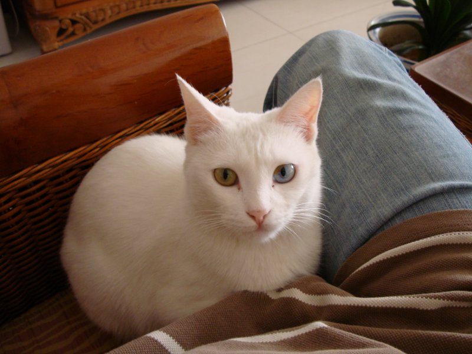
后来干脆不睡了，起来看电视去了。
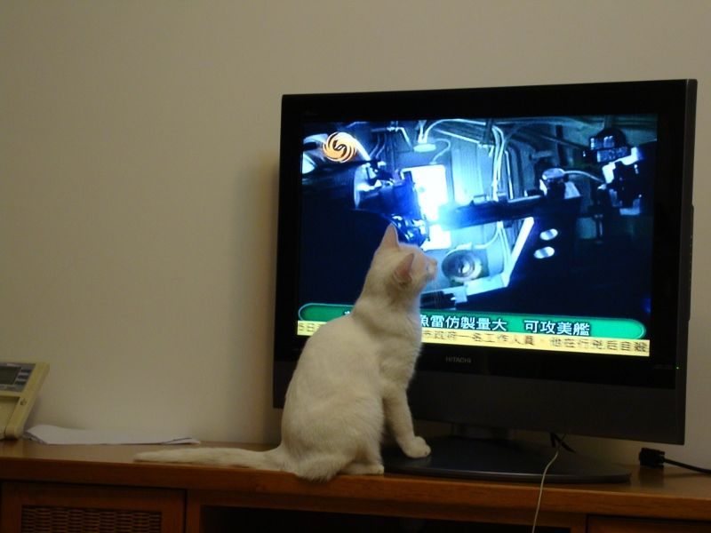
凤凰台的军事观察
Friday, 20 March 2009
>
My Group Leader and My Group
拷问我们民族灵魂的一部作品。庄严而戏谑，圣洁而肮脏；充斥着神性和不羁。和我们的民族一样，磕磕绊绊的勇往直前。
真正伟大的作品。莎士比亚也很难拿出东西来跟兰小龙的这个比；不是莎士比亚的才能不及兰小龙，而是他背后的民族，不及我们这个民族美丽，不及我们这个民族丑陋，不及我们民族勇敢，不及我们民族懦弱——不及我们民族这么不可理喻，这么充满了神性，这么卑贱。中华民族是世界上最扯淡的民族但是个实体，就像我们脚下的大地一样，是个实体，说什么都不要紧，都无关紧要，这个实体在那里，千年万年都是个实体。
这个伟大的时代！泥沙齐下，鱼龙混杂；肮脏的空气里没有干净的人心。这个时代伟大得扯淡；生机勃勃不可遏制，饿狗一样扑向死亡，参透生死，也参透是非；活的力量！
当然这个伟大的作品真是无愧于这个伟大的时代，也是我们这个伟大的民族能吼出来的像样的一声。你知道烈士和小丑总是走在同一条道路上，他们相伴相生，如影随形，他们的灵魂有时还串门，别说别人分不清，自己都分不清。有什么要紧呢？有什么关系呢？我们就这么糊了八突地过吧，我们这个让人恨的发狂，也爱的发狂的民族。
Tuesday, 10 March 2009
So Difficult to be a Human's Cat
给人作猫可真不容易！
我的小猫，从上周五吐到了这周一，喝口水都吐。上周末两天，我Transfer到了农大动物医院，早八点半准时到，晚上11点回；一直当小猫输水的陪护。周一输水到晚上10点半。它吐它的水我输我的水，各做各的。一直输到今天她不吐为止。今天早上它服了输，一大早贱贱地起来要东西吃。切，老子就是不给；控到晚上我回来，才给了十几粒猫粮，几口鱿鱼丝，小半碗水。它吃了玩了会儿，睡了会儿；现在在我腿边睡呢。
我还以为是我劝它吃的那几滴啤酒伤了她的胃。我真不知道它不能喝。但检查的结果显然不支持这个假设。照的片子显示它胃好着呢。医生还怀疑它是糖尿病，但尿检结果不支持这个假设。它尿虽然黄的很，但没有一丝葡萄糖。血常规检查一切正常；生化检查显示一些指标普遍偏高；因此医生认为它吐是肝肾功能下降所致。而它那么小，肝肾功能照理不该下降。但的确下降了。于是就在输液的时候加了促进肝细胞再生的药，还有消炎的药。
糖尿病真可怕。一起输液的猫里，就有一只是糖尿病，叫黑黑。黑黑是小名，它大名叫李白，因为它外边是黑的，但里面是白的，女主人姓李，就随了。李白的血糖可是忽高忽低；血糖太高就血糖中毒，血糖低就两爪一摊当场晕菜；这时候要拿注射器注点葡萄糖进去；忽悠悠才醒过来。也不知李白能不能喝，也许能吧，不然空叫这名字了。李白在家，还有一个小姨，一个老妈。老妈有点一根筋，见面就抽，李白不敢还手；跟小姨还敢动动手。小姨也护着李白，意思是姐行了，孩子不小了，再打就没劲了。
我不喜欢李白。傻傻的一只猫简称傻猫。看不出可爱。但它主人喜欢。连着输了一周的水了，好几次差点过去。我们这么做符合人性，但违反天性。按老天爷的意思，老得病的动物，抗不住就死了算了；不生病基因好的留下来。自然选择嘛。但人把自己对生命的留恋，应用到了宠物身上。赖着不死，无聊得很。我想老天总有一天不忙的时候，会管管这事，谁啊这么不懂事，别人都死就你不死。
农大动物医院，中国最好的动物医院。医生本着科学的态度，违着老天的意，给不会说话的宠物治病。慎独。没可能揭穿的时候，还那么有良心；这时的良心才是真的良。
Tuesday, 3 March 2009
>
About Two
让二来得更猛烈些吧:-)
有一本书，中文名叫《白鲸》（Moby Dick），美国立国以来开山的一部。作者的写法就二的很，野蛮而疯狂，给美语做压力测试吧。当然里面的人物也比着二。“我”还好些，食人族，大副二副，船长基本就是个坚强的疯子。当然最二的还是那头抹香鲸了，Moby Dick。
《易经》里有句话：见群龙无首，吉。如果每个人都很二，那是很好的兆头啊。这是我的理解了：）
Monday, 19 January 2009
>
To Lev Tolstoy
他让安德烈离开之前，与娜塔莎重逢。他让娜塔莎得到宽恕，让比埃尔爱上娜塔莎。他给了善良的、相爱的人许多的女儿，还有至少一个儿子。他还没忘记即使相爱，也不免争吵；但他还会让他们相拥着流下热泪。他让老罗斯托夫破产之前，去见了上帝，并让他的一个儿子，重整家业。在结尾告别的时候，他把他爱的人都安排的好好的：有的生儿育女，有的侍奉上帝；而他不喜欢的，写到结尾就写丢了：）不像别的作者，拿好人的命，换取作品的伟大。
老爷子啊，人类的良心。
是的，在善恶的角力中
爱的繁衍与生殖
比死亡的戕残更古老、
更勇武百倍！
——《慈航》，昌耀
Sunday, 11 January 2009
>
My Vine
我的葡萄树结了六串葡萄，绿色的。也是在2009年刚开始的那几天才发现的。
可不知是吉是凶。
2008年奥运前后，我的葡萄树攀着丑陋的架子，一个劲儿地长。每得一块金牌我就去问问它，到底打算给我结多少葡萄，结在哪一支上。它没有回答。它忙着呢。
我是春天栽上的。那天夜里我去田地里挖了很多土。那片田里在施工，土翻得很蓬松。挖的土只用了一半。另一半放到储藏室了。
都深秋了它也没结葡萄的意思。气温下降到0度以下，我把它从外阳台移到了内阳台。它继续把叶子落光，无动于衷地靠在角上。我还以为它今年的事做完了呢。
有点后悔催它太紧。不结也没关系的，我可以买着吃。如果为了这6串新结的葡萄，送了它的命，那可就是在没法吃了。
于是在这新年之后，春节之前，我再三叮嘱我的葡萄树，一定不要太劳累，要不然我不吃。
Monday, 22 December 2008
Moby Dick
一斧头一斧头当场就劈出来这么一个野蛮而厚重的家伙。边劈边聊，跟砍柴的似的；烟没断过；有时候咳嗽儿；地上随意扔着大大小小碎料，没人收拾，管他呢。
开始突突突冒气没活动开。活动开之后那叫一个跑的欢。西伯利亚雪原上干净的烟。单纯而残暴。
这是怎样一部作品啊。看了之后直觉的自己活的琐碎不真实。食人生番的友情，大副的爱家，二副的爱自己，三副的勇敢，船长的无可救药的坚定。死是任谁谁都无可逃脱的命。那就迎着上去好了。
野蛮而厚重的东西在国内很少看到。中国人大多精于技巧。做出东西有大气的但很少野蛮的。也许这是个审美的问题吧。文明古国，自汉吧，就走向精雕细刻的路——看看我们的菜吧，还有国粹。粗砺一点别人都以为你没下够功夫。当然啦，也没多少拿得动开山的斧头的。沉香也就一下两下，把山劈开救出妈妈就哭做一团了。谁能把山给劈出来？从一个混沌一团的地方？剑在这比较流行，一百单八式舞的密不透风，水泼不进；一飘身就不见了；诸般灵异说说都觉得臊得慌。就描吧，单薄的灵魂只配贴在纸上。
Thursday, 4 December 2008
>
Archimedes
阿基米德说，给我一支点，我就可以撬起地球。
也不知阿基米德是否真的说过这样的话。由于时空的关系，一直找不到机会见到他。阿基米德也没机会见到牛顿。牛顿发现万有引力定律的时候，想必也想找阿基米德聊聊；但人早不在了。
阿基米德要撬起地球的话，要好好考虑几件事。
其一，支点放在哪的问题。支点不能放在地球上，但又不能离地球太远。支点离地球太远，杠杆就会更长。杠杆太长就得考虑今生如何走到杠杆的另一端的问题。不能超光速的。爱因斯坦也不是吃干饭的。不妨考虑把支点放到月球上。月球离地球最近，而且月球也不在地球上。唯一的问题是月球可能没那么稳定，未必承受得了太大的力。
其二，杠杆的长度。假设阿基米德体重100公斤，有100公斤的力气。地球的质量是\( 6.0×10^{21} \)公斤。支点选在月亮，月亮离地球\(3.8×10^5\)公里。根据杠杆原理，那杠杆长度就得有\(2 ×10^{24} \)公里。光速是 \(3×10^5\)公里每秒。阿基米德爬过去最少需要\(6.7×10^{18}\)秒，也就是\(2×10^{11}\)年。目前地球的年龄大约46亿年（\(4.6×10^9\)）。月球寿命大约\(4.3×10^9\)年。等阿基米德的幽魂爬到杠杆的另一端，月亮和地球的幽魂又在哪里呢？
其三，阿基米德的游魂站在哪里撬呢？这杠杆太长了，有\(2×10^{11}\)光年长。银河系的直径大约10万光年。真是零头都不够啊。据说宇宙也就260亿（\(2.6×10^{10}\)）光年吧。可怜的阿基米德，伟大的物理学家，的幽魂，却只能置身宇宙之外，努力地撬遥远的一个宇宙里的，也许最不出名的一颗小小的蓝色星球，的幽魂。
Wednesday, 3 December 2008
>
The So Called Elder
比较喜欢的东西，最好要有个内核，精神上的。不喜欢像于丹那样的，东一下西一下，道理满天飞，但缺少精神实质。平常的谈话也是如此。经历过文革的那代人，说的话本质上跟打嗝差不多，基本的卫生标准都达不到，更别说精神实质了。
-- 原来挺崇拜经历文革的人，后来才发觉，绝大部分经历文革的人，都已经磨得没点脾气了，包括那些大家们。
不止是没脾气，是没自我，而且一厢情愿地认为， 别人也应该没自我。
读《静静的顿河》，发现俄国人是比较混的。可这种混蛋劲儿，比没自我，也可爱多了。人俄国人打的饱嗝，透着酒气；冬天里闻到，恶心归恶心，也还知道对面的人是活生生的。不像我们，形体上的温驯，遮掩精神上的野蛮。
Saturday, 22 November 2008
The Meaning of Love
在我上大学的时候，有一个晚上，十一点多了，我下了晚自习，正在往宿舍走的路上。天黑的厉害，蛇样的闪电预告着一场雷雨。我在路上走这时候一个女生拦住了我。
——同学，能不能帮一个忙？
很漂亮的一个女生。我在校办晚会上见过她。南方的女孩。低着头。仰脸的时候眼睛里有一层雾。
——什么事？
她指了指路边的一团黑东西：
——能不能帮我把他送到宿舍？
我才注意到路边的阴影里，还躺着一个人。我那时候的帅那时候的人很难察觉。因此那时候很少有女生主动找我谈话。我那时候又太帅，也不愿主动去找女生。因此我不假思索地答应了：
——可以的，但你必须告诉我他住在哪个宿舍。
他住在四楼。不能再高了，西西楼就那么高。体育系的师哥喝了啤酒，喜欢把酒瓶扔出窗外。于是把他们从四楼赶到一楼，这样别人受的伤会轻一些。四楼住的是文明点的，比如中文系或者历史系的学生。
文科的男生比死猪都沉。尤其是我背上这一个喝多的。开始我拖着他，一个闪电下来我怀疑他死了；不过试试鼻息还在。于是我又把他扔到了背上。他女朋友拉了拉发现挺结实，就撤了，剩下我们两个走向回家的路。
大粒的雨点打在他脸上。于是他醒了。他叫了几声一个女孩的名字没人答应。于是问我，
——你知道爱情的意义吗？
我忙活了一个晚上，目的是讨论一个东西的物理意义，还没讨论清楚，明天接着讨论。
——你甚至可以为她去死，
我想起他女朋友哀求的眼神。不愿意女的这样。能帮就帮啦。
——你也是为她而活；你知道她有多好吗？那么的迷人，像一头小鹿，
是的。食草动物才求人。小鹿求倒了一只理工科的驴。这头驴现在驮着一团文科的屎，臭气熏天，走在大雨中。他的话语低沉，有时呜咽，还伴着雷声；我的脸上淌着汗和雨。
——甜蜜、苦涩、更多的甜蜜、更苦涩；你也是为她而活
汗是咸的。可乐解渴。回去买一杯。也不知小卖部还有没有人。
——神魂颠倒，让人迷醉
应该喝的是啤酒，也就燕京吧。啤的没劲，但喝了凉快。
——多么好的，一个女人
多么壮的，一头驴啊。路上都是水，也不打滑。
我实在没力气把他背到四楼。到二楼的时候，把他放下，让他靠着墙站会儿，我好歇歇。他扶了扶只有一个镜片的眼镜。我歇了会儿就把他架上去了。踹开门，把他扔在一个空床上。屋里有一把吉他，不知是不是他的。长发。于是我买我的可乐去了。太渴了。买了两杯。
我那时候是光头。梳子老丢，洗头也麻烦，干脆就不要了。我觉着挺好看的。女生看着老笑。物理实验室灯那么多，多我一个也不嫌多。
我终于讨论清楚了那个东西的物理意义。论证、计算占了十好几页，交给了材料物理老师。后来老师给我判错了。我问他原因，他说，
——有经验公式的，套用一下就可以了；
可现有的经验公式，误差在百分之百还多，太不准了，
——那没关系，实际测一下就可以了，何必算那么多？还有什么无谓的证明？
那一刻我发现我不适合做材料物理；这个学科太不严谨，经验的成分太多，还嘲笑我所钟爱的计算和论证。
在校园里也见到他们。有时笑得像两朵花，有时伤心的像两片雨。他的头发是长的还背着吉他，我的头发是没有的还背着书包。我已经开始嘲笑材料物理，醉心于理论物理。所有爱因斯坦说的都记在小本子上，忘记了就复习一下。爱因斯坦说，
——反复地做同一件事情，却期望得到不同的结果；这就叫精神错乱
有时候看到他们骑一辆自行车。男生背着吉他，长发飘飘。女生明显是食草动物，依偎着另一个食草动物。那另一个食草动物背了吉他像一只扫地的绵羊。他们明显忘记了那个夜晚。有时和他们面对面走过去，他也并不看我一眼。我和其他许多光头的理科男生一样，对他根本构不成威胁。我喝酒的次数很少。喝的话也不醉，越喝越高兴，脑门发亮，掏出小本子念，爱因斯坦说，
——我相信上帝不掷骰子
我相信文科男生都是骗子。文科女生都傻子，全上当了。理科女生更傻，还怨恨文科男生不骗自己个儿。霍金还没病的时候，作为舵手参加赛艇大赛，他女朋友在河边叫好都叫疯了。瞧瞧人那女生的什么境界。牛顿惨点，脾气太傲基本没女生踩。还有玻尔，也是酷的不得了，包括他的不善言辞以及口吃。杨振宁挺滑的，单独拿出一些时间把杜致礼拿下，也算是师生恋吧。后来人杨振宁拿了诺贝尔物理奖，政府觉得关着诺贝尔奖得主的岳父不合适，就把杜聿明提前放了。多大的造化。掏出小本复习一下，爱因斯坦说，
——我觉得最不合理的就是上缴个人所得税
我觉得最不合理的就是材料物理太依赖混蛋经验公式。脑子不进水总结不出误差百分之百的经验公式。我转向了更重视计算和论证的理论物理。于是进入了另一个世界，上了研。
那时候我留起了长发。喝酒。现在啤酒肚就是那时候落下的。很颓。导师问怎么了，我说失恋了。
我的确失恋了。但我不能确认我是否真的很痛苦。我只是觉得我应该很痛苦。还为这应该的痛苦留起了长发。一个繁星满天的晚上，科技楼停电了，也找不着蜡烛，于是就出来坐在楼前的台阶上，看星星。这时导师走过来，挨着我坐下，对我说，
——面对浩瀚的宇宙，我们个人的那点儿事，又算得了什么？
第二天我就把头发剃了。还是光头省事。梳子找不到也不用找了。头放在水龙头下冲一冲就可以了。洗发水厂家都恨死我了。很多年后去看导师，谈起这件事和他的那句话，他说他不能证实他是否说过这句话，但这句话的特征是他的体系。我确信我听到了这句话，但不确信这句话是来自外部的世界，还是来自我自己的内心；尤其是在没有得到完全承认之后。
也不知他们怎么样，很多年不见，也不记得他们的名字；文科的两个傻子。可谁没有傻过啊？无论长发的，还是光头的；无论背吉他的，还是背书包的。
后来我发现我背不动书包了。老爱老玻联手基本把理论给找补齐了。霍金虽然只有一根手指头能动换，但人脑子整天不闲着。大英帝国也支持他，有吃的有住的。我这吃的还凑合但住的就不灵了。想改善的话就得昧着心当骗子。我背了那个文科的男骗子之后烦死骗子了，见面恨不得掐死他们，自己是骗子就掐死自己。于是干脆把书包放下，背上了电脑包。
这些年也在一直讨论爱情的意义。当然有现成的经验公式可用，但经验公式也太不靠谱了。这误差太大不说，也没有什么根据。基本上就是瞎说一气，见一码记一码，一捆一捆那么撂着。很多数值根本就没有量纲，更别谈意义了。不过当我把自己的论证和计算交上去之后，换来了这么一批语：
——你就是犟！
可不是嘛。要知道我是一头驴子啊。驮过文科那坨屎，驮过书包，驮电脑包；驮房子。驮房子的驴就快退化为蜗牛了！于是就叫几声。嗯啊嗯啊~~别人听见了说，还真是头驴，听，正叫呢。算是挽回一点做驴的尊严吧：）很怀念文科那坨屎，是他让我真正理解了做驴的尊严；他臭气熏天但给了我很大的信心；这么长的一条路，天上打雷下大雨，黑漆漆的天没路灯，地上都是水；一路趟过来也不害怕，也没怎么打滑掉链子。
有时候也想起那头小鹿，哀求的眼光蒙着一层水气。于是就告诫自己要争气，别活得跟团屎似的，让自己的爱人一点办法都没有无可奈何还要去求别的人。
Saturday, 8 November 2008
在中镇(Middle Town)有我一个朋友，叫约翰。
中镇在大西洋边上。直通通趟过去，就到欧洲了。那里是富人的天堂，遍地豪宅和酒馆。也是夏季旅游的圣地。不过冬天由于太冷，很少人去。富人们大多不在，一座座城堡空着，几乎没有人。遍地的树叶也少人扫。
几年前的一个冬天我在那里干活。我从遥远的中国，来到这里，帮约翰他们对付一堆写得破破烂烂、时时出错的程序。收工之后，约翰就带我去酒吧喝酒。那的本地啤酒是新港风暴(Newport Storm)。青岛啤酒在那卖得也很好。有时中午也喝一杯。
约翰原来有一辆日本车，已经开了很久。
约翰说，他喜欢修理车，修理房子，修理女友，修理一切(fix car, fix house, fix girl friend, fix everything)。 女人没有自修理的能力，而且只有男人才能修理。
很喜欢这句话， 每每对人提起。
去年遇到了他。他发我新车的图片（还是一辆日本车）。 劝我也买一辆。 而且必须在今年。
我说我不是单身了。
——要么今年买，要么永远不买！
——不给买就天天喝酒，让她必须做一个选择。
:-)
这个混劲儿真是可爱!
有一天约翰劝我要一个孩子。他说，他不知道要一个孩子是不是一个明智的决定，但他发现，他周围所有的朋友，都因为有了孩子而更快乐。
于是我问，那你呢？为什么不要？
——我女朋友年纪大了，要孩子有危险；那就给她要一条狗吧！
很喜欢这种简简单单的快乐，而这种快乐离我渐渐的远；每想到这一节，就笑一笑:-)
我回来的时候约翰送了我一瓶红酒。中镇的酒又好又便宜，十几美元的就算顶好的了。我又拿着这瓶酒去看我的导师。我俩喝的正高兴的时候，见师母的眼睛里掠过几丝担忧的神色。于是我就劝导师少喝点。
——我没喝多啊，他说
——那你算算时间流逝的速度，或者说每秒有多少时光流过？
——One，但这个东西没有量纲，很难在物理中找到意义。
那是我导师最后一次喝酒。后来他的痛风越来越重了。不能喝酒，不能吃肉，不能吃豆制品。痛风很磨人。他在写一本量子力学的书，一直写一直写。我攒的那本书却先出了。他向我要了一本，说要看看。我给他书的时候心里很难受；他教我物理，我却在编程；他叫我沉静，我漂浮在空气的微尘里；他在痛风里写东西，我迷失在生活的洪流里。他看后说看不懂。我说那本来也是很空洞的东西，不是用来懂的。
又一天遇到约翰。他说他换了个出差多的工作，这样薪水会稍稍多些。
——那你女朋友是否高兴？
——她可以随便开我的新车了，没人跟她抢。
——那你呢？
——辛苦些。不过和西部人拼酒还真带劲！
北京的天空没有那么的蓝。有时是灰色的。有时甚至是暗红色的。有几根头发白了。岁月在我们的身心留下痕迹。想起约翰的眼睛，跟大西洋的天空一样的蓝；他出生是个孩子，50年了还是孩子，只有18岁那年假装苍老过。我出生是个孩子， 10岁就慢慢苍老了，只有18岁假装年轻过；之后就很快越过百年，见了周树人他们，跨千年去见庄子；胡子长得盘在腰上；眼睛慢慢变灰变红；忧忧扰扰假装洒脱像一个蛆虫。才发现约翰他们文明的高深了。
Sunday, 12 October 2008
正在读《庄子全译》。译注者张耿光，主要研究汉语的。其所加的注释大都是语言层面的。至于关乎思想的，评的很少。因此这是一本很好的书。
不知鲲在北冥好好的，怎么忽然要去南冥。北冥和南冥之间，想是没有水路相同的。要不然，鲲不会由鱼化为鸟的鹏。这是一个旅程，由北向南，有目的但并无理由的迁徙。人世间的每件事都有一个理由。但鲲鹏做的这件事，却是个例外。
于是背靠苍天，空气在天底下的生物之间流转；宇宙之大，不知有没有尽头；速度太快，以至于跟静止没有区别。
如果在北冥呆久了，就不妨化作鹏，飞到南冥看看。没有翅膀的请找庄子。庄子是使斧子的；个把小时就能砍一副，枯木头的。肯定是不结实的，因此要在北冥涨水的时候起飞；这样掉下来不至于头扎进泥里。
Sunday, 5 October 2008
无言的村庄，黄土埋没的村庄
坐落在圣人或盗贼出没的地方
黄帝还在村南的学堂朗朗读书；月亮下子綦
和他八个儿子坐在田埂上聊天，露水打在梱的发梢，明天
要去一趟燕国；孔丘在灯下复习功课，胡子都花白了
还是通不过，入学的考试
鲲在梦里
变成一只鸟，飞向南方的海
那里正生长着的狮陀之国
长成之后会飘向西方
惠子鼻尖上沾着白垩，庄周运斧如风
无用的树下，柳下跖呼啸而过，季在叹息；孔丘又将失去
一天的口粮：好多的仁义，才淘换得的
许由和尧，在人字形的天梯上，愈聊愈远
舜出现的时候， 许由早已不见
墨翟仰视
禹的小腿，漆黑而无毛；水退了，启也已长大
武王的征伐，诸神的黄昏，映照着
远去的青牛
大鹏不记得自己曾经
是一条鱼；野马与浮云
天也苍苍
Saturday, 8 March 2008
还在她很小的时候，一天，妈妈带给她一只小猫眯
她们玩了一整天，捉迷藏，做游戏
天黑了
她想把小猫留在房间里，妈妈坚持小猫晚上应该呆在院子里
是夏天
她坚持了很久，妈妈还是把小猫放在了门外
刚关上门，就听到一声惨叫
小猫倒在血泊里，喉管被咬断
她什么也没说，走进自己的房间
妈妈也没说什么，走进自己的房间
Tuesday, 11 December 2007
学习本身也需要学习（Study itself also needs to be studied），而且学习本身的学习，还是一个永不停止的过程，永远也没有个完结。这也恰恰是学习自身学习的特点。
人一生下来就对周围进行探索。迈出一步之前假设落脚之处是平的、凹的、或凸的。如果假设不对，就修改自己的视觉识别代码和步行代码来适应更复杂的环境。这在本质上是测试的思想。当然测试也是一种探索，只是没有其他一些种类探索那样的盲目，是一种目的性比较强的探索。
测试驱动学习模式（Test Driven Study Pattern，TDSP）可以对测试驱动学习模式自身进行学习。测试驱动学习模式的关键之处就是对追根溯源、对所谓终极真理的追求强烈地说不。不然的话，就没办法使用测试驱动学习模式来学习测试驱动学习模式，就会陷入鸡生蛋、蛋生鸡的无限循环反复不能自拔。以下是测试驱动学习模式对鸡生蛋还是蛋生鸡问题的回答：
- 如果喜欢或需要吃蛋（鸡），而只有鸡（蛋）没有蛋（鸡），就养鸡生蛋（孵蛋成鸡）；
- 如果喜欢或需要吃蛋（鸡），并且蛋（鸡）刚好就有，就直接吃；
- 如果喜欢或需要吃蛋（鸡），而蛋（鸡）和鸡（蛋）都没有，那就到其他地方找找。
人不可能什么都喜欢也不可能什么都需要。测试驱动学习模式最适合对未知事物怀有浓烈兴趣且高度敬业的人，也比较适合兴趣和职业精神只占其一的人。但对那些对未知毫无兴趣、又不敬业的人，测试驱动学习模式束手无策。
保持饥饿，保持无知（Stay hungry，stay foolish）。整天打嗝的人即使面对珍馐美味，也毫无食欲，更不要指望其能使用测试驱动学习模式作为猎枪，在寒冷的户外猎取食物。
人都有吃饱的时候，但千万不要让垃圾阻塞肠胃。如何区别垃圾是测试驱动学习模式解决的最漂亮的问题。可以说，使用测试驱动学习模式获得的知识，根本就没有垃圾。既然测试驱动学习模式自身也是由测试驱动学习模式得到，因此可以证明测试驱动学习模式不是垃圾。
测试驱动学习模式典型的思考方式：
- 本人需要的是什么？
- 其所有的是什么？
- 如何使用其所有的来满足本人所需要的？
前两个问题是What类型，后一个问题是How类型的；测试驱动学习模式里没有Why 类型的问题，比如没有类似“为什么它的所有满足不了我的需要”这样的问题。
测试驱动学习模式不提倡问以下问题：
- 某某的本质到底是什么
比如测试驱动学习模式的本质到底是什么？ - 所有以为什么开头的问题。
拒绝问为什么的问题会不会导致不求甚解？是的，会导致。但不求甚解在测试驱动学习模式里是难得的好习惯。不求甚解的对象是所有不为本人所需要的。当然也有一些饱食终日的人什么都不需要。这也是测试驱动学习模式对此类人毫无效果的原因。
测试驱动学习模式提倡有清晰的、可验证的观点。哪怕事后证明是错误的观点也比含糊不清要好。有了观点之后马上着手去验证，去实践中测试这个观点。如果经测试这个观点是对的，那可以把这个观点收藏起来；否则可以修正之前的观点，进一步验证；如此循环。
大量的、清晰而且可验证的观点是一笔财富，存的越多测试驱动学习者就越富有。而不清晰不可验证的观点对学习者来说恰恰是类似债务的东西，越多越贫穷；将来要栽的跟头也就越多。
测试驱动学习模式不相信“谦虚使人进步，骄傲使人落后”，而是认为无论骄傲还是谦虚都可以使人进步，只要这人是真诚的。真诚的人更容易提出清晰而可验证的观点，即使一些观点经过验证并不正确，但仍然有益；而虚伪的人，比如一些政治家，提出含糊而不可验证的观点，不到翁一样摇摇摆摆，根本不是为了获取知识，因此也获取不到真正的知识。
如果测试驱动学习者发现自己有很多含糊而不可验证的观点，怎么办？可以肯定的是能有此发现是天大的好事，因为很多人还不知道自己的观点含糊不可验证呢。剩下的任务就简单了，只需使这些观点其变得清晰并可验证就可以了。
一个观点是否含糊也许难于察觉，但其是否可以验证（或容易验证）却是非常容易验证的问题。因此试图验证一个观点是否正确是测试驱动学习模式的第一步，也就是最关键的一步。观点是否正确并不重要，重要的是该观点是否容易验证。
总结一下测试驱动学习模式所强调的：
- 敏捷而直接
先找到学习对象一个最简单的使用方式，在这个最简单使用方式之下用测试的方法体会其功能及使用。 - 把握整体
面向学习对象的主体思想，避免迷失于具体的细节。 - 迅速应用于实践
测试的特点就是实践性强，可以同时从成功和失败中学习，学到的也不仅仅是经验而是规律性的东西。
需要注意的是以上三条总结是否正确需要进一步使用测试驱动学习模式来验证。甚至这三条总结的观点是否清晰可验证都需要读者进一步验证。
测试驱动学习模式有以下好处：
- 学习周期短见效快
即使只是花了很少的时间，学会了很少的一部分知识，也可以很快投入使用。甚至用于用于学习的测试过程经过简单整理，也可以投入实践中进行使用。 - 直指学习对象的可执行核心
直接解决的学习对象的可执行部分是什么，怎么用的问题。避免陷入其不可执行部分的细节争论。 - 拿测试说话沟通容易
测试也能说话，而且测试是注重实践的人之间最精确的语言。使用测试进行交流会避免很多不必要的误解。
需要注意的是这三条好处是否正确需要进一步使用测试驱动学习模式来验证。甚至三条好处的观点是否清晰可验证都需要读者进一步验证。
测试驱动的学习模式特别适合街边的程序员（Programmers on the street）来使用。街边的程序员的称谓来自高德纳（Donald Ervin Knuth），并非贬义，泛指以编程为生计的技术人员。世界上大部分程序员都是街边的程序员。象牙塔里的程序员寥寥无几，其中高德纳就是一个。
街边的程序员还可以分为两类，一类是街右边的程序员，一类是街左边的程序员。街右边的走的路比街左边的多，街左边的比街右边的看的多。测试驱动学习模式认为两边的都应该往中间靠靠。埋头走路的也应该抬头看看，站在街边观看的也应该走走。学习的道路上没有机动车，撞不死；跌倒了爬起来拍拍土也就没事了；相互碰碰身体更强壮，没理由老绕着走。
象牙塔里到底有没有程序员？这个问题并不是很清晰可验证，可以在这个问题变得清晰可验证之前，对其不加理会。因此街边的程序员可以暂时地走在测试驱动学习模式的道路上。
Wednesday, 22 August 2007
Q1:
不过，这个原文“南海之帝为儵 北海之帝为忽，中央之帝为浑沌。儵与忽时相与遇于浑沌之地，浑沌待之甚善。儵与忽谋报浑沌之德，曰：人皆有七窍以视听食息此独无有，尝试凿之。日凿一窍，七日而浑沌死。”这3帝的关系？
按物理学的观点,不可能有三帝的。 混沌包括所有，相当于大爆炸之前的奇点，哪有另外两帝？倏忽是时间上的概念 对时刻t，倏是t+，忽是t-，类似数学上的无穷小量，一个正，一个负。我不喜欢称呼帝什么的，因为如果有了帝, 那肯定有臣民, 说明世界已经创立了, 还凿什么劲啊?
Q2:
那这么说，这俩就不能相遇了。那怎么遇上的？
正负无穷小可以相遇于奇点，过了奇点他们就永远不能相遇。
Q3:
浑沌待之甚善？这个怎么待阿
那只是个说法就是说，时间产生之初混沌并没有刻意遏制这就叫待之甚善。混沌挺混的，他不混阿没想到时间一动它就死了。这个神话绝对是远古的，透着远古的野气。
Q4:
是不是说山海经和庄子里面，说的东西是一个，但是有不同的描述？ (http://hi.baidu.com/shym/blog/item/19a0c0889e616994a5c27220.html)
庄子基本不靠谱，庄子是偏人文的, 没老子偏理性，庄子的举例往往是说明人文上的事，很少纯理性的思辩
Q5:
有一个硬伤就是耶和华很难融入混沌的神话体系，混沌浑然天成，很难回答耶和华从哪里来的问题。
Q6:
那你更难回答倏忽怎么碰到一起，还去凿浑沌。
倏忽来自混沌，零时刻的时候倏忽肯定在一起，因为没有别的时刻可去。
Q7:
那混沌死的时候，它俩居然没挂
挂啦，时间的无穷小量，晚了了一点点。利用这一点点时间，他们两个聊了聊混沌的遗言，就永别了。我觉得这个时间还说的过去。他俩不聊的话很难把中国文化带出来。老子和孔子那时肯定也不在。
Q8:
因为一切都是从混沌产生的？所以中国文化也要从这里产生？
西方文化也是来自混沌。西方文化以我为中心，可以总结为I，I就是我。
Q9:
为什么要把耶和华加进去呢？
从物理上来讲，世界由上帝所创，实在是难以理解。而且顺序也不太对，第一个出来的是光子，还好理解，之后，水，空气就出来了，就讲不通了。水要很久以后才可能有，因为世界初创，还在核反应呢，怎么可能有水。
Q10:
倏忽怎么出来的？
倏忽是时间的概念，相当于数学上的无穷小量。无穷小量的定义是逼近式的，可以用这个数学思想来思考倏忽的由来。次从数学上来讲，倏忽揭示的是时间 的流动特性。
Tuesday, 21 August 2007
宇宙里的第一个神，名字叫混沌。混沌这个神，据山海经的说法，是火红的，没有五官七窍，混沌一团。那时候还没有时间，不能问那个时刻之前的事。和绝对温度相似，降到了绝对零度，什么都不动了，万物静止。时间也是如此，绝对时间为零的时候，没有以前。混沌基本生活在那个时候。
尽管绝对时间为零，山海经照样说故事。山海经基本不屌爱因斯坦那一套，照样说他的故事。有时候山海经甚至不屌苏格拉底那一套，基本逻辑也不讲，因此故事有穿帮的时候。这也是山海经非常可爱的地方。
混沌那时候不痛苦，也不快乐，不恼怒，不欣喜。混沌对人类所有的情感说不，因为她没有五官七窍，不感觉，也不表达。她当然对性别说不，因为当时就她一个，阴阳未分，说男说女都没所谓，也无意义。这种人如若放在当代真酷死了，李宇春都比不上。混沌所在的那个时候，宇宙创生只是个打算，还没有付诸行动。混沌无所不包，无所不有；除了她自己，什么都没有，没有光，这也是她没有眼睛的原因。王小波看到混沌一定会说，穷光蛋，没文化。但王小波根本看不到混沌。混沌也没耳朵听不到王小波的话。混沌是挺混的，但找不到其他的神打架，当然她也不找。
这时候出现了两个精灵，一个叫倏，一个叫忽。之所以是两个，是因为他们要进行一场对话。倏、忽都属于混沌，不是独立的个体，不然的话，混沌就不混沌了，违反了混沌的性质。倏忽对话的时候，耶和华上帝心里也在盘算，说要不要创个世界呢？这是一个问题。作为精灵，倏忽的籍贯是中国，他们的思想浸润着百善孝为先的观念。首先倏忽认定混沌是他们的父母，至于是父还是母就难讲了。他们曾经问过混沌，但混沌没有耳朵自然听不见，即使听见了没有嘴巴也说不出。倏说，咱爸妈太可怜了，没有七窍，比聋子和瞎子和哑巴还惨。倏说，那我们把她把七窍凿出来吧，让她也能享受这美丽的黑黑的世界。倏忽说到这里的时候，耶和华也拿定了主意。
于是倏忽动工了。先凿的是眼睛。耶和华上帝说，光是好的。这时候混沌的第一只眼睛被倏忽DIY出来了，一束光从混沌的眼睛射出。于是就有了光。从此有早晨，有夜晚。这是第一日。
倏忽开始凿鼻孔。耶和华说，空气是好的。这时候第一个鼻孔通了，里面流出了好多好的水，水流的不那么猛地时候，开始喷气。耶和华说，要分水为上下。倏忽听到了但什么也没有做。混沌还根本听不见。但水就真的在下面，气在上面了。这就是耶和华神奇的地方，他早就明白引力是怎么回事了。混沌边喷气边流鼻涕。这是第二日。
到了第三天，混沌的鼻涕流的到处都是。耶和华说，天下的水要聚在一处，使旱地露出来。倏忽和耶和华也不怎么熟，基本不怎么认识。倏忽心想你谁啊，要这要那，谁欠你的啊，就埋头凿混沌的耳孔。第一个耳孔凿出来的时候水也流到了低洼处，形成了海。耶和华还看到混沌刚刚挖出的耳屎，很象他理想中的植物，个从其类，就说，这是好的。他们三个都收工了。这是第三日。
第四天继续凿。倏忽发现不怎么对称，单边一个太难看了。就开始凿第二个眼睛。第二只眼睛还没全凿好的时候，耶和华发现第二个比第一个小，就叫第一个为大光，第二个为小光。都是好的。他就回家洗洗睡了。倏忽接着凿。眼睛是精细活，容不得半点马虎，加班也在所不惜。这是第四日。
第五日接着凿耳朵，没那么多鼻涕流出，但还在流。倏说，爸妈不是感冒了吧？忽说，流点鼻涕没关系，会好的。耶和华也说，都是好的。这是第五日。
第六天耶和华很疲倦了，刚出来溜达了一会，就累了。回去休息。梦见理想中的生物，个从其类；都是好的，耶和华在梦里说。倏忽加紧凿耳孔，挖出了更多的耳屎。倏忽说爸妈的耳屎多少年不掏了？那得多堵得慌啊，弄不好还会失聪。他们哪知道混沌很痛苦。混沌以前没痛苦过，很不熟悉这种感觉，开始还觉得很新奇；过了几天后觉得简直太痛苦了。她眨眼睛吸鼻子，倏忽都浑然不觉。混沌心想这两个龟儿子，比老子混沌还混沌。这是第六日。
第七日耶和华病了，浑身无力，不想出工了。于是他把这一天定为休息日，又叫礼拜日，又叫星期天。这一天只许休息。但倏忽不遵守这个。倏忽说，敢情不是你的父母，你的父母没有嘴巴，你休息的安心吗？耶和华昏昏沉沉，根本没有精力再争辩，就由着他们去。其实就算耶和华没病，真打起来，结果怎么样都难说，人兄弟是两个，手里还拿着凿子和锤子；再说还有混沌在后面镇着呢。倏忽继续帮混沌凿嘴巴。这一天快过去的时候，按人类的说法，是那个夕阳惨淡的黄昏，混沌的嘴巴凿好了。混沌沉默了不知多少亿万都不止的时间，转眼也不过倏忽一瞬，当有了嘴，会说些什么沉默中不能说的话？混沌此时，张了张嘴，这是这张嘴第一次使用，也是最后一次，说，I——，就死去了。这唯一的一个字，混沌的临终遗言，倏忽听到的还是不一样的。倏听到的是爱。忽听到的是唉。耶和华在梦中听到的是I。倏忽是中国人，对英格丽西不敏感。倏说，爸妈最后的遗言是爱，我们懂得爱吗？我们爱了吗？我们被爱了吧？他陷入了思考。忽说，不是爱，而是唉，一声叹息，爸妈都觉得顶没劲，才死去的。他们没有争论，因为他们好像离得很近，实际却很远，他们的距离在时间上。他们是时间点上的来和去，彼此相守，彼此相离。他们也死了，死在自己的故国——中国。他们也可以说是永生，长存在自己的故国——中国。每时每刻，他们一个说爱，一个说唉。也有人跟这他们说，比如孔子跟着倏说爱，老子跟着忽说唉。不过大部分人都是两者都说的。他们在爱和唉之间摇摆，因此丧失了自我。耶和华记住了I，并将这个字传给了他的子民。耶和华的子民在西方繁衍生息。倏忽的子民在东方。个从其类，用耶和华的口头禅说，都是好的；用孔子的话说，是，不亦悦乎？老子在他的专著道德经里，讲述了这个过程：一生二，二生三，三生万物。一、二、三简单的数字，包含多少神人的血泪。
Tuesday, 21 August 2007
一个是黑色的，一个是白色的。每一句话他们都仔细读过并相互讨论，他们肯定理解键入的每一句话，不管这句话是用汉语、英语、Java、C、Ruby、Perl还是 Python写成，他们全明白。他们只是不怎么发言。他们沉默的时候并不代表他们没有表达。嘈杂的时候他们也在忙碌，动作很轻很轻，很不容易察觉。沉静的黑夜里，能听到他们寂静的呼吸，一声是黑的，一声是白的。他们沉静在乌盆里。雨夜，细细的雨；他们也在倾听。每一个逗号句号，每一个分支判断，还有野蛮的退出。他们在倾听。有时候小青蛙也叫一下。他们也听到，就把两个括号轻轻抖一下，有时候出来一颗豆子，有时候出来一颗谷子，有时候什么也出不来，就碰一下，发出啵的声音。
Thursday, 26 July 2007
我们是在工作中认识的。没见过面，只是在线上聊一聊。他比我大得多。我的一个东西要发在他那里，流程复杂，慢慢也熟了。我做技术，看到流程复杂一点，就快晕掉。他帮我挡着，提醒我该做这个该做那个；帮我看文档，一点一点的看。我以为这是他的工作，应该如此。很多时候我在流程上，犯技术人员的懒。我不知他病的那么重。后来他说你抓点紧，尽快发出来，因为周末他可能去医院，如果器官能匹配，他大约要在医院呆三、四个月才能出来。我才知道他的病有多重。到了周一他还在线上。问他手术的情况。他说这个器官不很理想。要等下一个。他说的很轻很淡，我也没有深问。我劝他多休息，少点工作。他说他按医生说的做就是了，保持好的心情，好的心态就可以了。没想到这么长的时间了，有一个多月，我还看到他在线上。我知道他还没有得到器官。我不知他要什么器官。他的岁数，可以做我的父亲。他对我也像对小孩。我问他器官的要求，他说必须是有一个将死的人，而且这个器官还和他不能有排斥。他应该是华人，在遥远的异国，我猜想很难找到正好合适的器官。他就这么的等。乐观的让人心碎。
Monday, 18 June 2007
锁麟囊是讲金钱观的。春秋亭外风雨暴，何处悲声破寂寥。慑人心魄。一代京剧圣手翁偶虹的作品。“偶虹偶虹，红起红收”。翁先生早岁编“红莲寺”，四十年后编“红灯记”收手。翁先生最珍视的是“鸳鸯泪”，解放后改名为“周仁献嫂”，也许是迫于“革命”的需要。没有看过“周仁献嫂”。从剧情梗概看，是关于“义”的。
一霎时把前情俱已味尽，
参透了酸辛处泪湿衣襟，
我只道铁富贵一生享定，
又谁知祸福事顷刻分明。
想当年我也曾撒娇使性，
到如今只落得旧衣破裙，
这也是老天爷一番教训，
他教我收余恨，免娇嗔，且自新，改性情，
休恋逝水，振作精神，早悟兰因。
列一个wiki上的生平：
翁偶虹（1908年~1994年）中国剧作家，北京人，原名翁麟声，笔名偶虹。 1934年于中华戏曲专科学校任编剧和导演。1949年以后在中国京剧院任编剧。 1974年退休。代表作有《锁麟囊》、《将相和》、《响马传》、《大闹天宫》、《李逵探母》、《红灯记》等。专著《翁偶虹戏曲论文集》、《翁偶虹编剧生涯》、《翁偶虹剧作选》。
Monday, 18 June 2007
春闺梦反战的一个戏。古人里最怜惜老百姓的莫过杜甫。春闺梦唱的是老杜的心里话。 新婚别+兵车行。历史朝代放到了汉朝。实际说的是民国军阀乱打那一阵，老百姓都烦死了。啥都不为就为个活命。这些都是程砚秋想表达的。
戏里有非常美的身段，大多取自昆曲的游园惊梦。游园惊梦谈生死。战争涉生死。老杜河南人，字里行间透着河南烩面味儿。
附兵车行：
车辚辚，马萧萧，行人弓箭各在腰。
耶娘妻子走相送，尘埃不见咸阳桥。
牵衣顿足拦道哭，哭声直上干云霄！
道旁过者问行人，行人但云点行频。
或从十五北防河，便至四十西营田。
去时里正与裹头，归来头白还戍边！
边亭流血成海水，武皇开边意未已。
君不闻，汉家山东二百州，千村万落生荆杞！
纵有健妇把锄犁，禾生陇亩无东西。
况复秦兵耐苦战，被驱不异犬与鸡。
长者虽有问，役夫敢申恨？
且如今年冬，未休关西卒。
县官急索租，租税从何出？
信知生男恶，反是生女好。
生女犹得嫁比邻，生男埋没随百草！
君不见，青海头，古来白骨无人收。
新鬼烦冤旧鬼哭，天阴雨湿声啾啾！
附新婚别：
兔丝附蓬麻， 引蔓故不长。
嫁女与征夫， 不如弃路旁。
结发为君妻， 席不暖君床。
暮婚晨告别， 无乃太匆忙！
君行虽不远， 守边赴河阳。
妾身未分明， 何以拜姑嫜？
父母养我时， 日夜令我藏。
生女有所归， 鸡狗亦得将。
君今往死地， 沉痛迫中肠。
誓欲随君去， 形势反苍黄。
勿为新婚念， 努力事戎行！
妇人在军中， 兵气恐不扬。
自嗟贫家女， 久致罗襦裳。
罗襦不复施， 对君洗红妆。
仰视百鸟飞， 大小必双翔。
人事多错迕， 与君永相望！
春闺梦的名字取自陈陶诗“可怜无定河边骨,犹是春闺梦里人”。
Sunday, 17 June 2007
李陵碑，呀呀呸。李陵是汉朝的大将，投降了匈奴。汉武帝要杀他全家。司马迁说，李陵投降不对，但在当时的情境下，可以宽恕，不必杀他全家。汉武帝不听，还宫了司马迁。司马迁就去写史记去了。之后苏武出使匈奴，匈奴劝降不成，就留苏武牧羊。苏武在匈奴期间，李陵常和他聊天。苏武最终返回了汉邦。王朔说，李陵当时被围在荒山上，弹尽粮绝，三千人眼看要饿死，这时候匈奴来劝降，李陵开了投降的条件，第一就是不许杀害我的将士，让他们安全回去；还有不正面和故邦为敌等。匈奴都答应了。把那三千人放回去了。司马迁记载最后只有几百人回去。也许其他人不愿回去，也许饿死了。但司马迁说可以宽恕的话，牵涉非常宏大的主题。当很多人的生命和忠的思想有冲突，如何选择？李陵做出了他的选择。司马迁基本认可这种选择。杨继业不认可。 杨继业的儿子要么死了，要么下落不明；为宋王几乎付出了一切；也面临饿死荒山的命运。他唯一的想法也许是青史留名。看到李陵碑，唯一的希望也破灭了。他选择了自杀。死之前有很多的抱怨。他碰死在李陵碑上。死之后仰面慢慢倒下。观众鼓掌。这幕戏就结束了。
12/19/21 Sunday 12AM正经TWR的论调, 于丹的风格, 中国最不缺的就是这个, 相当于俗话说吧.
这种道理容易讲嘛, 调查研究也不用. 卢梭有一本书, 爱米尔, 也叫论教育, 三本, 讲一个小孩爱弥尔从0岁到成人的教育, 可以想见写着有多难, 多么不讨巧. 人都讨论天堂啊, 罪恶啊这些呢. 谁说这个? 也没那么风雅. 但花几年写出来怎么也是个物件. 哪像这些人. 描眉似的. 本质的问题根本不碰, 也实际没能力碰. 碰了谁也都不高兴. 就是描描眉, 当然人也爱看. 因为描眉嘛, 也没什么害处. 真正的好书是看了让人汗颜的. 反思. 心想我怎么这样? 比如爱弥尔. 推荐看. 没小孩也没关系.
看第一卷就好了, 第一卷管到上小学呢, 从妈妈计划怀孕开始讲的.
中国的所谓哲学家, 不喜欢讨论具体的事, 觉得好像平常的事儿不高深, 一谈就到老, 庄那了.
-- 大家的思路都是从经典中找理由，这样看起来比较靠铺. 其实就算老子也仔细观察了雌雄的交配, 舌头牙齿, 窗户和墙, 老子猛着呢.
雅斯贝尔斯(德国人)有本书, 大哲学家. 中国入选的有两位, 孔子和老子. 孔子属于思维范式的制定者, 而老子是思想的独创性.
评判东西的好坏就这两条:
- 是不是对前人做了归纳梳理, 或者指出前人的不足 ------ 孔子做的
- 是不是有独创性 ----老子做的.
如果两者都不是, 那就是扯淡了 :) 于丹两者都没做.
-- 啊？把事情平民化，应该也算一种梳理吧?
算, 历史上有这样的人, 比如阿西莫夫, 阿西莫夫没有创见, 也没有指出前人的不足, 但他有把事情平民化,通俗易懂的讲给大家, 比如阿西莫夫科学指南.
-- 机器人三定律不是他说的？
就科学领域说吧, 科幻领域他基本没有前人. 应该算创见
-- 那么我觉得描眉也应该算一种平民化吧 ：D, 只不过有的描的不好而已描到鼻子上了吧?
关键是于丹的思维方式不好, 补袜子的, 出来是百衲衣.
我估计她内心也不这么想, 也是这帮没文化的读者给逼的. 没办法, 只能这么写, 要不然人家长不屌. 家长觉得孩子喜欢上于丹, 那以后就好管了.
Thursday, 26 April 2007
在这个晚春的早上, 写一写cdrecord的故事, 也许对大家有些警示.
cdrecord, 主要用于刻盘, 刻CD, DVD.
这个软件有很长的历史, 作者是Jorg Schilling.
开始, 作者把cdrecord的CD刻录部分开源, 在GPL协议之下, 但DVD刻录的源码不在GPL下而是可以用于个人目的, 全免费. 但商业目的不行. 不久一些GPL的小战士就看出了矛盾, 因为DVD刻录部分和CD部分不可分. CD在GPL下按GPL, DVD也应该.
但Jorg这个傻子, 愣不承认这个逻辑:)
他人在德国, 还不承认美国的法律, 而且他所谓商业的应用应付费, 根本不提供任何的付费渠道写信问他他也没有, 他的电话也保密的紧, 别人给他钱他骂别人, 他说我不是奴隶, 你给我钱我就做工,用户有问题问他他骂别人傻瓜. 骂骂咧咧.
用户, 其他的程序员, 商业公司也离不开他这个东西
后来商业公司不管那么多了
直接在CDrecord上加个界面, 出来卖钱
也没见这个傻蛋告谁
大部分的商业刻录软件都基于cdrecord的源码
他也不查
继续在那骂人
GPL的年轻斗士们
觉得Jorge的行为侮辱了GPL
faint的不得了
跳着高的跟Jorg对骂
Jorg也跟着骂
不管不顾的
说妈的我这辈子也不去美国
你Y美国法律管不了我
我只服德国和欧盟的法律
就这么个人
混球似的
但那些自由软件的老人们
却深深理解Jorg的心 :-)
很早cdrecord就进了debian的release
进debian的发行版很不易的
比如mplayer到现在也没进去
每年申请人都不批准
不管你多好你代码不干净我就不要
GPL的小孩们要把Jorge开除出自由软件门
老人们就不干了
说小孩滚蛋
人Jorg刻光盘的时候, 你们这帮小孩还是液体呢
后来把Jorg灌醉了
德国人也挺好酒的
变了另一个项目, 好说歹说
说了些好话
http://www.cdrkit.org/
变 成了cdrkit.
管项目的挺靠谱的.
比Jorg平和多了.
那样还少得罪些人.
现在的linux用户牛多了.
用你的程序就跟多给作者脸似的.
也不管作者是否挨饿.
cdrkit是debian的那些老人开的.
这两年的事.
算cdrecord的一个正统.
cdrkit, like the programs from which it was derived, is distributed as free software under the terms of the GNU GPL version 2. (Note, this is not "version 2 or later" as you see in many software projects.) 括号里的很像Jorg的做派. 那么的较真儿. 孩子似的.
对bug的态度:
Cdrecord has even more options than ls.
There should be a recover option to make disks usable, that have been
written during a power failure.
文档写的象狗屎, 语法都不通有时候, 跟其他人也不怎么玩, 就在那傻坐着. 基本不懂法律. 还想让法律保护自己.
最近两天在cygwin下用了cdrecord, 根本也没有毛病, 很好用
- 呵呵，疯子就是牛
cdrecord -vv -dev=cd isoname
他不疯
在德国挺正常的
因为德国
基本就是地球的疯人院
地球的大脑
地球的大脑都在德国
- 我现在电脑的内存也是1.5G了。呵呵
足够了
空着也没啥用
我经常空着
- 我现在在自己机器上倒几百m的东西没啥问题：）
一般如果我发现我机器用了多于1G的内存
我就要想想我是不是没用脑子做事
因为我发现很多猪头电脑都用的挺恨的, 跑着无意义的程序;
很多cdrecord的变种, 一运行就说:
这是cdrecord的变种, 如果出错的话, 别去烦原作者,找我好了
Jorg就喜欢这样的
另一件事, 也反应出对bug的态度
The cause for the compilation problems is a bug in the Linux kernel include files. It is a bad idea to try to "fix" correct code instead of fixing the bugs.
After 2 years, the bug in the Linux kernel has been fixed in 2.6.8. Unfortunately Linux-2.6.8.1 started to break CD/DVD writing in suid root applications by breaking interfaces :-(
前因是在2.6.8.1上没法编译
于是一个就做了个patch
这样就可以编译过了.
但Jorg不同意这么做. 谁的bug谁fix. kernel怎么着? 中央有错也得改.
/*
* You are not allowed to modify or remove the following code.
* I am sorry that I am forced to do things like this, but defective
* versions of cdrecord cause a lot of work load to me and it seems
* to be impossible to otherwise convince SuSE to cooperate.
* As people contact me and bother me with the related problems,
* it is obvious that SuSE is violating subsection 6 in the preamble of
* the GPL.
*
* Note that although the SuSE test is effective only for SuSE, the
* intention to have non bastardized versions out is not limited
* to SuSE. It is bad to see that in special in the "Linux" business,
* companies prefer a model with many proprietary differing programs
* instead of cooperating with the program authors.
*/
这一段. 孩子似的, 乱写乱画. 感想都写进代码里. 当日记用. 其实找律师比较靠谱, 还能得到钱.
Jorg的粉丝可都是死硬派, 一个顶一个
I'll give you a fucking break alright, you prick.
Quoting you: "Jorg Schilling has not provided a very good program based on the lack of help you can find for it on the internet. You should do a better job."
My point was that your criticism of Jorg went too far. "You should do a better job"? Give ME a fucking break. You lost all hope of getting any help, especially from me you dickhead. . 这个shock56, 抢着要当Jorg 的粉丝, 但另一个粉丝TheKepper说, 瞧你那德行, 你丫不配之后shock56说了, 我俩的事你别瞎掺和. 人Jorg都同意我当粉丝了, 你干嘛拦着? TheKeeper说, 人Jorg太善了, 我就看不了你这鸡贼乱欺侮. 他俩对骂了许久. 那大约是2003年间的事.
Wednesday, 28 February 2007
Life is too Short for Manual Testing
对做手工测试而言, 生命太短.
对上面的论述的另一种说法是:
公理0: 手工测试是不敏捷的. 我们再来检视一下自动化测试公理1及推论:
公理1: 一个好的手工测试不可能自动化
推论1A: 如果你真正自动化了一个手工测试, 那这个手工测试不可能是一个好的手工测试.
推论1B: 如果你有一个好的自动化测试, 那它和你自动化的手工测试一定不一样.
自动化测试公理1基本封死了另一条自动化之路: 从手工的测试创建自动测试. 尽管这个自动化之路有一些好处, 比如对要测的功能可以相互验证一下.
综合公理0和公理1, 手工测试是无用的; 再根据剃刀原则, 手工测试应该被剃掉. 很残酷吧?
产品在设计之初, 就应该考虑测试. 如果一个产品非常的难测, 那它的质量就非常的难测. 如果它的测试可以完全自动化, 那开发人员就能够很快得到反馈, 测试人员会腾出脑筋考虑增加更多的自动化测试; 正面的迭代一旦形成就难以遏制. 而如果它的测试只能手工完成, 测试人员会忙于测试的执行, 很少有时间考虑测试的质量; 开发人员得不到及时反馈; 一旦发现了问题就很严重, 甚至很多都要推倒重来; 项目会慢慢演变为大家的噩梦. 这样只能靠中国式的艰苦奋斗才能脱困境, 而且只是脱困境而已, 完成的活儿离漂亮还差的很远.